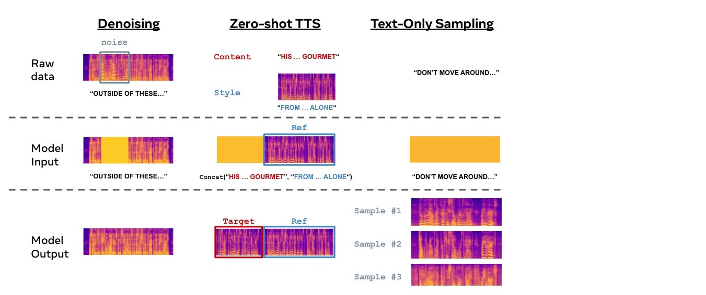
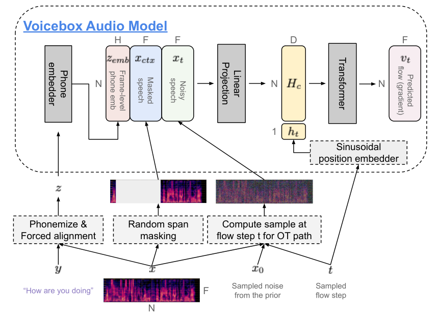
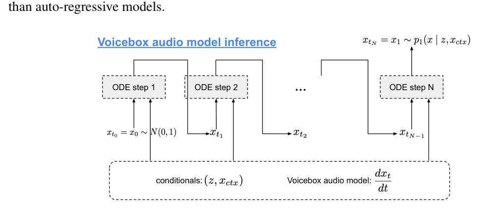
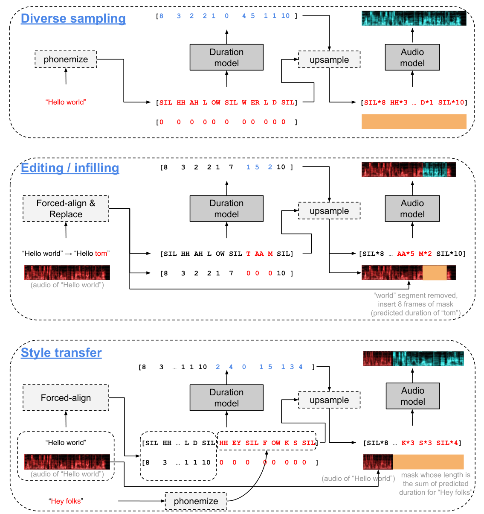
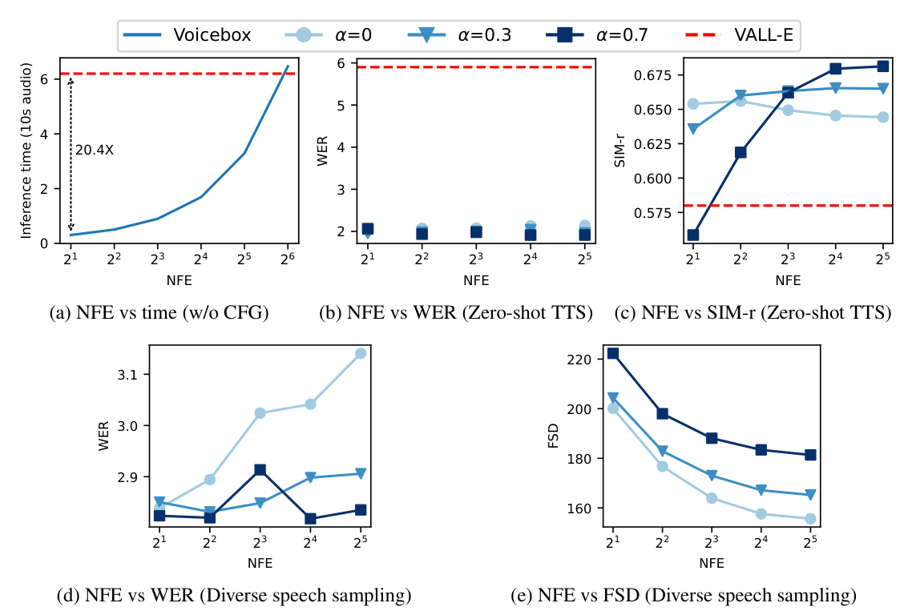
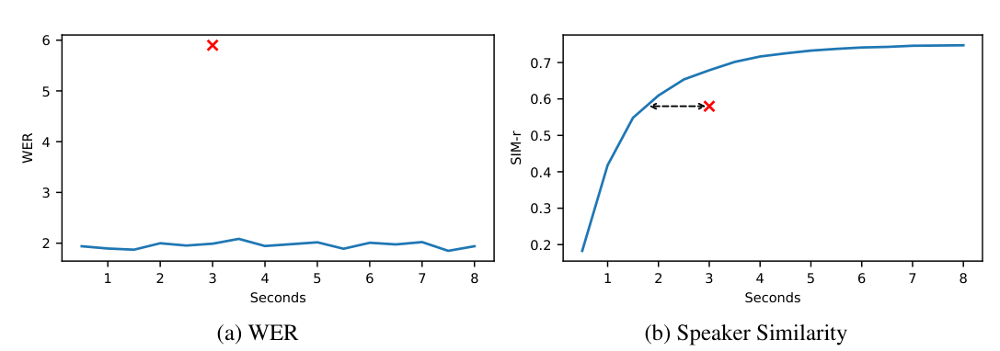
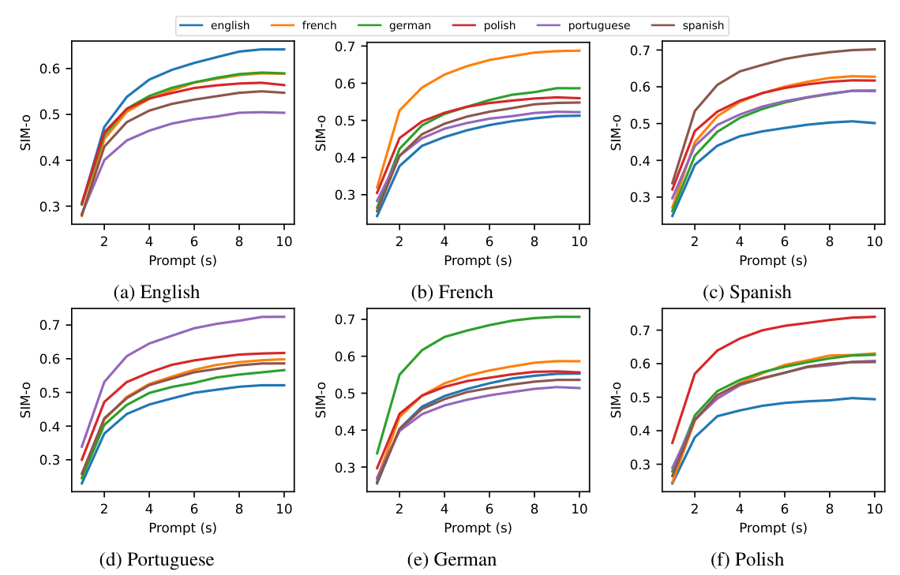
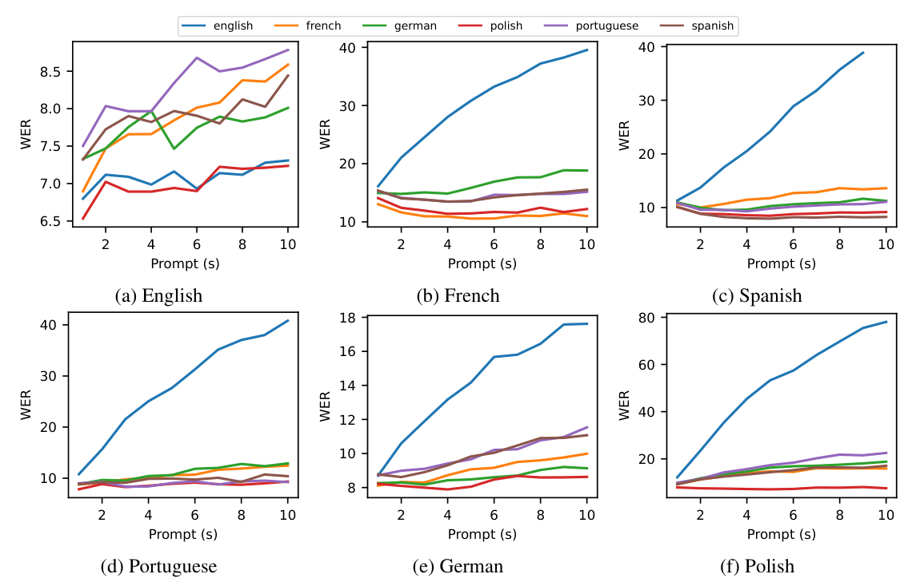

Matthew Le∗Apoorv Vyas∗ Bowen Shi∗ Brian Karrer∗ Leda Sari Rashel Moritz
Mary Williamson（作者行）Mary Williamson
Vimal Manohar Yossi Adi† Jay Mahadeokar Wei-Ning Hsu∗ Fundamental AI Research (FAIR), Meta
Vimal Manohar、Yossi Adi†、Jay Mahadeokar、Wei-Ning Hsu∗，Meta 基础人工智能研究院（FAIR）。
摘要Abstract
Large-scale generative models such as GPT and DALL-E have revolutionized natural language processing and computer vision research. These models not only generate high fidelity text or image outputs, but are also generalists which can solve tasks not explicitly taught. In contrast, speech generative models are still primitive in terms of scale and task generalization. In this paper, we present Voicebox, the most versatile text-guided generative model for speech at scale. Voicebox is a non-autoregressive flow-matching model trained to infill speech, given audio context and text, trained on over 50K hours of speech that are neither filtered nor enhanced. Similar to GPT, Voicebox can perform many different tasks through in-context learning, but is more flexible as it can also condition on future context. Voicebox can be used for mono or cross-lingual zero-shot text-to-speech synthesis, noise removal, content editing, style conversion, and diverse sample generation. In particular, Voicebox outperforms the state-of-the-art zero-shot TTS model VALL-E on both intelligibility (5.9% vs 1.9% word error rates) and audio similarity (0.580 vs 0.681) while being up to 20 times faster. Audio samples can be found in https://voicebox.metademolab.com.
GPT 和 DALL-E 等大规模生成模型已经彻底改变了自然语言处理和计算机视觉研究。这些模型不仅能生成高保真的文本或图像，还具备通用性，能够完成未经明确训练的任务。相比之下，语音生成模型在规模和任务泛化能力上仍处于初级阶段。本文提出 Voicebox：迄今功能最全面的规模化文本引导语音生成模型。Voicebox 是一个非自回归（NAR）的流匹配（flow matching）模型，在给定音频上下文与文本的条件下训练语音填充（infilling），训练语料为超过 50K 小时的语音，未经过滤，也未做增强。与 GPT 类似，Voicebox 可以通过上下文学习（in-context learning）完成许多不同任务，但它更灵活，因为它还能以未来的上下文作为条件。Voicebox 可用于单语或跨语种的零样本文本转语音（TTS）合成、噪声去除、内容编辑、风格转换以及多样化样本生成。特别地，Voicebox 在可懂度（词错误率（WER）5.9% 对 1.9%）和音频相似度（0.580 对 0.681）两项指标上均超过最先进的零样本 TTS 模型 VALL-E，同时推理速度最高快 20 倍。音频样例见 https://voicebox.metademolab.com。
1 介绍（QMOS 说明）Introduction
Recent advances in large-scale generative models [Brown et al., 2020, Nichol et al., 2021, Ramesh et al., 2021] have led to a major paradigm shift towards building general-purpose models, which can perform many new tasks not explicitly trained on. These generative models learn to predict the missing data given the context. Post training, we can directly input a question, optionally with a few contextual question-answer examples, instead of fine-tuning with labeled data. To give a concrete example, the model can answer a question like, “What is the capital of Japan?” with an example of such a relationship in the context: “The capital of Germany is Berlin. The capital of Japan is”.
大规模生成模型 [Brown et al., 2020, Nichol et al., 2021, Ramesh et al., 2021] 的最新进展带来了一次重大的范式转变：构建可以完成许多从未明确训练过的新任务的通用模型。这些生成模型学习在给定上下文的情况下预测缺失的数据。训练完成后，我们可以直接输入一个问题（可选地附带少量上下文问答示例），而无需用标注数据做微调。举个具体的例子，在给出同类关系的上下文「法国的首都是巴黎。德国的首都是柏林。」之后，模型就能回答类似「日本的首都是哪里？」这样的问题。（接上）「日本的首都是」。
While the training objective appears simple, it subsumes many tasks as one can convert them into some form of context. For the model to perform well at every task, it implies that the estimation of p(missing data | context) needs to be accurate for every context. Hence, scale and diversity are the most crucial factors for building general-purpose models [Hoffmann et al., 2022, Aghajanyan et al., 2023], as we see the state-of-the-art (SOTA) language and vision-language models are trained on web-scale data with billions to hundreds of billions of parameters.
虽然这个训练目标看起来很简单，但它涵盖了许多任务，因为任何任务都可以转化为某种形式的上下文。模型要在每个任务上都表现好，就意味着 p(缺失数据 | 上下文) 的估计必须对每一种上下文都足够准确。因此，规模与多样性是构建通用模型最关键的两个因素 [Hoffmann et al., 2022, Aghajanyan et al., 2023]，正如我们所见，最先进的（SOTA）语言模型和视觉-语言模型都是在网络规模的数据上以数十亿到数千亿参数训练出来的。
Despite the success of large-scale generative models in other areas, most speech models are still trained on datasets at the scale of tens to hundreds of hours [Ren et al., 2021, Kim et al., 2020, 2021, ∗Equal contribution. Corresponding authors: {mattle,wnhsu}@meta.com †FAIR & Hebrew University of Jerusalem.
尽管大规模生成模型在其他领域取得了成功，大多数语音模型仍然在几十到几百小时规模的数据集上训练 [Ren et al., 2021, Kim et al., 2020, 2021, ∗共同一作。通讯作者：{mattle, wnhsu}@meta.com。†FAIR 与耶路撒冷希伯来大学。
Preprint. Under review.
预印本。审稿中。
零样本 TTS（示意图标签区）Zero-shot TTS
去噪Denoising
仅文本采样（示意图区，含图 1）Text-Only Sampling

图Figure 1: Voicebox task generalization through in-context learning.
图 1：Voicebox 通过上下文学习实现任务泛化的示意图。
Popov et al., 2021, Huang et al., 2022, Tan et al., 2022, Casanova et al., 2021]. Previous works consider highly curated datasets such as VCTK [Yamagishi et al., 2019], which contains only clean audio recorded in studio from about 100 speakers with little speaking style and text variation. Such models struggle to synthesize speech with rich variation in emotion, voice, background noise, acoustic condition, and have not been tested on the abilities to generalize to tasks not explicitly trained on.
（接上页引文）Popov et al., 2021, Huang et al., 2022, Tan et al., 2022, Casanova et al., 2021]。以往的工作多使用高度筛选的数据集，例如 VCTK [Yamagishi et al., 2019]，其中只包含约 100 位说话人在录音棚录制的干净音频，说话风格和文本变化都很少。这类模型难以合成在情感、嗓音、背景噪声、声学条件上变化丰富的语音，也从未被检验过能否泛化到未经显式训练的任务。
There had been a few attempts of using in-the-wild data such as CommonVoice [Ardila et al., 2019], Librispeech [Panayotov et al., 2015], and LibriTTS [Zen et al., 2019] for training text-to-speech (TTS) models. It led to huge quality degradation compared to training on curated datasets [Hsu et al., 2019, Wang et al., 2021]. In particular, while in-the-wild data are generally of lower quality, the gap between synthesized and training speech is big compared to that of the models trained on curated speech [Wang et al., 2021], which suggests that previous models terribly underfit in-the-wild data.
此前已有一些尝试，使用野外采集的数据（如 CommonVoice [Ardila et al., 2019]、LibriSpeech [Panayotov et al., 2015] 和 LibriTTS [Zen et al., 2019]）来训练 TTS 模型。但与在筛选过的数据集上训练相比，质量出现了大幅下降 [Hsu et al., 2019, Wang et al., 2021]。具体来说，虽然野外数据质量普遍较低，但与在筛选语音上训练的模型相比，合成语音与训练语音之间的差距更大 [Wang et al., 2021]，这说明以往的模型对野外数据严重欠拟合。
This paper presents Voicebox, the most versatile text-conditioned speech generative model at scale. Voicebox is trained on a text-guided speech infilling task, where the goal is to generate masked speech given its surrounding audio and text transcript. This can be considered as a guided in-context learning problem, where audio style is inferred from the audio context and textual content is specified through transcript. Voicebox does not require any audio style labels (e.g., speaker, emotion, and noise), which differentiates Voicebox from the majority of prior work where such labels are used extensively. Prior work uses labels to make the mapping between input (text and audio style) and output (speech) more deterministic to reduce underfitting [Wang et al., 2021, Popov et al., 2021]. We show that Voicebox’s text-guided speech infilling approach is much more scalable in terms of data while subsuming many common speech generative tasks.
本文提出 Voicebox：迄今功能最全面的规模化文本条件语音生成模型。Voicebox 在文本引导的语音填充任务上训练：给定周围的音频和文本转写，生成被掩蔽的语音。这可以看作一个有引导的上下文学习问题：音频风格从音频上下文中推断，文本内容则通过转写文本指定。Voicebox 不需要任何音频风格标签（如说话人、情感、噪声），这使它区别于大量依赖此类标签的先前工作。先前工作使用标签让输入（文本与音频风格）到输出（语音）的映射更加确定，以缓解欠拟合 [Wang et al., 2021, Popov et al., 2021]。我们表明，Voicebox 的文本引导语音填充方法在数据规模上更具可扩展性，同时涵盖了许多常见的语音生成任务。
In terms of modeling, Voicebox is a non-autoregressive (NAR) continuous normalizing flow (CNF) model [Chen et al., 2018]. Similar to diffusion models [Ho et al., 2020], CNFs model the transformation from a simple distribution to a complex data distribution (p(missing data | context)), parameterized by a neural network. We train Voicebox with flow-matching [Lipman et al., 2023], a recently proposed method that enables efficient and scalable training of CNFs via a simple vector field regression loss. In contrast to auto-regressive models, Voicebox can consume context not only in the past but also in the future. Moreover, the number of flow steps can be controlled at inference time to flexibly trade off quality and runtime efficiency.
在建模上，Voicebox 是一个非自回归（NAR）的连续归一化流（CNF）模型 [Chen et al., 2018]。与扩散模型 [Ho et al., 2020] 类似，CNF 对从简单分布到复杂数据分布（p(缺失数据 | 上下文)）的变换建模，并由神经网络参数化。我们使用流匹配（flow matching）[Lipman et al., 2023] 训练 Voicebox，这是最近提出的一种方法，通过简单的向量场回归损失实现 CNF 的高效、可扩展训练。与自回归（AR）模型不同，Voicebox 不仅能利用过去的上下文，还能利用未来的上下文。此外，流步数可以在推理时控制，从而灵活地在质量与运行效率之间做权衡。
Voicebox is trained on 60K hours of English audiobooks and 50K hours of multilingual audiobooks in 6 languages for the mono and multilingual setups. Voicebox achieves SOTA performance on mono-lingual/cross-lingual zero-shot TTS, speech denoising, speech editing, diverse speech sampling and an application to data creation for speech recognition. To tackle the lack of comparability due to the use of subjective metrics, this paper presents a series of metrics using public models to facilitate reproducible comparison and model development for speech generation studies.
Voicebox 在两种设定下训练：单语设定使用 60K 小时英语有声书，多语言设定使用覆盖 6 种语言的 50K 小时多语言有声书。Voicebox 在单语/跨语种零样本 TTS、语音去噪、语音编辑、多样化语音采样以及为语音识别合成训练数据等任务上均达到 SOTA 水平。为解决主观指标导致的结果不可比问题，本文提出一系列基于公开模型的指标，以促进语音生成研究中可复现的比较和模型开发。
The contribution of this work can be summarized as follows:
本工作的贡献可总结如下：
1. Voicebox represents a breakthrough in generative modeling for speech. By learning to solve a text-guided speech infilling task with large scale data, Voicebox can solve tasks it was not explicitly trained to accomplish via in-context learning.
1.Voicebox 代表了语音生成建模的突破。通过在大规模数据上学习文本引导的语音填充任务，Voicebox 能借助上下文学习解决它从未被显式训练过的任务。
2. Voicebox outperforms VALL-E and achieves a new SOTA English zero-shot TTS result (5.9% →1.9% on word error rate (WER) and 0.580 →0.681 on audio similarity).
2.Voicebox 超过 VALL-E，取得英语零样本 TTS 的新 SOTA 结果（词错误率（WER）从 5.9% 降至 1.9%，音频相似度从 0.580 提升至 0.681）。
3. Voicebox is the first model that can perform high-quality cross-lingual zero-shot TTS across six languages. It does not use any style labels, pre-trained embedders, or multilingual samples. Compared to the prior cross-lingual SOTA YourTTS, Voicebox reduces the average WER from 10.9% to 5.2%, and improves audio similarity from 0.335 to 0.481.
3.Voicebox 是首个能在六种语言间进行高质量跨语种零样本 TTS 的模型。它不使用任何风格标签、预训练嵌入器，也不使用多语言混合样本。与先前的跨语种 SOTA 模型 YourTTS 相比，Voicebox 将平均 WER 从 10.9% 降至 5.2%，并将音频相似度从 0.335 提升至 0.481。
4. Voicebox is capable of infilling speech of any length and outperforms the prior SOTA A3T, on text guided denoising with -8.8% WER, +0.450 similarity, and +0.80 mean opinion score.
4.Voicebox 能填充任意长度的语音，并在文本引导去噪上超过先前 SOTA 模型 A3T：WER 降低 8.8%，相似度提高 0.450，平均意见分提高 0.80。
5. Voicebox can generate diverse and realistic speech. An ASR system can be trained solely on synthetic speech generated by Voicebox, resulting in only 0.4%/1.7% absolute WER increase on Librispeech test-other/test-clean compared to training on real data. In contrast, previous TTS models suffer from at least 18.2%/44.5% absolute WER increase.
5.Voicebox 能生成多样且真实的语音。仅用 Voicebox 生成的合成语音训练 ASR 系统，与用真实数据训练相比，在 LibriSpeech test-other/test-clean 上 WER 仅绝对上升 0.4%/1.7%。相比之下，此前的 TTS 模型至少带来 18.2%/44.5% 的绝对 WER 上升。
2 2 相关工作：生成式语音模型Related Work Generative speech models
Most speech generative models are task-specific and trained on different datasets. One common type of task is audio style conversion, which aims to convert only a specific attribute while keeping other attributes the same. Voice conversion [Kameoka et al., 2018, Lorenzo-Trueba et al., 2018], emotion conversion [Robinson et al., 2019, Kreuk et al., 2022], speech enhancement [Xu et al., 2014, Défossez et al., 2020, Serrà et al., 2022] belong to this category. Many of these models are supervised and trained on pairs of data that only differ in one attribute, for example, emotion [Kreuk et al., 2022]. It is hard to obtain such data. Moreover, some attributes, such as speaking style, are hard to annotate. Hence, these models are often trained on small datasets and do not generalize well.
大多数语音生成模型都是任务专用的，且训练于不同的数据集上。一类常见任务是音频风格转换：只改变某一个特定属性，同时保持其他属性不变。语音转换 [Kameoka et al., 2018, Lorenzo-Trueba et al., 2018]、情感转换 [Robinson et al., 2019, Kreuk et al., 2022]、语音增强 [Xu et al., 2014, Défossez et al., 2020, Serrà et al., 2022] 都属于这一类。其中许多模型是有监督的，需要在仅有一个属性不同的成对数据上训练，例如情感 [Kreuk et al., 2022]。这样的数据很难获取。此外，有些属性（如说话风格）很难标注。因此，这些模型往往在小数据集上训练，泛化能力不佳。
Controllable text-to-speech synthesis (TTS) is another common task, which aims to synthesize speech in a target audio style (e.g., voice, speaking style, recording environment) given text. While some styles like voice can be specified through labels [Kim et al., 2021] or pre-trained embeddings like YourTTS [Casanova et al., 2021] and Jia et al. [2018]; others like prosody are hard to annotate or embed. Previous studies [Wang et al., 2018, Akuzawa et al., 2018, Hsu et al., 2019] tried to control them by learning a residual embedding. However, these models encode style in a low-dimensional space and impose an overly simple distribution of speech given text and residual embedding [Ren et al., 2021, Shen et al., 2017]. They cannot generate realistic noisy speech given a low dimensional vector, and performance degrades when conditioned on noisy references [Hsu et al., 2019].
可控文本转语音（TTS）合成是另一类常见任务：给定文本，合成具有目标音频风格（如嗓音、说话风格、录音环境）的语音。有些风格（如嗓音）可以通过标签 [Kim et al., 2021] 或预训练嵌入（如 YourTTS [Casanova et al., 2021] 和 Jia et al. [2018]）来指定；但另一些（如韵律）很难标注或嵌入。先前研究 [Wang et al., 2018, Akuzawa et al., 2018, Hsu et al., 2019] 尝试通过学习残差嵌入来控制这些属性。然而，这些模型将风格编码在低维空间中，对给定文本和残差嵌入下语音的分布施加了过于简单的假设 [Ren et al., 2021, Shen et al., 2017]。给定一个低维向量，它们无法生成真实的带噪语音，且以带噪参考音频为条件时性能会下降 [Hsu et al., 2019]。
Infilling can be considered as another type of task. It aims to predict speech given context [Lakhotia et al., 2021, Borsos et al., 2022a] and optionally text guidance [Bai et al., 2022, Borsos et al., 2022b, Wang et al., 2023]. Instead of learning an explicit embedding to control style, infilling models predict speech coherent to the context. In other words, these models perform in-context learning similar to Large Language Models (LLMs), which specifies the task (i.e., the desired style to convert) through context. While this is a step toward building large scale generalist models using little explicit supervision, most prior work using text guidance still assumes a deterministic mapping from text and context to target [Bai et al., 2022, Borsos et al., 2022b], which is only realistic for very short segments. Hence, models with those assumptions could typically only infill segments up to 1 second [Borsos et al., 2022b]. Voicebox is a text-guided infilling model, but it leverages the CNF model that can parameterize any distribution. Hence, Voicebox can infill speech of any length and can be trained on in-the-wild datasets with rich variation, and provide a general solution that subsumes many tasks in a text-guided fashion.
填充（infilling）可以看作另一类任务。它的目标是给定上下文 [Lakhotia et al., 2021, Borsos et al., 2022a]、并可选地结合文本引导 [Bai et al., 2022, Borsos et al., 2022b, Wang et al., 2023] 来预测语音。填充模型不学习显式的嵌入来控制风格，而是预测与上下文连贯的语音。换句话说，这些模型执行与大语言模型（LLM）类似的上下文学习，通过上下文来指定任务（即期望转换到的风格）。虽然这是朝着用很少显式监督构建大规模通用模型迈出的一步，但大多数使用文本引导的先前工作仍假设从文本和上下文到目标的映射是确定性的 [Bai et al., 2022, Borsos et al., 2022b]，这一假设只对很短的片段才成立。因此，基于这类假设的模型通常只能填充最长 1 秒的片段 [Borsos et al., 2022b]。Voicebox 是一个文本引导的填充模型，但它利用可以对任意分布参数化的 CNF 模型。因此，Voicebox 可以填充任意长度的语音，可以在变化丰富的野外数据集上训练，并提供以文本引导方式涵盖多种任务的通用解决方案。
大规模上下文学习模型Large scale in-context learning models
With the advancement in neural codec for speech [Hsu et al., 2021, Défossez et al., 2022, Zeghidour et al., 2022], many recent studies explore token-based language modeling for speech generation. The GSLM-family [Lakhotia et al., 2021, Kharitonov et al., 2021, Nguyen et al., 2022] are textless language models built upon HuBERT units [Hsu et al., 2021] for speech continuation without using text. HuBERT units encode mostly content [Polyak et al., 2021], and the generated speech does not preserve the voice of the prompt. To tackle this, AudioLM [Borsos et al., 2022a] considers a cascaded approach which first generates HuBERT-like tokens and then predicts SoundStream [Zeghidour et al., 2022] tokens, a reconstruction based codec that preserves style. These models are not conditioned on text and are evaluated on spoken language modeling tasks.
随着语音神经 codec 的发展 [Hsu et al., 2021, Défossez et al., 2022, Zeghidour et al., 2022]，许多近期研究探索了基于 token 的语言建模来做语音生成。GSLM 系列 [Lakhotia et al., 2021, Kharitonov et al., 2021, Nguyen et al., 2022] 是建立在 HuBERT 单元 [Hsu et al., 2021] 之上的无文本语言模型，用于不使用文本的语音续写。HuBERT 单元主要编码内容 [Polyak et al., 2021]，生成的语音无法保留提示音频的嗓音。为解决这一问题，AudioLM [Borsos et al., 2022a] 采用级联方法：先生成类 HuBERT 的 token，再预测 SoundStream [Zeghidour et al., 2022] token——后者是一种基于重建、能保留风格的 codec。这些模型不以文本为条件，评估任务是口语语言建模。
VALL-E [Wang et al., 2023] is most related to Voicebox. It is a text conditioned LM trained on Encodec [Défossez et al., 2022] tokens (similar to SoundStream). Encodec tokenizes speech with a residual quantization layer, which encodes each frame with 8 codebooks at a 75Hz frame rate. The codebooks are ordered such that the first code contains the most information and so on. VALL-E has two modules. The first is an auto-regressive (AR) model that predicts the first code of each frame given text and the audio prompt. The second is an NAR model that predicts the remaining seven codebooks sequentially (all frames are predicted simultaneously when predicting each codebook).
VALL-E [Wang et al., 2023] 与 Voicebox 关系最密切。它是一个以文本为条件、在 Encodec [Défossez et al., 2022] token（与 SoundStream 类似）上训练的语言模型。Encodec 通过残差量化层对语音做 token 化，以 75Hz 的帧率用 8 个码本编码每一帧。这些码本按信息量排序：第一个码本包含最多信息，依此类推。VALL-E 包含两个模块。第一个是 AR 模型，给定文本和音频提示，预测每帧的第一个码本。第二个是 NAR 模型，顺序预测其余七个码本（预测每个码本时所有帧同时预测）。
VALL-E demonstrates state-of-the-art (SOTA) zero-shot TTS performance through in-context learning, where speech of the desired style is used as the prompt. The model considers the prompt as part of the whole utterance such that it generates the rest of the utterance containing the target text in the same audio style. Voicebox has several design advantages compared to VALL-E. 1) Voicebox can use context both in the past and future, which is useful for editing where only a segment in the middle needs to be generated. 2) Voicebox can generate speech much faster than VALL-E because flow-matching can produce high quality samples with less than ten NAR steps, while VALL-E requires one AR and seven NAR steps. 3) Voicebox decouples duration and audio modeling, enabling finer grained alignment control. 4) Voicebox is compatible with any continuous features including Encodec embeddings.
VALL-E 通过上下文学习展示了 SOTA 的零样本 TTS 性能：以具有期望风格的语音作为提示。模型把提示视为整个语句的一部分，从而生成包含目标文本、且与提示具有相同音频风格的其余部分。与 VALL-E 相比，Voicebox 有若干设计优势：1）Voicebox 可以同时利用过去和未来的上下文，这对只需生成中间某一段的编辑任务很有用；2）Voicebox 的生成速度远快于 VALL-E，因为流匹配只需不到 10 次 NAR 步即可产出高质量样本，而 VALL-E 需要 1 次 AR 步加 7 次 NAR 步；3）Voicebox 将时长建模与音频建模解耦，可实现更细粒度的对齐控制；4）Voicebox 兼容任何连续特征，包括 Encodec 嵌入。
NaturalSpeech2 [Shen et al., 2023] is another concurrent work that explores diffusion-style models for in-context speech generation. It adopts the latent diffusion framework [Rombach et al., 2022], which encodes speech into latent features using an auto-encoder with a residual vector quantizer, and uses a diffusion model to generate latent features conditioned on text, (predicted) pitch, and a speech prompt. The predicted latent features are converted to waveform using the decoder of the same auto-encoder.
NaturalSpeech2 [Shen et al., 2023] 是另一项同期工作，探索用扩散式模型做上下文语音生成。它采用潜扩散框架 [Rombach et al., 2022]：用带残差向量量化器的自编码器把语音编码为潜特征，再用扩散模型以文本、（预测的）基频和语音提示为条件生成潜特征。生成的潜特征由同一个自编码器的解码器还原为波形。
NaturalSpeech2 differs from Voicebox in a few key aspects. 1) it has an extra pitch predictor and conditions feature generation on pitch. 2) NaturalSpeech2 predicts learned latent features while Voicebox predicts Mel spectrogram. 3) it adopts an asymmetric encoder for speech prompt and speech target, and uses two-stage cross-attention to query the prompt. Inference for NaturalSpeech2 is more efficient in terms of attention computation because the prompt is only encoded once and reused for every diffusion step, but it is unclear how this design affects infilling performance, which was not evaluated. 4) the duration and the pitch predictor is a regression model which predicts only one duration and pitch for the same prompt and text. 5) NaturalSpeech2 always conditions on a speech prompt during inference, which does not allow diverse speech sampling demonstrated in Section 5.5. 6) Voicebox leverages flow-matching with optimal transport path which was shown to train and infer faster than diffusion paths, which is the objective NaturalSpeech2 adopts. Voicebox generates high quality samples with only 16 ODE steps while NaturalSpeech2 sets the diffusion steps to 150. The overall inference time for Voicebox is expected to be faster.
NaturalSpeech2 与 Voicebox 在几个关键方面不同：1）它有额外的基频预测器，并以基频为条件生成特征；2）NaturalSpeech2 预测学习到的潜特征，而 Voicebox 预测 Mel 频谱图；3）它对语音提示和语音目标采用非对称编码器，并用两阶段交叉注意力查询提示。NaturalSpeech2 的推理在注意力计算上更高效，因为提示只编码一次并在每个扩散步复用，但尚不清楚这一设计对填充性能有何影响——原文未做评估；4）其时长和基频预测器是回归模型，对同一提示和文本只预测一种时长和基频；5）NaturalSpeech2 在推理时始终以语音提示为条件，因此无法实现第 5.5 节展示的多样化语音采样；6）Voicebox 采用带最优传输路径的流匹配，已被证明比 NaturalSpeech2 采用的扩散路径目标训练和推理都更快。Voicebox 仅用 16 步 ODE 就能生成高质量样本，而 NaturalSpeech2 的扩散步数设为 150。Voicebox 的总体推理时间预计会更快。
3 方法完整结果（表 B4 残留）Method
3.1 3.1 背景：带最优传输路径的流匹配Background: Flow Matching with an optimal transport path
Let Rd be the data space with data points x ∈Rd drawn from some unknown distribution q(x). Continuous Normalizing Flows (CNFs) Chen et al. [2018] are a family of generative models that learn the transformation from a simple prior distribution p0 (e.g., normal distribution) to the data distribution p1 ≈q. CNFs parameterize a time-dependent vector field vt : [0, 1] × Rd →Rd that is used to construct a flow: ϕt : [0, 1] × Rd →Rd that pushes points from the prior towards the target distribution. The relationship between a vector field and a flow is defined via the ordinary differential equation (ODE) as:
设 Rd 为数据空间，数据点 x ∈ Rd 取自某个未知分布 q(x)。连续归一化流（CNF）[Chen et al.] [2018] 是一类生成模型，学习从简单先验分布 p0（如正态分布）到数据分布 p1 ≈ q 的变换。CNF 参数化一个时间相关的向量场 vt : [0, 1] × Rd → Rd，用它来构造一个流 ϕt : [0, 1] × Rd → Rd，把点从先验分布推向目标分布。向量场与流的关系由常微分方程（ODE）定义：d/dt ϕt(x) = vt(ϕt(x))，且 ϕ0(x) = x。
d dtϕt(x) = vt(ϕt(x)); ϕ0(x) = x. (1)For a flow ϕt, the probability path (time-dependent probability density function) p : [0, 1] × Rd → R>0 can be derived via the change of variables formula: pt(x) = p0(ϕ−1 t (x)) det
给定流 ϕt，可通过变量替换公式推导概率路径（时间相关的概率密度函数）p : [0, 1] × Rd → R>0：pt(x) = p0(ϕt⁻¹(x)) |det ∂ϕt⁻¹/∂x (x)|。
∂ϕ−1t ∂x (x).(2)To sample from pt(x), we first draw x0 from p0 and then solve the initial value problem (IVP) for ϕt(x0) given dϕt(x)/dt = vt(ϕt(x)) and ϕ0(x) = x0. We use xt and ϕt(x0) interchangeably.
（式 2）为从 pt(x) 采样，先从 p0 采 x0，再在 dϕt(x)/dt = vt(ϕt(x))、ϕ0(x) = x0 下求解初值问题（IVP）得 ϕt(x0)。我们交替使用 xt 和 ϕt(x0) 两种记号。
Let pt be a probability path and ut be the corresponding vector field that generates pt. The vector field vt(x; θ) parameterized by a neural network θ can be trained with the Flow Matching objective:
设 pt 为一条概率路径，ut 为生成 pt 的对应向量场。由神经网络 θ 参数化的向量场 vt(x; θ) 可以用流匹配（Flow Matching）目标训练：
LF M(θ) = Et,pt(x)||ut(x) −vt(x; θ)||2, (3)where t ∼U[0, 1] and x ∼pt(x). While the objective appears simple, in practice we do not have the prior knowledge of pt or vt, and cannot directly compute the loss or its gradient estimator.
（式 2）LFM(θ) = Et,pt(x) ||ut(x) − vt(x; θ)||²，其中 t ∼ U[0, 1]，x ∼ pt(x)。虽然这个目标看起来简单，但实际上我们事先并不知道 pt 或 vt，无法直接计算损失或其梯度估计。
Let x1 be a random variable distributed according to data distribution q. Lipman et al. [2023] first notes that a probability path pt(x) can be constructed via a mixture of simpler conditional paths pt(x | x1) whose vector field ut(x | x1) can be easily computed. To construct pt(x), a conditional path is defined such that 1) p0(x | x1) = p0(x) and 2) p1(x | x1) = N(x | x1, σ2I), a Gaussian distribution centered at x1 with a sufficiently small σ (typically 10−5). The marginal path is computed as R pt(x | x1)q(x1)dx1, which closely approximates q(x1) at t = 1. With that, [Lipman et al., 2023] presents the Conditional Flow Matching (CFM) objective,
设 x1 是服从数据分布 q 的随机变量。Lipman et al. [2023] 首先指出：概率路径 pt(x) 可以由更简单的条件路径 pt(x | x1) 混合而成，而这些条件路径的向量场 ut(x | x1) 很容易计算。为构造 pt(x)，条件路径需满足：1）p0(x | x1) = p0(x)；2）p1(x | x1) = N(x | x1, σ²I)，即以 x1 为中心、σ 充分小（通常为 10−5，即 10^-5）的高斯分布。边际路径通过 ∫ pt(x | x1)q(x1)dx1 计算，它在 t = 1 处非常接近 q(x1)。在此基础上，[Lipman et al., 2023] 提出条件流匹配（CFM）目标（式 5）：LCFM(θ) = Et,q(x1),pt(x|x1) ||ut(x | x1) − vt(x; θ)||2。
LCF M(θ) = Et,q(x1),pt(x|x1)||ut(x | x1) −vt(x; θ)||2. (4)It is proven that FM and CFM have identical gradients w.r.t. θ. More importantly, one can easily draw samples from pt(x | x1) and compute ut(x | x1) to derive an unbiased gradient estimator.
可以证明 FM 与 CFM 关于 θ 的梯度完全相同。更重要的是，我们可以很容易地从 pt(x | x1) 采样并计算 ut(x | x1)，从而得到无偏的梯度估计。
The next question is how to choose a conditional flow. A flow defines trajectories, describing how each point moves between p0 and p1. Intuitively, a simpler trajectory (e.g., a straight line) can be learned faster and the IVP can be solved more accurately and efficiently. Lipman et al. [2023] presents a conditional flow called optimal transport (OT) path, which has the form of pt(x | x1) = N(x | tx1, (1 −(1 −σmin)t)2I) and ut(x | x1) = (x1 −(1 −σmin)x) / (1 −(1 −σmin)t). The flow is arguably simple because points move with a constant speed and direction. We adopt it for Voicebox Lipman et al. [2023] also presents another flow that recovers the path of diffusion models [Song and Ermon, 2019], which is more complex than the OT path. We will present ablation studies comparing different paths (OT vs diffusion) and different objectives (CFM vs score-matching). Results show the superiority in performance and efficiency of CFM with OT path
接下来的问题是如何选择条件流。流定义了轨迹，描述每个点如何在 p0 与 p1 之间移动。直觉上，更简单的轨迹（例如直线）学得更快，初值问题也能解得更准、更高效。Lipman et al. [2023] 提出了一种称为最优传输（OT）路径的条件流，形式为 pt(x | x1) = N(x | tx1, (1 − (1 − σmin)t)²I)，ut(x | x1) = (x1 − (1 − σmin)x) / (1 − (1 − σmin)t)。（对应式 2 的目标）这个流可以说很简单，因为各点以恒定的速度和方向移动。我们在 Voicebox 中采用它。Lipman et al. [2023] 还给出了另一种能还原扩散模型 [Song and Ermon, 2019] 路径的流，它比 OT 路径更复杂。我们将给出消融实验，比较不同路径（OT 与扩散）和不同目标（CFM 与 score-matching）。结果表明，采用 OT 路径的 CFM 在性能和效率上都更优。
3.2 3.2 问题形式化Problem formulation
Given a dataset of transcribed speech (x, y) where x and y denote an audio sample and its transcript, respectively, the goal is to build a single model that can perform many text-guided speech generation tasks through in-context learning. We propose to train such a generative model on the text-guided speech infilling task, which predicts a segment of speech given its surrounding audio and the complete text transcript. Let m be a binary temporal mask which is of the same length as x, 3 and xmis = m⊙x and xctx = (1 −m) ⊙x be the complementary masked versions of x. The generative model learns p(xmis | y, xctx). In other words, y and xctx are the context and xmis is the missing data.
给定一个带转写的语音数据集 (x, y)，其中 x 和 y 分别表示音频样本及其转写文本，目标是构建一个能通过上下文学习完成多种文本引导语音生成任务的单一模型。我们提出在文本引导的语音填充任务上训练这样的生成模型：给定周围音频和完整文本转写，预测一段语音。设 m 为与 x 等长的二值时间掩蔽（“时间”指音频样本的物理时间，而非 CNF 中流的时间 t ∈ [0, 1]），并令 xmis = m ⊙ x、xctx = (1 − m) ⊙ x 为 x 的两个互补掩蔽版本。（脚注 3）生成模型学习 p(xmis | y, xctx)。换句话说，y 和 xctx 是上下文，xmis 是缺失的数据。
3.3 3.3 模型与训练Model and Training
Motivated by the need that some applications require fine-grained alignment control between speech and text, we decouple Voicebox into two components: an audio model and a duration model. Let x = (x1, x2, · · · , xN) be an audio sample of N frames, y = (y1, y2, · · · , yM) be a text sequence of M phones, and l = (l1, l2, · · · , lM) be the per-phone duration where lj denotes how many audio frames yj correspond to and PM j=1 lj = N. We further define z = rep(y, l) = (z1, z2, · · · , zN) to be the frame-level phone transcript, which repeats each yj by lj times such that zi denotes the phone label of the audio frame xi. For a pair of (x, y), l and z can be estimated through forced alignment 3“temporal” refers to the physical time of the audio sample, not the time t ∈[0, 1] of the flow in CNF. using a speech recognition model. The estimation of q(xmis | y, xctx) is then broken down into the audio model q(xmis | z, xctx) and the duration model q(lmis | y, lctx), where lmis and lctx denote l masked by m′ and 1 −m′, and m′ is downsampled from m based on l where m = rep(m′, l)
出于某些应用需要对语音与文本之间的对齐做细粒度控制，我们将 Voicebox 解耦为两个组件：音频模型和时长模型。设 x = (x1, x2, · · · , xN) 为 N 帧的音频样本，y = (y1, y2, · · · , yM) 为 M 个音素的文本序列，l = (l1, l2, · · · , lM) 为逐音素时长，其中 lj 表示 yj 对应多少音频帧，且 Σ(j=1..M) lj = N。我们进一步定义 z = rep(y, l) = (z1, z2, · · · , zN) 为帧级音素转写：把每个 yj 重复 lj 次，使 zi 表示音频帧 xi 的音素标签。对于一对 (x, y)，可以使用语音识别模型通过强制对齐估计 l 和 z。（脚注 3：“时间”指音频样本的物理时间，而非 CNF 中的流时间 t ∈ [0, 1]，即从 0 到 1。）于是 q(xmis | y, xctx) 的估计被分解为音频模型 q(xmis | z, xctx) 和时长模型 q(lmis | y, lctx)，其中 lmis 和 lctx 分别表示 l 被 m′ 和 1 − m′ 掩蔽的部分，而 m′ 由 m 根据 l 下采样得到，满足 m = rep(m′, l)。
Voicebox 音频模型（图 2）Voicebox Audio Model

图Figure 2: Illustration of the Voicebox audio model. The lower half illustrates how inputs are created during training. N denotes the number of frames, H for the phone embedding dimension, F for the spectral feature dimension, and D for the Transformer input dimension. Solid dark gray blocks denote trainable components, and light gray blocks with dashed border are frozen components or operations without trainable parameters.
图 2：Voicebox 音频模型示意图。下半部分展示训练时输入的构造方式。N 表示帧数，H 为音素嵌入维度，F 为频谱特征维度，D 为 Transformer 输入维度。深灰色实心块为可训练组件，带虚线边框的浅灰色块为冻结组件或无可训练参数的操作。
音频模型（图 2）Audio Model (Fig. 2)
Given a context z and xctx of length N, the distribution of xmis is highly stochastic especially when xmis has a large temporal span. Hence, we parameterize it with a CNF and train it using the flow matching objective with the optimal transport path. Audio x is represented as an 80-dimensional log Mel spectrogram (xi ∈R80) extracted at a 100Hz frame rate.4 The audio context xi ctx = 0 where mi = 1 and xi ctx = xi where mi = 0.
给定长度为 N 的上下文 z 和 xctx，xmis 的分布是高度随机的，尤其当 xmis 的时间跨度较大时。因此，我们用 CNF 对其参数化，并采用带最优传输路径的流匹配目标进行训练。音频 x 表示为 80 维 log-Mel 频谱图（xi ∈ R80），以 100Hz 帧率提取。音频上下文满足：mi = 1 时 xi_ctx = 0，mi = 0 时 xi_ctx = xi。（脚注 4）
For simpler conditioning, we model the conditional distribution q(x | z, xctx) of all frames x instead of only masked frames xmis. A neural network is used to parameterize the conditional vector field vt(xt, xctx, z; θ) that additionally takes xctx and z as input. Note that xt is a sample at flow step t.
为简化条件建模，我们对全部帧 x 的条件分布 q(x | z, xctx) 建模，而不是只对被掩蔽帧 xmis 建模。一个神经网络用于参数化条件向量场 vt(xt, xctx, z; θ)，它额外以 xctx 和 z 作为输入。注意 xt 是流步 t 处的样本。
Given as input xctx ∈RN×F , xt ∈RN×F , phone sequence z ∈[K]N with K denoting the number of phone classes, and a time step t ∈[0, 1], we employ a Transformer model to parameterize the vector field vt. A lookup table, denoted as L ∈RK×H, is used to embed the phone sequence z, resulting in the embedded sequence zemb ∈RN×H where zi emb = L(zi) for i ∈1, . . . , N. Subsequently, the three sequences (xt, xctx, and zemb) are concatenated frame-by-frame and projected by employing matrix Wp ∈R(2F +H)×D, thereby obtaining the sequence Hc ∈RN×D where D represents the embedding dimension of the Transformer model.
给定输入 xctx ∈ R^(N×F)、xt ∈ R^(N×F)、音素序列 z ∈ [K]^N（K 为音素类别数）以及时间步 t ∈ [0, 1]，我们用一个 Transformer 模型参数化向量场 vt。用查找表 L ∈ R^(K×H) 嵌入音素序列 z，得到嵌入序列 zemb ∈ R^(N×H)，其中 zi_emb = L(zi)，i ∈ 1, . . . , N。随后，将三个序列（xt、xctx 和 zemb）逐帧拼接，并通过矩阵 Wp ∈ R^((2F +H)×D) 投影，得到序列 Hc ∈ R^(N×D)，其中 D 为 Transformer 模型的嵌入维度。
To embed the flow step, a sinusoidal positional encoding is applied to map t ∈[0, 1] to ht ∈RD. The sequence ˜Hc ∈R(N+1)×D, which serves as the input to the Transformer model, is derived by concatenating Hc with the vector ht along the time dimension. Given the Transformer output vt(xt, xmis, z; θ) ∈RN×F , which is the sub-sequence corresponding to Hc, the loss is computed as:
为嵌入流步，应用正弦位置编码把 t ∈ [0, 1] 映射为 ht ∈ R^D。将 Hc 与向量 ht 沿时间维拼接，得到序列 H̃c ∈ R^((N+1)×D)，作为 Transformer 模型的输入。取 Transformer 输出中对应 Hc 的子序列 vt(xt, xmis, z; θ) ∈ R^(N×F)，损失计算为：
Laudio-CFM(θ) = Et,m,q(x,z),p0(x0)||ut(xt | x) −vt(xt, xctx, z; θ)||2, (5)by reparameterizing Eq. (4). During training, given an audio sample x and a prior sample x0, we have xt = (1 −(1 −σmin)t)x0 + tx and ut(xt | x) = x −(1 −σmin)x0. This function computes the loss on all frames, including those that are not masked and would not be required during inference.
（式 2 的推广）Laudio-CFM(θ) = Et,m,q(x,z),p0(x0) ||ut(xt | x) − vt(xt, xctx, z; θ)||²，由式 (4) 重参数化得到。训练时，给定音频样本 x 和先验样本 x0，有 xt = (1 − (1 − σmin)t)x0 + tx，ut(xt | x) = x − (1 − σmin)x0。该函数在所有帧上计算损失，包括那些未被掩蔽、推理时也不需要生成的帧。
4A Mel-spectrogram can be converted back to a waveform using a vocoder.
（脚注 4）Mel 频谱图可以用声码器转换回波形。
To divert the model’s focus to masked frames, we present a masked version of Laudio-CFM:
为让模型的注意力集中到被掩蔽帧上，我们给出 Laudio-CFM 的掩蔽版本：
Laudio-CFM-m(θ) = Et,m,q(x,z),p0(x0)||m ⊙(ut(xt | x) −vt(xt, xctx, z; θ)) ||2, (6)where the loss is only computed on masked frames. Appendix B.1 shows it leads to better results.
（式 2 的掩蔽形式）Laudio-CFM-m(θ) = Et,m,q(x,z),p0(x0) ||m ⊙ (ut(xt | x) − vt(xt, xctx, z; θ)) ||²，损失只在被掩蔽帧上计算。附录 B.1 表明这一版本带来更好的结果。
时长模型Duration model
We consider two solutions. The first one closely follows the audio model. It models q(l | y, lctx) via a conditional vector field which swaps (x, xctx, z) with (l, lctx, y) and accordingly for the flow, where l, lctx ∈RM×1 and y ∈[K]M. The masked version of the CFM loss is used for training. On the other hand, previous studies have shown that regression duration models can produce reasonable speech [Ren et al., 2021, Ła´ncucki, 2021]. Hence we consider a second solution that regresses the masked duration lmis given the context duration lctx and phonetic transcript y. The same Transformer model is used, except that there are only two input sequences instead of three, and the time embedding is not used. The model is trained with an L1 regression loss on masked phones:
我们考虑两种方案。第一种方案与音频模型基本一致。它通过一个条件向量场对 q(l | y, lctx) 建模，把 (x, xctx, z) 替换为 (l, lctx, y)，流也做相应替换，其中 l, lctx ∈ R^(M×1)，y ∈ [K]^M。训练使用掩蔽版 CFM 损失。另一方面，已有研究表明回归式时长模型也能产生合理的语音 [Ren et al., 2021, Łańcucki, 2021]。因此我们考虑第二种方案：给定上下文时长 lctx 和音素转写 y，回归被掩蔽时长 lmis。使用同一个 Transformer 模型，只是输入序列只有两个而非三个，且不使用时间嵌入。模型在被掩蔽音素上用 L1 回归损失训练：
Ldur-regr-m(θ) = Em,q(l,y)||m′ ⊙(lmis −g(lctx, y; θ)) ||1, (7)where g denotes the regression-based duration model. This is similar to the duration model used in FastSpeech2 [Ren et al., 2021], but with additional duration context lctx as input.
Ldur-regr-m(θ) = Em,q(l,y) ||m′ ⊙ (lmis − g(lctx, y; θ)) ||1，其中 g 表示基于回归的时长模型。这与 FastSpeech2 [Ren et al., 2021] 使用的时长模型类似，但额外以时长上下文 lctx 为输入。
3.4 推理Inference
To sample from the the learned audio distribution p1(x | z, xctx), a noise x0 is first sampled from p0, and then an ODE solver is used to evaluate ϕ1(x0) given dϕt(x0)/dt = vt(ϕt(x0), xctx, z; θ) and the initial condition ϕ0(x0) = x0. Fig. 3 provides an illustration of the process.
要从学习到的音频分布 p1(x | z, xctx) 采样，先从 p0 采样噪声 x0，然后用 ODE 求解器在 dϕt(x0)/dt = vt(ϕt(x0), xctx, z; θ) 和初始条件 ϕ0(x0) = x0 下求 ϕ1(x0)。图 3 给出该过程的示意。
Intuitively, the ODE solver computes ϕ1(x0) by evaluating vt at multiple t to approximate the integration from t = 0 to t = 1 given the initial condition ϕ0(x0) = x0. The number of function evaluation (NFE) is defined as how many times dϕt(x0)/dt is evaluated. A higher NFE often leads to a more accurate solution of ϕ1(x0) at the cost of longer run time. This provides great flexibility for users to decide the trade-off between speed and accuracy. Moreover, we find that empirically Voicebox can generate very high quality speech with less than 10 NFEs, making it significantly faster than auto-regressive models.
直观地说，ODE 求解器通过在多个 t 处评估 vt，从初始条件 ϕ0(x0) = x0 出发近似 t = 0 到 t = 1 的积分，从而计算 ϕ1(x0)。函数评估次数（NFE）定义为 dϕt(x0)/dt 被评估的次数。更高的 NFE 通常能得到更精确的 ϕ1(x0) 解，代价是运行时间更长。这为用户提供了极大的灵活性，自行决定速度与精度之间的权衡。此外，我们经验上发现 Voicebox 用不到 10 次 NFE 就能生成非常高质量的语音，这使它显著快于自回归模型。

图Figure 3: Inference is equivalent to solving an ODE with an initial condition x0 sampled from the prior, a derivative dxt
图 3：推理等价于求解一个 ODE：初始条件 x0 从先验采样，导数 dxt/dt 由音频模型给出（标题在抽取中截断）。
dt specified by the audio model, and conditional inputs (z, xctx). At each step, the ODE solver estimate xt+1 given t, xt from the previous step, the audio model, and the conditional inputs. In the end, it produces x1, which is a sample drawn from the learned distribution p1.
（接图 3，续）dt 由音频模型指定，条件输入为 (z, xctx)。每一步中，ODE 求解器根据上一步的 t、xt、音频模型和条件输入估计 xt+1。最终得到 x1，即从学习到的分布 p1 中抽取的一个样本。
3.5 3.5 无分类器引导Classifier-Free Guidance
Classifier guidance (CG) [Dhariwal and Nichol, 2021] is a technique used to trade off mode coverage and sample fidelity for diffusion models post training, similar to the effect of truncated or lowtemperature sampling for generative adversarial networks [Brock et al., 2018] and discrete flow models [Kingma and Dhariwal, 2018]. It modifies the score estimate of a diffusion model to include the gradient of the log likelihood of an auxiliary classifier. Ho and Salimans [2022] notes that CG approximates sampling from p(x | c)p(c | x)α where c is the conditioner, and this can be simulated without a classifier by mixing the score estimate of a conditional model and an unconditional model. The unconditional model can be jointly trained by dropping the conditioner c with some probability, and the same model provides score estimates for both p(x) and p(x | c).
分类器引导（CG）[Dhariwal and Nichol, 2021] 是一种在训练后权衡扩散模型模式覆盖度与样本保真度的技术，其作用类似于生成对抗网络 [Brock et al., 2018] 和离散流模型 [Kingma and Dhariwal, 2018] 中的截断采样或低温采样。它修改扩散模型的 score 估计，加入一个辅助分类器的对数似然梯度。Ho and Salimans [2022] 指出，CG 近似于从 p(x | c)p(c | x)^α 采样（c 为条件），而这可以通过混合条件模型与无条件模型的 score 估计来模拟，无需分类器。无条件模型可以通过在训练时以一定概率丢弃条件 c 来联合训练，同一个模型同时为 p(x) 和 p(x | c) 提供 score 估计。
We extend the idea of classifier free guidance (CFG) to flow-matching models. The conditioner c is equivalent to (z, xctx) for audio models and (y, lctx) for duration models, which is dropped with puncond during training. During inference, the modified vector field ˜vt for the audio model becomes
我们将无分类器引导（CFG）的思想推广到流匹配模型。条件 c 在音频模型中等价于 (z, xctx)，在时长模型中等价于 (y, lctx)，训练时以概率 puncond 被丢弃。推理时，音频模型修改后的向量场 ṽt 变为 ṽt(w, xmis, z; θ) = (1 + α) · vt(w, xctx, z; θ) − α · vt(w; θ)，其中 α 为引导强度，vt(w; θ) 通过丢弃 xctx 和 z 得到。
˜vt(w, xmis, z; θ) = (1 + α) · vt(w, xctx, z; θ) −α · vt(w; θ), (8)where α is the strength of the guidance, and vt(w; θ) is obtained by dropping xctx and z. We use α and αdur for the CFG strengths for audio and duration model, respectively, which are selected based on empirical results.5
推理时，音频模型修改后的向量场 ṽt 变为 ṽt(w, xmis, z; θ) = (1 + α) · vt(w, xctx, z; θ) − α · vt(w; θ)，其中 α 为引导强度，vt(w; θ) 通过丢弃 xctx 和 z 得到。音频模型和时长模型的 CFG 强度分别记为 α 和 αdur，根据经验结果选取。（脚注 5）
3.6 3.6 应用Applications
We demonstrate that Voicebox exhibits in-context learning abilities similar to LLMs by presenting a few examples of how to create context to perform tasks Voicebox was not explicitly trained on. These examples are also illustrated in Figs. 1 and 4.
我们通过若干示例展示 Voicebox 具备类似 LLM 的上下文学习能力：只需构造合适的上下文，即可完成 Voicebox 从未显式训练过的任务。这些示例也在图 1 和图 4 中展示。
零样本 TTS 与保持对齐的风格迁移Zero-shot TTS & alignment-preserved style transfer
Given a target text ˆy and a transcribed reference audio (x, y), zero-shot TTS aims to synthesize speech resembling the possibly unseen audio style of the reference. Voicebox performs the task by treating the reference audio and the target speech as one utterance where the target speech is masked. Let l and z be phone duration and frame-level transcript of (x, y). The target duration ˆl is sampled given the duration context l and concatenated phone sequence cat(y, ˆy). The target speech ˆx is then sampled given the context x and concatenated frame-level phones cat(z, rep(ˆy, ˆl)).
给定目标文本 ŷ 和一段带转写的参考音频 (x, y)，零样本 TTS 的目标是合成模仿参考音频（可能是未见过的）音频风格的语音。Voicebox 把参考音频和目标语音视为一条语句来完成该任务，其中目标语音部分被掩蔽。设 l 和 z 为 (x, y) 的音素时长和帧级转写。目标时长 l̂ 以时长上下文 l 和拼接后的音素序列 cat(y, ŷ) 为条件采样得到。然后以上下文 x 和拼接后的帧级音素 cat(z, rep(ŷ, l̂)) 为条件采样目标语音 x̂。
Voicebox can also convert the audio style for speech ¯x while preserving its alignment ¯z. This is useful for editing audio that is synchronized with other modalities such as video. Similar to zero-shot TTS, Voicebox can simply perform the task by sampling target speech ˆx given the context x and concatenated frame-level phones cat(z, ¯z).
Voicebox 还可以在保持语音 x̄ 对齐 z̄ 不变的前提下转换其音频风格。这对于需要与视频等其他模态保持同步的音频编辑很有用。与零样本 TTS 类似，Voicebox 只需以上下文 x 和拼接后的帧级音素 cat(z, z̄) 为条件采样目标语音 x̂ 即可完成该任务。
瞬态噪声去除与内容编辑Transient noise removal & content editing
When recording speech, one might misspeak a few words or the recording my be interrupted by unexpected background noise. In these scenarios it is desired to just modify the problematic segment instead of re-recording the speech. Voicebox can perform transient noise removal through re-generating the noise corrupted segment given the original frame-level transcript and the surrounding clean audio. Specifically, given the frame-level transcript z of a transcribed noisy speech (x, y), a user creates a mask m to indicate the noisy segment. The segment ˆxmis is then sampled given z and xctx = (1 −m) ⊙x. The audio model would likely generate clean speech for ˆxmis because during training clean audio context co-occurs with clean target audio most of the time. The new audio ˆx = ˆxmis + xctx.
录制语音时，说话人可能说错几个词，或者录音被意外的背景噪声打断。在这些场景下，人们希望只修改出问题的片段，而不是重录整段语音。Voicebox 可以执行瞬态噪声去除：给定原始帧级转写和周围的干净音频，重新生成被噪声污染的片段。具体来说，给定带转写含噪语音 (x, y) 的帧级转写 z，用户创建一个掩蔽 m 来标出含噪片段。然后以 z 和 xctx = (1 − m) ⊙ x 为条件采样该片段 x̂mis。音频模型很可能会为 x̂mis 生成干净语音，因为训练时干净的音频上下文绝大多数时候与干净的目标音频共现。新音频为 x̂ = x̂mis + xctx。
For content editing, let ˆy be the new desired transcript with some words from the original transcript y replaced, and l be the original duration. A user first constructs lctx (of the same length as ˆy) by copying the lengths of phones that are not replaced from l, and set the lengths to 0 for new phones. The duration of new phones ˆlmis is sampled given lctx and ˆy, and the new duration ˆl = ˆlmis + lctx. The new frame-level transcript is constructed with ˆz = rep(ˆy, ˆl). Similarly, the audio context xctx is of the same length as ˆz, and is created by filling frames mapped to unreplaced phones with the corresponding frames in x, and leaving those for new phones with 0. The frames for the new phones ˆxmis are sampled given ˆz and xctx. The edited speech is computed as ˆx = ˆxmis + xctx.
对于内容编辑，设 ŷ 为新的目标转写（其中原转写 y 的一些词被替换），l 为原始时长。用户首先构造 lctx（长度与 ŷ 相同）：从 l 中复制未被替换音素的时长，并把新音素的时长设为 0。以 lctx 和 ŷ 为条件采样新音素的时长 l̂mis，得到新时长 l̂ = l̂mis + lctx。新的帧级转写由 ẑ = rep(ŷ, l̂) 构造。类似地，音频上下文 xctx 与 ẑ 等长：映射到未替换音素的帧用 x 中对应的帧填充，新音素对应的帧则留 0。以 ẑ 和 xctx 为条件采样新音素对应的帧 x̂mis。编辑后的语音为 x̂ = x̂mis + xctx。
多样化语音采样与保持对齐的风格打乱Diverse speech sampling & alignment-preserved style shuffling
Voicebox can generate diverse speech samples by infilling the whole utterance. We first use the duration model to sample ˆl given the phone transcript ˆy. We then use the audio model to sample ˆx given ˆz = rep(ˆy, ˆl).
Voicebox 可以通过填充整条语句来生成多样化的语音样本。我们首先用时长模型以音素转写 ŷ 为条件采样时长 l̂。然后用音频模型以 ẑ = rep(ŷ, l̂) 为条件采样语音 x̂。
Similar to style transfer, Voicebox can also shuffle the audio style while keeping the alignment by sampling ˆx conditioning on the frame-level transcript ¯z of the target speech clip ¯x.
与风格迁移类似，Voicebox 也可以在保持对齐的前提下打乱音频风格：以目标语音片段 x̄ 的帧级转写 z̄ 为条件采样 x̂。
5Note that the computation is doubled for the same NFE when using CFG, because each evaluation of ˜vt requires two forward passes of the model vt.
（脚注 5）注意使用 CFG 时，相同 NFE 下计算量翻倍，因为每次评估 ṽt 都需要模型 vt 做两次前向。
多样化采样（示意图）Diverse sampling
编辑／填充（示意图）Editing / infilling
风格迁移（示意图）Style transfer

图Figure 4: Detailed diagrams of diverse speech sampling, content editing, and style transfer. Text in red and blocks in orange at the input of a model denote segments to be predicted. Numbers in blue and spectrogram in cyan at the model output denote predicted duration and spectrogram.
图 4：多样化语音采样、内容编辑和风格迁移的详细示意图。模型输入处的红色文字与橙色块表示待预测的片段；模型输出处的蓝色数字与青色频谱图表示预测的时长与频谱图。
4 4 评价指标Metrics
Voicebox formulates many speech generation tasks as text-guided in-context learning problems. The common goal of audio-conditioned tasks is to produce realistic speech that is coherent with the context and has the correct textual content. For tasks not conditioned on audio context, it is desired to generate diverse and realistic samples with distribution similar to training data with correct content.
Voicebox 将许多语音生成任务统一表述为文本引导的上下文学习问题。以音频为条件的任务，其共同目标是生成真实的语音，使之与上下文连贯且文本内容正确。对于不以音频上下文为条件的任务，则希望生成多样且真实的样本，其分布与训练数据相似且内容正确。
Prior studies often adopt subjective metrics like mean opinion scores (MOS) [Ribeiro et al., 2011] which are not comparable across papers or even across studies in the same paper, because ratings can be biased by the quality of samples from other systems evaluated in the same trial. Some studies have also considered automatic quantitative metrics measuring signal-level similarity, such as mean cepstral distance (MCD) [Kubichek, 1993, Skerry-Ryan et al., 2018] for speech synthesis and voice conversion, and signal-to-noise/distortion ratio (SNR/SDR) [Le Roux et al., 2019] for speech enhancement. These metrics assume the output is deterministic given input, which is often ill-posed and unfairly penalizes generative models that produce realistic and valid samples. The caveats of signal level metrics have also been discussed in image generative modeling literature [Saharia et al., 2022]. In this paper, we advocate the following reproducible model-based perceptual metrics.
以往研究常采用平均意见分（MOS）等主观指标 [Ribeiro et al., 2011]，但这类指标在论文之间、甚至同一篇论文的不同实验之间都不可比，因为评分会受到同次评测中其他系统样本质量的干扰。也有研究采用衡量信号层面相似度的自动化定量指标，例如用于语音合成与语音转换的平均倒谱距离（MCD）[Kubichek, 1993, Skerry-Ryan et al., 2018]，以及用于语音增强的信噪比／信失真比（SNR/SDR）[Le Roux et al., 2019]。这些指标假设给定输入后输出是确定的，这一假设往往本身就不成立，并且会不公平地惩罚那些生成真实且合理样本的生成模型。信号层面指标的缺陷在图像生成建模文献中也有讨论 [Saharia et al., 2022]。本文提倡使用以下可复现的、基于模型的感知指标。
正确性与可懂度Correctness and intelligibility
This can be measured by the word error rate (WER) of the synthesized speech’s transcription with respect to the input text, which has been adopted in prior work [Wang et al., 2018]. Public automatic speech recognition (ASR) models are used for comparability. For English-only setups, we follow [Wang et al., 2023] and use HuBERT-L [Hsu et al., 2021] pre-trained on 60K hours of Librilight [Kahn et al., 2019] and fine-tuned on 960 hours of Librispeech [Panayotov et al., 2015]. For multilingual setups we use the Whisper large-v2 model [Radford et al., 2022].
这可以通过合成语音转写结果相对于输入文本的词错误率（WER）来衡量，以往工作也采用过这一做法 [Wang et al., 2018]。为保证可比性，使用公开的自动语音识别（ASR）模型。在纯英语设置下，我们遵循 [Wang et al., 2023]，使用在 60K 小时 Librilight [Kahn et al., 2019] 上预训练、并在 960 小时 Librispeech [Panayotov et al., 2015] 上微调的 HuBERT-L [Hsu et al., 2021]。在多语言设置下，我们使用 Whisper large-v2 模型 [Radford et al., 2022]。
It should be noted that while a lower WER suggests that the generated speech is more intelligible by the model and contains more correct content, it does not necessarily imply the quality is better. Similarly, when generating diverse samples or when transferring to an audio style that is more expressive or more noisy, generated speech can be harder for an ASR model to recognize, which leads to a higher WER, which does not imply the sample is bad.
需要注意的是，更低的 WER 虽然说明生成语音对模型而言更可懂、内容更正确，但并不一定意味着质量更好。类似地，在生成多样化样本、或将语音迁移到更具表现力或更嘈杂的音频风格时，生成语音对 ASR 模型而言更难识别，从而导致更高的 WER，这并不意味着样本差。
连贯性Coherence
This is measured by the similarity between the embedding of generated speech and that of the audio context, where different embedding models would reflect coherence of different attributes. VALL-E proposed to use WavLM-TDCNN speaker embedding model [Chen et al., 2022], which maps an audio clip to a fixed dimensional vector, to measure voice similarity. We consider the same model to compare with VALL-E. In particular, VALL-E reports similarity with respect to resynthesized audio context by its vocoder (Encodec-decoder), which we call SIM-resyn (SIM- r). SIM-resyn is not comparable across models using different vocoders. Hence, we advocate for computing similarity against the original audio context, which we call SIM-orig (SIM-o).
连贯性通过生成语音的嵌入与音频上下文的嵌入之间的相似度来衡量，不同的嵌入模型反映不同属性的连贯性。VALL-E 提出使用 WavLM-TDCNN 说话人嵌入模型 [Chen et al., 2022]（将音频片段映射为定长向量）来衡量音色相似度。为与 VALL-E 对比，我们采用同一模型。具体而言，VALL-E 报告的是相对于其声码器（Encodec 解码器）重合成音频上下文的相似度，我们称之为 SIM-resyn（SIM-r）。SIM-resyn 在使用不同声码器的模型之间不可比。因此，我们提倡相对于原始音频上下文计算相似度，称之为 SIM-orig（SIM-o）。
多样性与质量Diversity and quality
Fréchet Inception Score (FID) [Heusel et al., 2017] is widely adopted for image generation evaluations, which captures the similarity between generated and real images at the distribution level in some feature space. It fits a Gaussian distribution for real samples and one for generated samples in some feature space, and compute the Fréchet distance between the two. A shorter distance implies the distributions are more similar and generally reflects both higher sample quality and diversity. We adapt the metric for speech by using self-supervised wav2vec 2.0 features [Baevski et al., 2020] and refer to it as Fréchet Speech Distance (FSD). We verify its effectiveness in Appendix C.1 along with alternative features.
Fréchet Inception Score（FID）[Heusel et al., 2017] 被广泛用于图像生成评估，它在某个特征空间中捕捉生成图像与真实图像在分布层面的相似度。它在某特征空间中分别为真实样本与生成样本拟合一个高斯分布，并计算两者之间的 Fréchet 距离。距离越短意味着分布越相似，通常同时反映更高的样本质量与多样性。我们将该指标改造用于语音：采用自监督的 wav2vec 2.0 特征 [Baevski et al., 2020]，并称之为 Fréchet 语音距离（FSD）。我们在附录 C.1 中验证了它的有效性，并比较了备选特征。
As supplementary metrics, we include quality MOS (QMOS) for subjective audio quality evaluation, and similarity MOS (SMOS) for subjective audio similarity evaluation given pairs of prompt and
作为补充指标，我们报告用于主观音质评估的质量 MOS（QMOS），以及在给定提示音频与系统生成音频对的条件下用于主观相似度评估的相似度 MOS（SMOS）。
system-generated audio clips. Both of which are in the scale of 1 to 5 with 5 being the best. 50samples are evaluated for each system and 10 ratings are collected for each sample. Averaged ratings along with 95% confidence interval are reported. For that, the CrowdMOS Ribeiro et al. [2011] package was used with the recommended recipes for filtering outliers and inaccurate ratings. The MOS instructions can be found in Appendix C.5.
两者均采用 1 到 5 分制，5 分为最佳。每个系统评估 50 个样本，每个样本收集 10 份评分。报告平均评分及 95% 置信区间。为此使用了 CrowdMOS Ribeiro et al. [2011] 工具包，并按其推荐方案过滤离群与不准确的评分。MOS 评分说明见附录 C.5。
To evaluate duration models, one can continue using the aforementioned metrics to gauge the end-toend performance. Alternatively, we also present a few standalone metrics focusing on the duration model. Descriptions and results can be found in Appendices C.2 to C.4.
评估时长模型时，可以继续用上述指标衡量端到端性能。此外，我们也提出几项专门针对时长模型的独立指标。相关描述与结果见附录 C.2 至 C.4。
5 5 实验Experiment
5.1 5.1 实验设置：数据Setup Data
We train the English-only model on 60K hours ASR-transcribed English audiobooks and the multilingual model on 50K hours of multilingual audiobooks from six languages: English (En), French (Fr), German (De), Spanish (Es), Polish (Pl) and Portuguese (Pt). Following [Babu et al., 2022], for a given upsampling factor β, we upsample low resource languages to mimic sampling batches from a multinomial distribution ps ∼ ns N
我们在 60K 小时经 ASR 转写的英语有声书上训练纯英语模型，在 50K 小时涵盖六种语言的多语言有声书上训练多语言模型：英语（En）、法语（Fr）、德语（De）、西班牙语（Es）、波兰语（Pl）和葡萄牙语（Pt）。遵循 [Babu et al., 2022]，给定上采样因子 β，我们对低资源语言进行上采样，使采样批次近似服从多项分布 ps ∼ ns^β/N（s=1,...,S），其中 S 为语言总数，ns 为语言 s 的预训练小时数，N 为总小时数。
βs=1,...,S where S is the total number of languages, ns the number of pretraining hours of language s, and N the total number of hours. We set β = 0.25.
遵循 [Babu et al., 2022]，给定上采样因子 β，我们对低资源语言进行上采样，使采样批次近似服从多项分布 ps ∼ ns^β/N（s=1,...,S），其中 S 为语言总数，ns 为语言 s 的预训练小时数，N 为总小时数。我们设 β = 0.25。
The two models are abbreviated as VB-En and VB-Multi.
两个模型分别简记为 VB-En 和 VB-Multi。
The Montreal Forced Aligner (MFA) [McAuliffe et al., 2017] is used to phonemize and force align the transcript based on the MFA phone set, which is a modified version of the international phonetic alphabet (IPA). Word position postfixes are added. Audio is represented as a 80-dimensional log Mel spectrogram and a HiFi-GAN vocoder trained on the same 60K hours of English speech is used to generate waveform. More details about phone representation, data transformation, and vocoder can be found in Appendices A.1 to A.3.
使用 Montreal 强制对齐器（MFA）[McAuliffe et al., 2017] 基于 MFA 音素集（国际音标 IPA 的修改版）对转写文本进行音素化和强制对齐。并添加词内位置后缀。音频表示为 80 维对数 Mel 频谱图，并使用在相同 60K 小时英语语音上训练的 HiFi-GAN 声码器生成波形。关于音素表示、数据变换和声码器的更多细节见附录 A.1 至 A.3。
模型结果（表 5 残留）Model
Transformer [Vaswani et al., 2017] with convolutional positional embedding [Baevski et al., 2020] and symmetric bi-directional ALiBi self-attention bias [Press et al., 2021] are used for both the audio and the duration model. ALiBi bias for the flow step xt is set to 0. More details in Appendix A.6. The audio model has 24 layers, 16 attention heads, 1024/4096 embedding/feed-forward network (FFN) dimension, 330M parameters. We add skip connections connecting symmetric layers (first layer to last layer, second layer to second-to-last layer, etc.) in the style of the UNet architecture. States are concatenated channel-wise and then combined using a linear layer. The duration model has 8 heads, 512/2048 embedding/FFN dimensions, with 8/10 layers for English/multilingual setup (28M/34M parameters in total). All models are trained in FP16.
音频模型与时长模型均采用 Transformer [Vaswani et al., 2017]，并使用卷积位置嵌入 [Baevski et al., 2020] 与对称双向 ALiBi 自注意力偏置 [Press et al., 2021]。流步骤 xt 对应的 ALiBi 偏置设为 0。更多细节见附录 A.6。音频模型有 24 层、16 个注意力头，嵌入／前馈网络（FFN）维度为 1024/4096，共 330M 参数。我们按 UNet 架构的风格，在对称层之间（第一层与最后一层、第二层与倒数第二层，依此类推）添加跳跃连接。各状态在通道维上拼接，再经线性层融合。时长模型有 8 个头，嵌入／FFN 维度为 512/2048，英语／多语言设置分别为 8/10 层（总计 28M/34M 参数）。所有模型均以 FP16 训练。
训练Training
VB-En/VB-Multi audio models are trained for 500K/750K updates with an effective batch size of 240K frames. For training efficiency, audio length is capped at 1,600 frames and chunked randomly if the length exceeds this threshold. Duration models are trained for 600K updates with an effective batch size of 60K frames. The Adam [Kingma and Ba, 2014] optimizer is used with a peak learning rate of 1e-4, linearly warmed up for 5K steps and linearly decays over the rest of training. For audio models, we clip the gradient norm to 0.2 for training stability. The audio/duration sequence is masked with pdrop = 0.3/0.2, and otherwise a segment of r% sequence length is masked, where r ∼U[70, 100]/U[10, 100]. puncond is set to 0.2 for audio/duration models.
VB-En／VB-Multi 的音频模型分别训练 500K/750K 次更新，有效批大小为 240K 帧。为训练效率，音频长度上限为 1,600 帧，超过该阈值则随机切块。时长模型训练 600K 次更新，有效批大小为 60K 帧。使用 Adam [Kingma and Ba, 2014] 优化器，峰值学习率 1e-4，线性预热 5K 步，随后在剩余训练过程中线性衰减。对音频模型，我们将梯度范数裁剪到 0.2 以保证训练稳定性。音频／时长序列以 pdrop = 0.3/0.2 的概率整体丢弃掩蔽，否则掩蔽长度为序列长度 r% 的一段，其中 r ∼U[70, 100]/U[10, 100]；音频／时长模型的 puncond 均设为 0.2。
推理Inference
The torchdiffeq [Chen, 2018] package is used, which implements both fixed and adaptive step ODE solvers. By default, the midpoint solver is used with a step size of 0.0625 (NFE=32). The regression duration model is used by default. Silence at both ends are trimmed to 0.1 second max.
使用 torchdiffeq [Chen, 2018] 软件包，它同时实现了定步长与自适应步长的 ODE 求解器。默认使用中点求解器，步长 0.0625（NFE=32）。默认使用回归时长模型。两端的静音最多裁剪至 0.1 秒。
基线Baselines
We consider three baselines: 1) VALL-E [Wang et al., 2023], SOTA for English zero-shot TTS trained on Librilight. 2) YourTTS [Casanova et al., 2021], SOTA multilingual (English, French, and Portuguese) zero-shot TTS model trained on VCTK, LibriTTS, TTS-Portugese [Casanova et al., 2022], and M-AILABS French. It is a flow-based model adapted from VITS [Kim et al., 2021] using a pre-trained multilingual speaker embedder for voice conditioning. 3) A3T [Bai et al., 2022], SOTA for NAR speech editing and infilling trained with a regression loss on VCTK. We also consider Demucs [Défossez et al., 2020], a SOTA speech enhancement model trained with regression and adversarial losses for denoising experiments. Table 1 summarizes the tasks each baseline is capable of solving.
我们考虑三个基线：1) VALL-E [Wang et al., 2023]，在 Librilight 上训练的英语零样本 TTS 当前最佳模型。2) YourTTS [Casanova et al., 2021]，在 VCTK、LibriTTS、TTS-Portugese [Casanova et al., 2022] 与 M-AILABS French 上训练的多语言（英语、法语、葡萄牙语）零样本 TTS 当前最佳模型。它是基于 VITS [Kim et al., 2021] 改造的流模型，使用预训练的多语言说话人嵌入器进行音色条件化。3) A3T [Bai et al., 2022]，在 VCTK 上以回归损失训练的 NAR 语音编辑与填充当前最佳模型。在去噪实验中，我们还考虑 Demucs [Défossez et al., 2020]——一个以回归与对抗损失训练的语音增强当前最佳模型。表 1 总结了各基线能够解决的任务。
Table 1: Comparing Voicebox with baselines on task capabilities. “Sampling” refers to the ability of generating diverse audio clips without conditioning on any audio. Through infilling, A3T and Voicebox can remove transient noise but not stationary background noise. VALL-E can only generate speech conditioning on the past context. Hence, the generated segment would only be coherent to the past context but will not have a smooth transition to the future context. With that, we label VALL-E as incapable of denoising or editing.
表 1：Voicebox 与各基线在任务能力上的对比。“采样”指不以任何音频为条件生成多样化音频片段的能力。通过填充，A3T 与 Voicebox 可以移除瞬态噪声，但不能移除平稳背景噪声。VALL-E 只能以过去上下文为条件生成语音，因此生成片段只与过去上下文连贯，无法与未来上下文平滑衔接，据此我们将 VALL-E 标记为不具备去噪或编辑能力。
| as incapable of denoising or editing. | |||||
|---|---|---|---|---|---|
| Model | ZS TTS | Denoise | Partial Edit | Sampling | |
| VALL-E | ✓ | ✗ | ✗ | ✓ | |
| YourTTS | ✓ | ✗ | ✗ | ✓ | |
| A3T | ✓ | ✓(short) | ✓ | ✗ | |
| Demucs | ✗ | ✓ | ✗ | ✗ | |
| Voicebox | ✓ | ✓(short) | ✓ | ✓ |
模型结果（表 5 残留）Model
5.2 5.2 单语零样本 TTSMonolingual zero-shot TTS
Table 2 presents the zero-shot TTS results of the English model VB-En. Following [Wang et al., 2023], the test set is constructed by selecting 4 to 10 second long samples from Librispeech test-clean.
表 2 给出英语模型 VB-En 的零样本 TTS 结果。遵循 [Wang et al., 2023]，测试集从 Librispeech test-clean 中选取 4 到 10 秒长的样本构建。
We consider cross-sentence prompting where a 3 second clip from another sample of the same speaker is used as audio context, and continuation where the first 3 seconds of each utterance is used.
我们考虑两种条件方式：跨句提示（cross-sentence prompting）——取同一说话人另一条样本的 3 秒片段作为音频上下文；以及续写（continuation）——取每条语音的前 3 秒。
We ran subjective MOS studies comparing ground truth, YourTTS, and Voicebox. A3T is not included because of the bad performance and VALL-E is not included because the model is not available. Voicebox outperforms all baselines on all metrics in both cases. In particular, Voicebox transfers style much more effectively (+0.101/+0.108 SIM-r on cross-sentence/continuation) than VALL-E, and the gap is even bigger when compared against raw audio (+0.141 SIM-o on continuation). MOS studies also confirm the quality and similarity of Voicebox are subjectively better than YourTTS.
我们开展了主观 MOS 评测，对比真实语音、YourTTS 与 Voicebox。A3T 因性能太差未纳入，VALL-E 因模型不可得未纳入。在两种条件下，Voicebox 在所有指标上都优于全部基线。特别是，Voicebox 的风格迁移远比 VALL-E 有效（跨句／续写上 SIM-r 分别高 +0.101/+0.108），与原始音频对比时差距更大（续写上 SIM-o 高 +0.141）。MOS 评测也证实，Voicebox 的质量与相似度在主观上优于 YourTTS。
Table 2: English zero-shot TTS results on filtered LS test-clean. "-" results are not available. We obtain VALL-E continuation SIM result through communication with the authors.
表 2：过滤后 LS test-clean 上的英语零样本 TTS 结果。“-”表示结果不可得。VALL-E 续写 SIM 结果来自与作者的沟通。
| Model | WER | SIM-o | SIM-r | QMOS | SMOS |
|---|---|---|---|---|---|
| Ground truth | 2.2 | 0.754 | n/a | 3.98± 0.14 | 4.01±0.09 |
| cross-sentence | |||||
| A3T | 63.3 | 0.046 | 0.146 | - | - |
| YourTTS | 7.7 | 0.337 | n/a | 3.27± 0.13 | 3.19±0.14 |
| VALL-E | 5.9 | - | 0.580 | - | - |
| VB-En | 1.9 | 0.662 | 0.681 | 3.78± 0.10 | 3.71±0.11 |
| continuation | |||||
| A3T | 18.7 | 0.058 | 0.144 | - | - |
| VALL-E | 3.8 | 0.452∗ | 0.508 | - | - |
| VB-En (α = 0.7) | 2.0 | 0.593 | 0.616 | - | - |
模型结果（表 5 残留）Model
5.3 5.3 跨语言零样本 TTSCross-lingual zero-shot TTS
Tables 3 and 4 presents cross-lingual zero-shot TTS results, where the audio context and the target text are in different languages. Note that VB-Multi is not trained on any sample with multiple languages in an utterance spoken by the same speaker. The test set is constructed using filtered MLS test split described in Appendix A.4. For each target text, we sample one 3-second long audio context from each language, which creates 36 language transfer directions in total.
表 3 与表 4 给出跨语言零样本 TTS 结果，其中音频上下文与目标文本属于不同语言。注意，VB-Multi 的训练数据中不存在同一说话人在一条语音内说多种语言的样本。测试集按附录 A.4 所述的过滤后 MLS 测试划分构建。对每个目标文本，我们从每种语言各采样一段 3 秒音频上下文，共构成 36 个语言迁移方向。
Voicebox yields better performance than YourTTS everywhere. Specifically, on En/Fr/Pt which YourTTS supports, Voicebox obtains 3.1%/5.9%/8.1% lower WERs and 0.136/0.141/0.160 higher similarity averaged across audio context in six languages. The average audio similarity MOS is 0.59 (3.89 vs 3.30) higher for Voicebox and the average quality MOS is 0.27 (3.50 vs. 3.23) higher.
Voicebox 在所有方向上都优于 YourTTS。具体而言，在 YourTTS 支持的 En/Fr/Pt 上，Voicebox 的 WER 分别低 3.1%/5.9%/8.1%，在六种语言的音频上下文上平均相似度分别高 0.136/0.141/0.160。Voicebox 的平均音频相似度 MOS 高 0.59（3.89 对 3.30），平均质量 MOS 高 0.27（3.50 对 3.23）。
Table 3: Multilingual zero-shot TTS results on filtered MLS test sets. GT/YT/VB-Multi refers to ground truth/YourTTS/multilingual Voicebox. “Ref” column shows the audio context language.
表 3：过滤后 MLS 测试集上的多语言零样本 TTS 结果。GT/YT/VB-Multi 分别指真实语音／YourTTS／多语言 Voicebox。“Ref”列表示音频上下文的语言。
| Ref | De | En | Es | Fr | Pl | Pt | |||||||||||||
|---|---|---|---|---|---|---|---|---|---|---|---|---|---|---|---|---|---|---|---|
| WER | SIM-o | WER | SIM-o | WER | SIM-o | WER | SIM-o | WER | SIM-o | WER | SIM-o | ||||||||
| GT | - | 5.9 | 0.725 | 5.0 | 0.636 | 4.1 | 0.729 | 5.2 | 0.714 | 4.9 | 0.743 | 5.8 | 0.725 | ||||||
| De | n/a | n/a | 7.3 | 0.373 | n/a | n/a | 11.3 | 0.361 | n/a | n/a | 13.7 | 0.263 | |||||||
| En | n/a | n/a | 7.0 | 0.403 | n/a | n/a | 11.4 | 0.298 | n/a | n/a | 14.1 | 0.234 | |||||||
| Es | n/a | n/a | 7.6 | 0.327 | n/a | n/a | 11.6 | 0.316 | n/a | n/a | 13.5 | 0.256 | |||||||
| YT | Fr | n/a | n/a | 7.6 | 0.363 | n/a | n/a | 10.7 | 0.459 | n/a | n/a | 13.1 | 0.299 | ||||||
| Pl | n/a | n/a | 7.8 | 0.349 | n/a | n/a | 11.8 | 0.370 | n/a | n/a | 15.1 | 0.308 | |||||||
| Pt | n/a | n/a | 7.6 | 0.322 | n/a | n/a | 11.8 | 0.297 | n/a | n/a | 13.6 | 0.436 |
Ref De En Es Fr Pl Pt WER SIM-o WER SIM-o WER SIM-o WER SIM-o WER SIM-o WER SIM-o GT
表头：Ref=De/En/Es/Fr/Pl/Pt 各参考语下的 WER / SIM-o——GT（后续照原文）。
YT AVG n/a n/a7.5 0.35611.4 0.35013.9 0.2994.8 0.632 4.8 0.522 3.6 0.442 5.3 0.489 5.5 0.449 5.4 0.4205.9 0.435 4.2 0.535 4.1 0.423 6.8 0.423 8.3 0.402 7.6 0.3854.9 0.460 4.3 0.479 3.6 0.613 5.3 0.473 5.2 0.436 5.4 0.4354.9 0.476 4.3 0.485 3.7 0.479 5.1 0.602 4.8 0.408 5.4 0.4184.7 0.491 3.8 0.503 3.5 0.528 5.1 0.503 4.0 0.641 4.9 0.4764.9 0.422 4.6 0.426 3.7 0.476 5.5 0.453 4.8 0.406 5.2 0.620VB-Multi(α = 1.0)AVG5.0 0.486 4.4 0.492 3.7 0.494 5.5 0.491 5.5 0.457 5.7 0.459Table 4: Multilingual zero-shot TTS SMOS/QMOS results on filtered MLS English test set with prompts in different languages. YT/VB-Multi refers to YourTTS/multilingual Voicebox. “Ref” shows the audio context language.
表 4：过滤后 MLS 英语测试集上、提示为不同语言时的多语言零样本 TTS SMOS/QMOS 结果。YT/VB-Multi 指 YourTTS／多语言 Voicebox，“Ref”表示音频上下文语言。
| the audio context language. | |||||||
|---|---|---|---|---|---|---|---|
| Ref=De | Ref=En | Ref=Es | Ref=Fr | Ref=Pl | Ref=Pt | ||
| SMOS (target text = En) | |||||||
| YT | 3.26±0.11 | 3.24±0.11 | 3.22±0.12 | 3.48±0.10 | 3.26±0.09 | 3.38±0.11 | |
| VB-Multi (α = 1.0) | 3.89±0.10 | 3.93±0.08 | 3.84±0.10 | 3.92±0.09 | 3.81±0.08 | 3.96±0.09 | |
| QMOS (target text = En) | |||||||
| YT | 3.29±0.12 | 3.17±0.13 | 3.29±0.12 | 3.08±0.12 | 3.35±0.12 | 3.21±0.12 | |
| VB-Multi (α = 1.0) | 3.67±0.09 | 3.48±0.09 | 3.45±0.11 | 3.31±0.12 | 3.75±0.11 | 3.35±0.13 |
5.4 5.4 瞬态噪声移除Transient noise removal
We construct a noisy test set by mixing the filtered Librispeech test-clean from Section 5.2 with non-speech noise such that it overlaps with 50% of the duration at a -10dB signal-to-noise ratio. Note that for infilling models like A3T and Voicebox, the type and the SNR of transient noise would not affect the performance, because the corrupted segment is entirely masked and speech is re-generated independent of the corrupted segment. Results of additional conditions can be found in Appendix B.4.
我们构造了一个含噪测试集：将 5.2 节过滤后的 Librispeech test-clean 与非语音噪声混合，使噪声与语音 50% 的时长重叠，信噪比为 -10dB。注意，对 A3T 与 Voicebox 这类填充模型而言，瞬态噪声的类型与信噪比不会影响性能，因为受损片段被整体掩蔽，语音是在独立于受损片段的情况下重新生成的。更多条件下的结果见附录 B.4。
Table 5 presents the results comparing Voicebox with A3T and Demucs. It should be noted that A3T and Voicebox utilize transcript and location of the noise while Demucs does not. Nevertheless the goal of the study is to present a new paradigm and show Voicebox can perform denoising without being explicitly trained. Compared to the baselines, Voicebox generates samples that are much more intelligible (2.0% WER), more similar to the clean parts of the audio (0.612 SIM-o), and of higher quality (3.87 MOS) in this challenging noise condition. A3T is better than Demucs on intelligibilty and quality, but the infilled speech is not coherent because it is only trained on VCTK and cannot generalize to new audio styles.
表 5 给出 Voicebox 与 A3T、Demucs 的对比结果。需要指出，A3T 与 Voicebox 利用了转写文本与噪声位置，而 Demucs 没有。尽管如此，本研究的目的是提出一种新范式，证明 Voicebox 无需显式训练即可去噪。与基线相比，Voicebox 在这一苛刻噪声条件下生成的样本可懂度更高（2.0% WER）、与音频干净部分更相似（0.612 SIM-o）、质量更高（3.87 MOS）。A3T 在可懂度与质量上优于 Demucs，但填充语音不连贯，因为它仅在 VCTK 上训练，无法泛化到新的音频风格。
Table 5: Transient noise removal where noise overlaps with 50% of the speech at a -10dB SNR.
表 5：瞬态噪声移除，噪声以 -10dB 信噪比与 50% 的语音重叠。
| the audio context language. | |||||||||
|---|---|---|---|---|---|---|---|---|---|
| Ref=De | Ref=En | Ref=Es | Ref=Fr | Ref=Pl | Ref=Pt | ||||
| SMOS (target text = En) | |||||||||
| YT | 3.26±0.11 | 3.24±0.11 | 3.22±0.12 | 3.48±0.10 | 3.26±0.09 | 3.38±0.11 | |||
| VB-Multi (α = 1.0) | 3.89±0.10 | 3.93±0.08 | 3.84±0.10 | 3.92±0.09 | 3.81±0.08 | 3.96±0.09 | |||
| QMOS (target text = En) | |||||||||
| YT | 3.29±0.12 | 3.17±0.13 | 3.29±0.12 | 3.08±0.12 | 3.35±0.12 | 3.21±0.12 | |||
| VB-Multi (α = 1.0) | 3.67±0.09 | 3.48±0.09 | 3.45±0.11 | 3.31±0.12 | 3.75±0.11 | 3.35±0.13 | |||
| 5.4 | Transient noise removal |
模型结果（表 5 残留）Model
WER SIM-o QMOS Clean speech
表头：WER / SIM-o / QMOS——Clean speech（后续照原文）。
2.2 0.687 4.07±0.15Noisy speech41.2 0.287 2.50±0.15Demucs32.5 0.368 2.86±0.17A3T11.5 0.148 3.10±0.15 VB-En (α = 0.7) 2.0 0.612 3.87±0.175.5 5.5 多样化语音采样及其在 ASR 数据生成中的应用Diverse speech sampling and application to ASR data generation
Table 6 compares the ability to generate diverse samples for Librispeech test-other text. We consider English Voicebox (VB-En) with regression (regr) or flow-matching (FM) duration models. VITS- VCTK additionally conditions on a speaker ID, which we randomly sample for each sentence. YourTTS conditions on text and a reference audio, which we draw from the LS train splits.
表 6 对比了针对 Librispeech test-other 文本生成多样样本的能力。我们考虑带回归（regr）或流匹配（FM）时长模型的英语 Voicebox（VB-En）。VITS-VCTK 额外以说话人 ID 为条件，我们为每句随机采样一个；YourTTS 以文本和一段参考音频为条件，参考音频取自 LS 训练划分。
Qualitatively, A3T generates the same robotic voice when not conditioned on audio context and VITS- LJ generates high quality but a single voice, hence both yield high FSD (bad quality or diversity) but VITS-LJ has a low WER. VITS-VCTK improves the voice diversity and FSD and YourTTS further advances it as it is trained on more speakers. Voicebox models (with different duration samplers) outperform the baseline on FSD by large margins, showing Voicebox’s ability to produce realistic and diverse samples whose distribution is close to the training data. Among them, the FM duration model creates more varying speaking styles compared to the regression one which ASR may struggle more to recognize. Voicebox even yields lower FSDs than the real samples from the Librispeech test-other split, because the latter contains only tens of speakers and the diversity is limited.
定性来看，A3T 在不以音频上下文为条件时生成同一种机械音；VITS-LJ 质量高但只有单一音色，因此二者 FSD 都很高（质量或多样性差），不过 VITS-LJ 的 WER 很低。VITS-VCTK 改善了音色多样性与 FSD；YourTTS 因训练于更多说话人而更进一步。采用不同时长采样器的 Voicebox 模型在 FSD 上大幅优于基线，显示出 Voicebox 生成分布接近训练数据的真实且多样样本的能力。其中，FM 时长模型生成的说话风格变化更多，ASR 识别难度相对回归时长模型更大。Voicebox 的 FSD 甚至低于 Librispeech test-other 的真实样本，因为后者只包含数十位说话人，多样性有限。
We next train an ASR model using only synthetic speech and evaluate it on real speech, which has not been successful before because synthetic data were not realistic and representative enough.
接下来我们只用合成语音训练 ASR 模型并在真实语音上评测——此前这从未成功过，因为合成数据不够真实、不够有代表性。
Table 6: Diverse speech generation from LS test-other text.
表 6：从 LS test-other 文本生成多样化语音。
| test-other text. | real or synthetic | ||||
|---|---|---|---|---|---|
| Model | WER | FSD | decoded with or | ||
| Ground truth | 4.3 | 171.1 | |||
| require additional input | ASR training data | ||||
| VITS-VCTK | 10.6 | 306.6 | |||
| YourTTS (ref=LS train) | 9.0 | 277.9 | Real audio (100hr) | ||
| Real audio (960hr) | |||||
| text-only | VITS-LJ | ||||
| A3T | 37.9 | 373.0 | VITS-VCTK | ||
| VITS-LJ | 5.6 | 344.2 | YourTTS (ref=LS train) | ||
| VB-En (α = 0, dur=regr) | 3.1 | 155.7 | VB-En (α = 0, dur=regr) | ||
| 5.6 | 159.8 | VB-En (α = 0, dur=FM, |
Table 7: Performance of ASR models trained on real or synthetic speech, tested on real speech and decoded with or without a 4-gram language model.
表 7：在真实语音或合成语音上训练的 ASR 模型性能，测试于真实语音，分别在有／无 4-gram 语言模型下解码。
| real or synthetic speech, tested on real speech and | ||||||
|---|---|---|---|---|---|---|
| decoded with or without a 4-gram language model. | ||||||
| ASR training data | test-c | test-o | test-c | test-o | ||
| Real audio (100hr) | 9.0 | 21.5 | 6.1 | 16.2 | ||
| Real audio (960hr) | 2.6 | 6.3 | 2.2 | 5.0 | ||
| VITS-LJ | 58.0 | 81.2 | 51.6 | 78.1 | ||
| VITS-VCTK | 33.8 | 55.5 | 30.2 | 53.1 | ||
| YourTTS (ref=LS train) | 25.0 | 54.6 | 20.4 | 51.2 | ||
| VB-En (α = 0, dur=regr) | 7.1 | 17.6 | 6.5 | 14.6 | ||
| 3.1 | 8.3 | 2.6 | 6.7 |
WER on real data No LM 4-gram LM ASR training data test-c test-o test-c test-o Real audio (100hr)
表头：WER on real data × No LM / 4-gram LM；ASR training data × test-c / test-o / test-c / test-o；Real audio (100hr)（后续照原文）。
Table 7 compares real and synthetic data from Voicebox and three baseline models. Each TTS model generates one sample per text from the Librispeech training set, resulting in 281K utterances per system. For real data, we consider train-960 and train-clean-100. Details about the ASR model and training configurations are in Appendix A.5.
表 7 对比了真实数据与来自 Voicebox 及三个基线模型的合成数据。每个 TTS 模型为 Librispeech 训练集中的每段文本生成一条样本，每个系统共 281K 条语音。真实数据取 train-960 与 train-clean-100。ASR 模型与训练配置的细节见附录 A.5。
The results are highly correlated with the FSD scores of synthetic data. VITS-LJ gives the worst results, because the synthetic speech has only one voice. YourTTS performs better on test-clean, but is similar to VITS-VCTK on test-other. It suggests that while YourTTS is trained on more voices and can generate speech with higher voice diversity, it still fails to produce realistic noisy speech and hence the resulting ASR model still underperforms on test-other.
结果与合成数据的 FSD 分数高度相关。VITS-LJ 结果最差，因为合成语音只有一种音色。YourTTS 在 test-clean 上更好，但在 test-other 上与 VITS-VCTK 相当。这说明 YourTTS 虽然训练于更多音色、能生成音色多样性更高的语音，但仍无法生成真实的带噪语音，因此所得 ASR 模型在 test-other 上依然落后。
Both Voicebox variants beat the baseline by a large margin. In particular, Voicebox generates more diverse speech when using the FM duration model, which leads to a better ASR system when used for training. Compared to the baselines, the ASR model trained on Voicebox data with FM duration model reduces WERs by over 85% and only lags behind real data by 0.4% and 1.7% absolute.
两个 Voicebox 变体都大幅超越基线。特别是使用 FM 时长模型时，Voicebox 生成的语音更多样，用于训练能得到更好的 ASR 系统。与基线相比，用带 FM 时长模型的 Voicebox 数据训练的 ASR 模型 WER 降低超过 85%，仅比真实数据分别落后 0.4% 和 1.7%（绝对值）。
5.6 5.6 推理效率与性能的权衡Inference efficiency versus performance
We examine the trade-off between the metrics of interest (WER, SIM, FSD) for different settings of guidance strength (α) and NFE specified by the user. Fig. 5a shows the Voicebox inference time to generate an audio sample of 10 seconds (including vocoding and predicting duration) as NFE varies and compares that to VALL-E.6 For NFE=2 without CFG, Voicebox takes about 0.31 seconds, about 20 times faster than VALL-E. At NFE=64, Voicebox is only 4% slower than VALL-E.
我们考察了在用户指定的不同引导强度（α）与 NFE 设置下，所关心指标（WER、SIM、FSD）之间的权衡。图 5a 展示了 Voicebox 生成 10 秒音频（含声码器与时长预测）的推理时间随 NFE 的变化，并与 VALL-E 对比。（脚注 6）在无 CFG、NFE=2 时，Voicebox 约需 0.31 秒，约为 VALL-E 的 20 倍快。在 NFE=64 时，Voicebox 仅比 VALL-E 慢 4%。
Next, we study the cross-sentence setup of Section 5.2 to analyze the impact on WER and SIM-r. We find that for all settings Voicebox has better WER than VALL-E. WER remains stable with mean of 2.0 and variance of 0.005 as shown in Fig. 5b. Fig. 5c shows that, in the case of SIM-r, lower classifier guidance strength values (α = 0 or 0.3) produce higher speaker similarity when operating in a lower NFE regime (≤4). However, starting from NFE=8, a higher classifier guidance strength improves speaker similarity.
接着，我们在 5.2 节的跨句设置下分析对 WER 与 SIM-r 的影响。我们发现在所有设置下 Voicebox 的 WER 都优于 VALL-E。如图 5b 所示，WER 保持稳定，均值 2.0、方差 0.005。图 5c 表明，就 SIM-r 而言，在低 NFE 区间（≤4）内较低的分类器引导强度（α = 0 或 0.3）产生更高的说话人相似度。但从 NFE=8 开始，更高的分类器引导强度会提升说话人相似度。
Finally, in Fig. 5e we examine FSD by generating samples for Librispeech test-other text. We find that lower classifier guidance strength produces lower FSD scores and more diverse samples. Increasing the NFE for each setting improves FSD. Fig. 5d shows the WER of the same test case. We find that for α = 0, WER increases slightly from 2.8 to 3.1 as NFE goes from 2 to 32. For a larger classifier guidance strength, WER remains more stable. Through FSD and subjective listening, we discovered that a lower NFE leads to generating less diverse samples especially when the guidance weight is lower (α = 0 or 0.3). Although those samples are of lower quality, they are easier for the ASR model to recognize because they tend not contain extreme audio styles like whispering or high background noise. As a result, WERs are lower.
最后，在图 5e 中我们通过为 Librispeech test-other 文本生成样本来考察 FSD。我们发现较低的分类器引导强度产生更低的 FSD 和更多样的样本。提高各设置的 NFE 会改善 FSD。图 5d 给出同一测试的 WER。我们发现当 α = 0 时，NFE 从 2 增至 32，WER 从 2.8 微升至 3.1。分类器引导强度较大时，WER 更稳定。通过 FSD 与主观试听，我们发现较低的 NFE 会导致样本多样性下降，尤其是引导权重较低（α = 0 或 0.3）时。这些样本虽然质量较低，但更易被 ASR 模型识别，因为它们往往不含耳语或重背景噪声等极端音频风格。因此 WER 更低。
5.7 5.7 上下文长度对单语与跨语言零样本 TTS 的影响How context length affects monolingual and cross-lingual zero-shot TTS
Monolingual: For in-context zero-shot TTS in Section 5.2, we used 3.0 seconds of prompt audio. Here we examine how WER / SIM-r vary with different amounts of prompt audio using duration from regression duration model for the target text. If the desired prompt is longer than the available 6Re-implemented and confirmed with the authors that our re-implementation is faster (6.2 vs 10 seconds).
单语：5.2 节的上下文零样本 TTS 使用 3.0 秒提示音频。这里我们考察目标文本使用回归时长模型的时长时，WER／SIM-r 随提示音频量的变化。如果所需提示长于可用音频（……（脚注 6）我们重新实现并经作者确认，我们的重实现更快（6.2 秒对 10 秒））（接上）

图Figure 5: Trade-off between NFE and different metrics. Inference time will be doubled with CFG.
图 5：NFE 与不同指标之间的权衡。使用 CFG 时推理时间翻倍。
audio, the shorter audio is used as the prompt. Results are shown in Figure 6. As expected, WER mildly decreases and SIM-r grows quickly and flattens with longer audio prompts. Comparing against VALL-E, Voicebox is more efficient at leveraging an audio prompt, achieving the same speaker similarity as VALL-E with roughly two thirds the input audio.
（接上）则以较短的音频作为提示。结果见图 6。符合预期：WER 随提示变长缓慢下降，SIM-r 快速上升后趋平。与 VALL-E 相比，Voicebox 利用提示音频更高效，只需约三分之二的输入音频即可达到与 VALL-E 相同的说话人相似度。

图Figure 6: WER and SIM-r as a function of prompt audio time in seconds for the Zero-shot TTS task 5.2. Audio is generated using classifier-free guidance strength (α) of 0.7 and midpoint ODE solver with a NFE of 32. The blue line is for Voicebox and the red star is VALLE at 3 seconds. The speaker similarity (SIM-r) remains same for longer prompts (up to 10s).
图 6：零样本 TTS 任务（5.2 节）中 WER 与 SIM-r 随提示音频秒数的变化。音频以分类器自由引导强度（α）0.7、NFE 为 32 的中点 ODE 求解器生成。蓝线为 Voicebox，红色星号为 3 秒处的 VALL-E。更长提示（至 10 秒）时说话人相似度（SIM-r）保持不变。
Cross-lingual: Here we examine the effect of increasing the prompt length for the case of crosslingual zero-shot TTS. As described in 5.2, this setting has a total 36 language transfer directions for each pair of source and target language. For each target text in a given transfer setting, we examine how WER / SIM-o7 vary as the prompt length increases. Similarly, the regression duration model is used for the target text. Fig. 7 and Fig. 8 plot the SIM-o (speaker similarity) and WER trends respectively. When concatenating the prompt to the target for MLS, we find that the samples are quite a bit longer than what the model was trained on (16s max length), because MLS test set 7Same trend is observed with SIM-r. We present SIM-o to be consistent with Table 3 english french german polish portuguese spanish
MOS 评测也证实，Voicebox 的质量与相似度在主观上优于 YourTTS。5. 如 5.2 节所述，该设置对每对源语言和目标语言共有 36 个语言迁移方向。对于给定迁移设置下的每个目标文本，我们考察 WER / SIM-o（脚注 7）随提示长度增加的变化。类似地，目标文本使用回归时长模型。图 7 与图 8 分别绘制 SIM-o（说话人相似度）与 WER 的趋势。在 MLS 上把提示与目标拼接时，我们发现样本比模型训练时长（最长 16s）长不少，因为 MLS 测试集（脚注 7：SIM-r 上也观察到同样趋势）。为与表 3 一致，此处报告 SIM-o。（图表语种：english / french / german / polish / portuguese / spanish。）
SIM-o SIM-oSIM-oPrompt (s)Prompt (s) (a) English (b) FrenchSIM-o SIM-oPrompt (s) (c) SpanishSIM-oPrompt (s)Prompt (s)Prompt (s) (e) German (d) Portuguese (f) Polish
（图 8 子图：Prompt (s)；(e) German / (d) Portuguese / (f) Polish。）

图Figure 7: Each subplot considers one of the six target language and shows SIM-o (speaker similarity) as a function of prompt audio duration in seconds for cross-lingual style transfer from different source language. We set the classifier-free guidance strength (α) to 1.0 and use midpoint ODE solver with a NFE of 32.
图 7：每个子图对应六种目标语言之一，展示跨语言风格迁移下 SIM-o（说话人相似度）随提示音频秒数的变化（来自不同源语言）。分类器自由引导强度（α）设为 1.0，使用 NFE 为 32 的中点 ODE 求解器。
samples are in average 15 seconds long. To alleviate this out of domain issue and focus the study on varying the prompt length, we truncate the target sequences to 4 seconds (at word boundaries). We notice that WERs are higher compared to Table 3, likely because the ASR model struggles with incomplete sentences. Each subplot contains the trend for one of the target languages from all six source languages.
（接上）样本平均长 15 秒。为缓解这一域外问题并将研究聚焦于提示长度的变化，我们将目标序列截断为 4 秒（按词边界）。我们注意到 WER 较表 3 更高，可能是因为 ASR 模型难以处理不完整的句子。每个子图展示一种目标语言在所有六种源语言下的趋势。
The speaker similarity consistently improves as the prompt length is increased, similar to the monolingual setting. In contrast, we find that WER increases as we increase the prompt length for most directions. The WER increases much more for En →non-En directions. We hypothesize that this is due to training data imbalance across languages, where English accounts for over 90% of the multilingual training data. Hence, when transferring from English, the model is more likely to assume that the whole sentence is in English as the prompt length increases and produce incorrect pronunciation for the non-English target. Note that during the training phase, the model was only exposed to audio samples and phonemes originating from a single language.
说话人相似度随提示变长持续上升，与单语设置类似。相反，我们发现大多数方向上 WER 随提示变长而上升。英语→非英语方向的 WER 上升幅度大得多。我们推测这源于训练数据的语言不均衡：英语占多语言训练数据的 90% 以上。因此从英语迁移时，随提示变长，模型更倾向于认为整句都是英语，从而对非英语目标产生错误发音。注意训练阶段模型只接触过来自单一语言的音频样本与音素。
5.8 5.8 生成建模方法的消融Ablation on generative modeling approaches
We compare three generative modeling approaches in this section: the proposed flow-matching with the OT path (FM w/ OT), flow-matching with the variance preserving (VP) diffusion path (FM w/ diff), and score-matching with the VP diffusion path (SM w/ diff). The last two objectives model the same probability path, but they predict different objects (vector field vs score function). A reduced setup described in B.1 with a lowered learning rate (1e-4) and losses on all frames (Eq. (5)) is adopted to ensure convergence for all three objectives.
本节比较三种生成建模方法：本文提出的带最优传输（OT）路径的流匹配（FM w/ OT）、带方差保持（VP）扩散路径的流匹配（FM w/ diff），以及带 VP 扩散路径的得分匹配（SM w/ diff）。后两个目标建模的是同一概率路径，但预测对象不同（向量场对得分函数）。为保证三个目标都能收敛，采用附录 B.1 所述的精简设置：学习率降至 1e-4，并对所有帧计算损失（式 (5)）。
We vary the number of training and inference steps, and evaluate models on the zero-shot TTS task( Section 5.2). Results in Table 8 shows that FM w/ OT trains significantly faster than the other two objectives, achieving the best performance with 100K training steps, and even outperforms SM w/ diff using only 50K updates. Results in Table 9 shows superior inference efficiency of FM w/ OT, which can produce good results with just 8 NFEs, while FM w/ diff requires at least 16 NFEs and SM w/ diff requires over 64 NFEs. Complete results are in Table B4 english french german polish portuguese spanish
5. 我们改变训练和推理步数，并在零样本 TTS 任务（第 5.2 节）上评估模型。表 8 的结果显示 FM w/ OT 的训练显著快于另两个目标，100K 训练步即达最佳性能，甚至只用 50K 更新就超过 SM w/ diff。表 9 的结果显示 FM w/ OT 的推理效率优势：仅需 8 次 NFE 即可产出好结果，而 FM w/ diff 至少需要 16 次，SM w/ diff 需要 64 次以上。完整结果见表 B4。（图表语种：english / french / german / polish / portuguese / spanish。）
40 8.5 30 8.0WER WER7.5 20 7.0 6.5 10 40 30WER18 40 16 30 14WER WER80 60WER
图Figure 8: Each subplot considers one of the six target language and shows WER as a function of prompt audio duration in seconds for cross-lingual style transfer from different source language. We find WER remain reasonably low for all cases except for “English” to “X” style transfer.We set the classifier-free guidance strength (α) to 1.0 and use midpoint ODE solver with a NFE of 32.
图 8：每个子图对应六种目标语言之一，展示跨语言风格迁移下 WER 随提示音频秒数的变化（来自不同源语言）。我们发现除“英语→X”迁移外，所有情况下 WER 都保持在合理低水平。分类器自由引导强度（α）设为 1.0，使用 NFE 为 32 的中点 ODE 求解器。
Table 8: Comparing different objectives on training efficiency. 32 NFEs are used for inference. Each model is evaluated on the monolingual zero-shot TTS task.
表 8：不同目标在训练效率上的对比。推理使用 32 次 NFE。每个模型在单语零样本 TTS 任务上评估。
| polish | |||
|---|---|---|---|
| 40 | 40 | ||
| 8.5 | |||
| 8.0 | 30 | 30 | |
| 7.5 | 20 | ||
| 20 | |||
| 7.0 | |||
| 10 | |||
| 6.5 | 10 | ||
| 6 | |||
| Prompt (s) | |||
| 40 | 18 | 80 | |
| 16 | |||
| 60 | |||
| 30 | |||
| 14 | |||
| 12 | 40 | ||
| 20 | |||
| 10 | 20 | ||
| 10 | |||
| 8 | |||
| 6 | |||
| Prompt (s) | |||
Method upd=50K upd=100K upd=150K WER Sim-o WER Sim-o WER Sim-o FM w/ OT (proposed)
表头：Method × upd=50K / upd=100K / upd=150K 的 WER / Sim-o——FM w/ OT (proposed)（后续照原文）。
2.5 0.424 2.2 0.487 2.1 0.508FM w/ diff76.0 0.066 3.1 0.344 2.6 0.478SM w/ diff73.3 0.062 17.4 0.176 5.1 0.3496 6 伦理声明Ethical Statement
We recognize the potential risks of a model capable of generating speech in the style of arbitrary people. In an effort to diminish these risks we show that a binary classification model is able to consistently distinguish between real world speech and that which is generated from our model.
我们认识到，一个能以任意人物风格生成语音的模型存在潜在风险。为降低这些风险，我们证明了一个二分类模型能够稳定地区分真实世界语音与本模型生成的语音。
Inspired by [Kharitonov et al., 2023], we train a convolutional binary classification model to distinguish between real and generated speech. The model consists of 6 blocks with hidden dimension sizes: [64, 128, 256, 256, 512, 512]. Each block contains a (3 x 1) convolution along the time axis, a (1 x 3) convolution along the frequency axis, followed by a ReLU activation and batch normalization. After each block that increases the hidden dimension size we also apply max pooling with a stride of 2 across both the time and frequency dimensions. Finally, global max pooling is applied and a linear layer projects to a single value that is fed into a binary cross entropy loss. At inference time we create a sliding window with hop length equal to 250ms and run each chunk of audio through the classifier and average the outputs.
受 [Kharitonov et al., 2023] 启发，我们训练了一个卷积二分类模型来区分真实语音与生成语音。该模型由 6 个块组成，隐藏维度分别为 [64, 128, 256, 256, 512, 512]。每个块包含一个沿时间轴的 (3 x 1) 卷积、一个沿频率轴的 (1 x 3) 卷积，随后是 ReLU 激活与批归一化。在每个扩大隐藏维度的块之后，还在时间与频率两个维度上施加步长为 2 的最大池化。最后施加全局最大池化，并经线性层投影为单一数值，送入二元交叉熵损失。推理时我们使用步长 250ms 的滑动窗口，将每段音频分别送入分类器并对输出取平均。
The model is tested on the dev-clean split of Librispeech. We then take a 100 hour subset of the 60K hour-English data and set aside 2,703 random utterances (to match the size of dev-clean) which is used as a validation split. The remaining utterances from the 100 hours subset are used as the ground truth utterances for training. For each split we synthesize audio, conditioned on each utterance of
模型在 Librispeech 的 dev-clean 划分上测试。我们从 60K 小时英语数据中抽取 100 小时子集，留出 2,703 条随机语音（与 dev-clean 规模一致）作为验证集。100 小时子集中的其余语音用作训练的真实语音。对每个划分，我们以该划分中的每条语音为条件合成音频（接上）
Table 9: Comparing different objectives on inference efficiency. All models are trained for 150K updates. Each model is evaluated on the monolingual zero-shot TTS task.
表 9：不同目标在推理效率上的对比。所有模型训练 150K 次更新，均在单语零样本 TTS 任务上评估。
| updates. Each model is evaluated on the monolingual zero-shot TTS task. | |||||||||||||
|---|---|---|---|---|---|---|---|---|---|---|---|---|---|
| NFE=4 | NFE=8 | NFE=16 | NFE=32 | ||||||||||
| Method | |||||||||||||
| WER | Sim-o | WER | Sim-o | WER | Sim-o | WER | Sim-o | ||||||
| FM w/ OT (proposed) | 2.4 | 0.410 | 2.2 | 0.481 | 2.2 | 0.503 | 2.1 | 0.508 | |||||
| FM w/ diff | 11.5 | 0.171 | 3.0 | 0.359 | 2.7 | 0.447 | 2.6 | 0.478 | |||||
| SM w/ diff | 94.5 | 0.054 | 42.3 | 0.076 | 11.5 | 0.218 | 5.1 | 0.349 |
the split by masking out frames in the spectrogram corresponding to 90%, 50%, and 30% of the phonemes of the utterance. All samples are generated using classifier-free guidance with w = 0.7, midpoint ODE solver (step size 0.0625 / NFE=64), and the regression duration model.
（表：Method × NFE=4/8/16/32 的 WER/Sim-o——FM w/ OT（本文）2.4/0.410、2.2/0.481、2.2/0.503、2.1/0.508；FM w/ diff 11.5/0.171、3.0/0.359、2.7/0.447、2.6/0.478；SM w/ diff 94.5/0.054、42.3/0.076、11.5/0.218、5.1/0.349。）按掩盖句中 90%、50%、30% 音素对应的频谱帧来划分。所有样本均以 w = 0.7 的分类器自由引导、中点 ODE 求解器（步长 0.0625／NFE=64）以及回归时长模型生成。
We consider two detection tasks. The first one is to distinguish between original audio and Voiceboxgenerated audio. The second one is to distinguish resynthesized audio and Voicebox-generated audio. The resynthesized audio is created by extracting the Mel Spectrogram from original audio and then vocoding it with the HiFi-GAN vocoder.
我们考虑两个检测任务。第一个是区分原始音频与 Voicebox 生成的音频。第二个是区分重合成音频与 Voicebox 生成的音频。重合成音频的构造方式是：从原始音频提取 Mel 频谱图，再用 HiFi-GAN 声码器合成波形。
Table 10 presents the results for each setting. The model can trivially distinguish original audio from Voicebox-generated audio. This results from the fact that a model can also trivially distinguish original audio from resynthesized audio, most likely by recognizing artifacts produced by the vocoder. The task of differentiating Voicebox-generated audio from resynthesized audio is much harder. When 90% of the audio is masked, the model is able to reliably classify the audio as Voicebox-generated. In lower masking regimes this decreases a bit, but this is likely due to a naive inference method of averaging the outputs of all sliding windows. Since the majority of windows are non-synthetic, this leads to mis-classifications.
表 10 给出各设置下的结果。模型可以轻易地区分原始音频与 Voicebox 生成的音频——这源于模型同样能轻易地区分原始音频与重合成音频（很可能是通过识别声码器产生的伪影）。区分 Voicebox 生成音频与重合成音频要难得多。当 90% 的音频被掩蔽时，模型能可靠地判定音频为 Voicebox 生成；在较低的掩蔽比例下准确率有所下降，但这很可能是因为取所有滑动窗口输出平均的朴素推理方式：由于大多数窗口并非合成，从而导致误分类。
Table 10: Synthetic speech detection metrics % Mask Accuracy Precision Recall
表 10：合成语音检测指标。% Mask 为掩蔽比例，列为准确率（Accuracy）、精确率（Precision）、召回率（Recall）。
| NFE=4 | NFE=8 | NFE=16 | NFE=32 | |||||||||||
|---|---|---|---|---|---|---|---|---|---|---|---|---|---|---|
| Method | ||||||||||||||
| WER | Sim-o | WER | Sim-o | WER | Sim-o | WER | Sim-o | |||||||
| FM w/ OT (proposed) | 2.4 | 0.410 | 2.2 | 0.481 | 2.2 | 0.503 | 2.1 | 0.508 | ||||||
| FM w/ diff | 11.5 | 0.171 | 3.0 | 0.359 | 2.7 | 0.447 | 2.6 | 0.478 | ||||||
| SM w/ diff | 94.5 | 0.054 | 42.3 | 0.076 | 11.5 | 0.218 | 5.1 | 0.349 | ||||||
| vocoding it with the HiFi-GAN vocoder. |
Original audio vs Voicebox-generated audio
（图 10 标题：原始音频 vs Voicebox 生成音频的对比。）
30% 1.000 1.000 1.000 50% 1.000 1.000 1.000 90% 1.000 1.000 1.000Resynthesized audio vs Voicebox-generated audio30% 0.704 0.714 0.680 50% 0.809 0.796 0.831 90% 0.907 0.881 0.9427 7 结论与讨论Conclusion and Discussion
This paper presents Voicebox, the most versatile generative model for speech. By learning to solve a text-guided speech infilling task on large scale multilingual datasets with a power model and training objective Voicebox demonstrates impressive task generalization capabilities. Voicebox achieves state-of-the-art performance on mono and cross-lingual zero-shot TTS, speech inpainting, and diverse speech sampling, and can generate speech up to 20 times faster than the best autoregressive models.
本文提出了 Voicebox——功能最全面的语音生成模型。凭借强大的模型与训练目标，在大规模多语言数据集上学习求解文本引导的语音填充任务，Voicebox 展现出令人印象深刻的任务泛化能力。Voicebox 在单语与跨语言零样本 TTS、语音修补（inpainting）和多样化语音采样上均达到最先进水平，且生成语音的速度可达最佳自回归模型的 20 倍。
局限性Limitation
Voicebox models presented in this paper are trained on read speech from audiobooks in up to six written languages. Hence, the current models may not transfer well to conversational speech [Godfrey et al., 1992], which is more casual and contains more non-verbal sounds such as laughing and back-channeling (e.g., um-hmm). We plan to tackle the problem by scaling the training data to incorporate more diverse speech.
本文提出的 Voicebox 模型在至多六种书面语言的有声书朗读语音上训练。因此，当前模型可能无法很好地迁移到会话语音 [Godfrey et al., 1992]——后者更随意，包含更多笑声、附和声（如“um-hmm”）等非语言声音。我们计划通过扩大训练数据规模、纳入更多样的语音来解决该问题。
On the other hand, Voicebox depends on a phonemizer and a forced aligner to produce frame-level phonetic transcript. In addition, many existing phonemizers [McAuliffe et al., 2017] are word-based, which does not take neighboring words of the target into account when predicting the pronunciation.
另一方面，Voicebox 依赖音素化器与强制对齐器来产生帧级音素转写。此外，许多现有音素化器 [McAuliffe et al., 2017] 以词为单位工作，预测发音时不考虑目标词的相邻词。
Such phonemizers cannot accurately predict phonetic transcript given text because pronunciation is context-dependent in many languages (e.g., liaisons in French). In the future, we will explore more end-to-end methods where a model would be able to take raw text with punctuation as input [Casanova et al., 2021], and eliminate the need of phonemizers and forced aligners to improve the performance and increase the language coverage.
这类音素化器无法根据文本准确预测音素转写，因为在许多语言中发音依赖上下文（如法语的连诵）。未来我们将探索更端到端的方法：模型直接以带标点的原始文本为输入 [Casanova et al., 2021]，从而消除对音素化器与强制对齐器的依赖，以提升性能并扩大语言覆盖。
Last but not least, while Voicebox yields impressive results on transferring audio style (voice, speaking style, emotion, and acoustic condition), the model does not allow independent control of each attribute. In other words, one cannot ask the model to generate speech that resembles voice of one sample while resembling the emotion of another sample. We leave disentangled control of attributes through prompting or text description for future work.
最后但同样重要的是，尽管 Voicebox 在迁移音频风格（音色、说话风格、情绪与声学条件）上效果出色，模型并不支持对各属性独立控制。换言之，无法要求模型生成音色像某一样本、而情绪像另一样本的语音。我们将通过提示或文本描述实现属性解耦控制留作未来工作。
更广泛的影响Broader impact
A high-quality and versatile generalist speech generation model like Voicebox can enable many applications that improve the quality of our life. For example, zero-shot TTS could bring the voice back to people who suffer from diseases or underwent surgeries such as laryngectomy the causes inability to speak. Zero-shot TTS can also be combined with visual speech recognition systems [Hsu et al., 2022] to avoid the need of typing. When paired with speech translation models, cross-lingual zero-shot TTS enables everyone to speak any language in their own voice. Content editing and speech denoising can be productivity tools for users to create content more effortlessly. Diverse speech sampling, as shown in the paper, can significantly reduces the cost of creating data for training speech-input models.
像 Voicebox 这样高质量、多功能的通用语音生成模型可以支撑许多改善生活质量的应用。例如，零样本 TTS 可以让因疾病或喉切除术等手术而丧失说话能力的人重获声音。零样本 TTS 还可与视觉语音识别系统 [Hsu et al., 2022] 结合，免去打字之需。与语音翻译模型配合时，跨语言零样本 TTS 让每个人都能用自己的声音说任何语言。内容编辑与语音去噪可以成为帮助用户更轻松创作内容的生产力工具。如文中所示，多样化语音采样能显著降低为训练语音输入模型制作数据的成本。
While Voicebox can bring many positive social impacts, it also carries the potential of misuse and unintended harm. To mitigate the risk, we have presented a highly effective classifier in Section 6 showing that the model can accurately distinguish between real and synthetic speech. For future work, we also plan to investigate proactive methods for training the generative model such that the synthetic speech can be more easily detected, such as embedding artificial fingerprints [Yu et al., 2021] that can be trivially detected without hurting the speech quality.
Voicebox 虽能带来诸多积极的社会影响，但也存在被滥用与造成意外伤害的潜在风险。为缓解风险，我们在第 6 节给出了一个高效的分类器，表明模型可以准确地区分真实语音与合成语音。未来工作中，我们还计划研究主动式的生成模型训练方法，使合成语音更易被检测，例如嵌入可轻易检测且不损害音质的人工指纹 [Yu et al., 2021]。
To prevent Voicebox from learning biases, we also need to carefully select its training data. First, if Voicebox is only trained on a smaller number of speakers from a specific group with similar accents, it will not be able to generate diverse speech representing the accents around the globe, and downstream models trained on Voicebox generated speech would perform worse on groups with underrepresented accents. For zero-shot style transfer, the performance would also degrade for underrepresented accents. To mitigate this, we have leveraged in-the-wild speech that includes a wide variety of accents, and will continue investing in collecting diverse speech to avoid such biases.
为防止 Voicebox 学到偏见，我们还需谨慎选择训练数据。首先，如果 Voicebox 只在来自特定群体、口音相似的少数说话人上训练，它将无法生成代表全球各地口音的多样化语音，而用 Voicebox 生成语音训练的下游模型在口音代表性不足的群体上表现会更差。零样本风格迁移在代表性不足的口音上性能同样会下降。为缓解这一点，我们利用了包含广泛口音的野外真实语音，并将持续投入收集多样化语音以避免此类偏见。
Second, if Voicebox is trained on data where samples from one ethnic group always have lower audio quality (e.g., more noise) while the other ethnic group always has higher audio quality samples, the model would also learn undesired association. To mitigate this, we want the distribution of audio quality (and other audio attributes) and ethnic group to be less correlated, which is usually the case when we have larger scale data collected from in-the-wild sources. We can further tackle this by leveraging data augmentation to decorrelate the distribution, such as adding noise and enhancing speech to widen the audio quality distribution.
其次，如果训练数据中某一族群的样本总是音质较低（如噪声更多），而另一族群的样本总是音质较高，模型也会学到不希望出现的关联。为缓解这一点，我们希望音质（及其他音频属性）与族群之间的分布相关性更弱——当数据规模更大、来自野外真实来源时通常如此。我们还可以借助数据增强进一步去相关，例如通过加噪与语音增强来拓宽音质的分布。
致谢Acknowledgment
The authors would like to thank Kristin Lauter and Joelle Pineau for supporting the project, thank Ricky Chen, Yaron Lipman, Alexandre Defossez, Gabriel Synnaeve for the technical discussion, thank Jade Copet and Gabriel Synnaeve for the compute support, thank Eleonora Presani and Jackie Pan for discussing the responsible AI studies, thank William Ngan, Somya Jain, Lydia Baillergeau, Dana Beaty, Chantal Mora, Daniel Duncan, Gopika Jhala, Steph Miles, Josh Terry, Valeryia Aranovich, Ashton Evans, Aly Gill, Andrea Mileskiewicz, Emily Richards, and Aaron Vasquez for developing the visual assets and the website, thank Alyssa Newcomb and Oliver Libaw for developing the posts, thank Peter Gray, Natalie Hereth, Shauna Kelleher, Ashley Gabriel, Seine Kim, Ana Paula Kirschner Moffarej and Aiman Farooq for coordinating the launch, thank Harrison Rudolph, Mallika Malhotra, Carolyn Krol, Lauren Cohen and Mo Metanat for the reviews, and thank Alexandra Gualdino, Ana Paula Kirschner Mofarrej, Benjamin Muller, Chloe Rolland, Daniella Kalfa, Darcie Da Silva, Gabriel Synnaeve, Hunter Goldman, Juan Pino, Karen Ulrich, Kris Sekula, Manuel Ribeiro, Marina Zannoli, Mary Williamson, Rashel Moritz, Stephanie Castillo, Tu Anh Nguyen, Vlad Sobal, Volker Seeker, and anonymous volunteers for sharing speech samples for the demo.
作者感谢 Kristin Lauter 与 Joelle Pineau 对本项目的支持；感谢 Ricky Chen、Yaron Lipman、Alexandre Defossez、Gabriel Synnaeve 的技术讨论；感谢 Jade Copet 与 Gabriel Synnaeve 的算力支持；感谢 Eleonora Presani 与 Jackie Pan 就负责任 AI 研究的讨论；感谢 William Ngan、Somya Jain、Lydia Baillergeau、Dana Beaty、Chantal Mora、Daniel Duncan、Gopika Jhala、Steph Miles、Josh Terry、Valeryia Aranovich、Ashton Evans、Aly Gill、Andrea Mileskiewicz、Emily Richards 与 Aaron Vasquez 开发视觉素材与网站；感谢 Alyssa Newcomb 与 Oliver Libaw 撰写推文；感谢 Peter Gray、Natalie Hereth、Shauna Kelleher、Ashley Gabriel、Seine Kim、Ana Paula Kirschner Moffarej 与 Aiman Farooq 协调发布；感谢 Harrison Rudolph、Mallika Malhotra、Carolyn Krol、Lauren Cohen 与 Mo Metanat 的审阅；并感谢 Alexandra Gualdino、Ana Paula Kirschner Mofarrej、Benjamin Muller、Chloe Rolland、Daniella Kalfa、Darcie Da Silva、Gabriel Synnaeve、Hunter Goldman、Juan Pino、Karen Ulrich、Kris Sekula、Manuel Ribeiro、Marina Zannoli、Mary Williamson、Rashel Moritz、Stephanie Castillo、Tu Anh Nguyen、Vlad Sobal、Volker Seeker 以及匿名志愿者为演示提供语音样本。
ReferencesReferences
A. Aghajanyan, L. Yu, A. Conneau, W.-N. Hsu, K. Hambardzumyan, S. Zhang, S. Roller, N. Goyal, O. Levy, and L. Zettlemoyer. Scaling laws for generative mixed-modal language models. ArXiv, abs/2301.03728, 2023.
K. Akuzawa, Y. Iwasawa, and Y. Matsuo. Expressive speech synthesis via modeling expressions with variational autoencoder. ArXiv, abs/1804.02135, 2018.
R. Ardila, M. Branson, K. Davis, M. Henretty, M. Kohler, J. Meyer, R. Morais, L. Saunders, F. M.
Tyers, and G. Weber. Common voice: A massively-multilingual speech corpus. In International Conference on Language Resources and Evaluation, 2019.
A. Babu, C. Wang, A. Tjandra, K. Lakhotia, Q. Xu, N. Goyal, K. Singh, P. von Platen, Y. Saraf, J. Pino, A. Baevski, A. Conneau, and M. Auli. XLS-R: self-supervised cross-lingual speech representation learning at scale. In H. Ko and J. H. L. Hansen, editors, Interspeech 2022, 23rd Annual Conference of the International Speech Communication Association, Incheon, Korea, 18-22 September 2022, pages 2278–2282. ISCA, 2022.
A. Baevski, Y. Zhou, A. Mohamed, and M. Auli. wav2vec 2.0: A framework for self-supervised learning of speech representations. Advances in neural information processing systems, 2020.
H. Bai, R. Zheng, J. Chen, X. Li, M. Ma, and L. Huang. A3T: Alignment-aware acoustic and text pretraining for speech synthesis and editing. In International Conference on Machine Learning,
2022.Z. Borsos, R. Marinier, D. Vincent, E. Kharitonov, O. Pietquin, M. Sharifi, O. Teboul, D. Grangier, M. Tagliasacchi, and N. Zeghidour. AudioLM: a language modeling approach to audio generation.
ArXiv, abs/2209.03143, 2022a.
Z. Borsos, M. Sharifi, and M. Tagliasacchi. SpeechPainter: Text-conditioned speech inpainting. In Interspeech, 2022b.
A. Brock, J. Donahue, and K. Simonyan. Large scale gan training for high fidelity natural image synthesis. arXiv preprint arXiv:1809.11096, 2018.
T. B. Brown, B. Mann, N. Ryder, M. Subbiah, J. Kaplan, P. Dhariwal, A. Neelakantan, P. Shyam, G. Sastry, A. Askell, S. Agarwal, A. Herbert-Voss, G. Krueger, T. J. Henighan, R. Child, A. Ramesh, D. M. Ziegler, J. Wu, C. Winter, C. Hesse, M. Chen, E. Sigler, M. Litwin, S. Gray, B. Chess, J. Clark, C. Berner, S. McCandlish, A. Radford, I. Sutskever, and D. Amodei. Language models are few-shot learners. ArXiv, abs/2005.14165, 2020.
E. Casanova, J. Weber, C. D. Shulby, A. C. Júnior, E. Gölge, and M. A. Ponti. YourTTS: Towards zeroshot multi-speaker tts and zero-shot voice conversion for everyone. In International Conference on Machine Learning, 2021.
E. Casanova, A. C. Junior, C. Shulby, F. S. d. Oliveira, J. P. Teixeira, M. A. Ponti, and S. Aluísio.
Tts-portuguese corpus: a corpus for speech synthesis in brazilian portuguese. Language Resources and Evaluation, 56(3):1043–1055, 2022.
R. T. Q. Chen. torchdiffeq, 2018. URL https://github.com/rtqichen/torchdiffeq.
R. T. Q. Chen, Y. Rubanova, J. Bettencourt, and D. K. Duvenaud. Neural ordinary differential equations. In Neural Information Processing Systems, 2018.
S. Chen, C. Wang, Z. Chen, Y. Wu, S. Liu, Z. Chen, J. Li, N. Kanda, T. Yoshioka, X. Xiao, et al.
Wavlm: Large-scale self-supervised pre-training for full stack speech processing. IEEE Journal of Selected Topics in Signal Processing, 16(6):1505–1518, 2022.
A. Défossez, G. Synnaeve, and Y. Adi. Real time speech enhancement in the waveform domain.
ArXiv, abs/2006.12847, 2020.
A. Défossez, J. Copet, G. Synnaeve, and Y. Adi. High fidelity neural audio compression. ArXiv, abs/2210.13438, 2022.
B. Desplanques, J. Thienpondt, and K. Demuynck. ECAPA-TDNN: Emphasized Channel Attention, propagation and aggregation in TDNN based speaker verification. In Interspeech, 2020.
P. Dhariwal and A. Nichol. Diffusion models beat GANs on image synthesis. Advances in Neural Information Processing Systems, 2021.
J. J. Godfrey, E. C. Holliman, and J. McDaniel. Switchboard: Telephone speech corpus for research and development. In Acoustics, Speech, and Signal Processing, IEEE International Conference on, volume 1, pages 517–520. IEEE Computer Society, 1992.
A. Gulati, J. Qin, C.-C. Chiu, N. Parmar, Y. Zhang, J. Yu, W. Han, S. Wang, Z. Zhang, Y. Wu, et al. Conformer: Convolution-augmented transformer for speech recognition. arXiv preprint arXiv:2005.08100, 2020.
M. Heusel, H. Ramsauer, T. Unterthiner, B. Nessler, and S. Hochreiter. GANs trained by a two time-scale update rule converge to a local Nash equilibrium. Advances in neural information processing systems, 2017.
J. Ho and T. Salimans. Classifier-free diffusion guidance. arXiv preprint arXiv:2207.12598, 2022.
J. Ho, A. Jain, and P. Abbeel. Denoising diffusion probabilistic models. Advances in Neural Information Processing Systems, 2020.
J. Hoffmann, S. Borgeaud, A. Mensch, E. Buchatskaya, T. Cai, E. Rutherford, D. de Las Casas, L. A. Hendricks, J. Welbl, A. Clark, T. Hennigan, E. Noland, K. Millican, G. van den Driessche, B. Damoc, A. Guy, S. Osindero, K. Simonyan, E. Elsen, J. W. Rae, O. Vinyals, and L. Sifre.
Training compute-optimal large language models. ArXiv, abs/2203.15556, 2022.
W.-N. Hsu, Y. Zhang, R. J. Weiss, H. Zen, Y. Wu, Y. Wang, Y. Cao, Y. Jia, Z. Chen, J. Shen, et al.
Hierarchical generative modeling for controllable speech synthesis. In International Conference on Learning Representations, 2019.
W.-N. Hsu, B. Bolte, Y.-H. H. Tsai, K. Lakhotia, R. Salakhutdinov, and A. Mohamed. Hubert: Self-supervised speech representation learning by masked prediction of hidden units. IEEE/ACM Transactions on Audio, Speech, and Language Processing, 29:3451–3460, 2021.
W.-N. Hsu, T. Remez, B. Shi, J. Donley, and Y. Adi. Revise: Self-supervised speech resynthesis with visual input for universal and generalized speech enhancement. arXiv preprint arXiv:2212.11377,
2022.R. Huang, M. W. Y. Lam, J. Wang, D. Su, D. Yu, Y. Ren, and Z. Zhao. FastDiff: A fast conditional diffusion model for high-quality speech synthesis. In International Joint Conference on Artificial Intelligence, 2022.
Y. Jia, Y. Zhang, R. Weiss, Q. Wang, J. Shen, F. Ren, P. Nguyen, R. Pang, I. Lopez Moreno, Y. Wu, et al. Transfer learning from speaker verification to multispeaker text-to-speech synthesis. Advances in neural information processing systems, 2018.
J. Kahn, M. Rivière, W. Zheng, E. Kharitonov, Q. Xu, P.-E. Mazar’e, J. Karadayi, V. Liptchinsky, R. Collobert, C. Fuegen, T. Likhomanenko, G. Synnaeve, A. Joulin, A. rahman Mohamed, and E. Dupoux. Libri-Light: A benchmark for asr with limited or no supervision. International Conference on Acoustics, Speech and Signal Processing, 2019.
H. Kameoka, T. Kaneko, K. Tanaka, and N. Hojo. StarGAN-VC: non-parallel many-to-many voice conversion using star generative adversarial networks. IEEE Spoken Language Technology Workshop, 2018.
E. Kharitonov, A. Lee, A. Polyak, Y. Adi, J. Copet, K. Lakhotia, T. Nguyen, M. Rivière, A. rahman Mohamed, E. Dupoux, and W.-N. Hsu. Text-free prosody-aware generative spoken language modeling. In Annual Meeting of the Association for Computational Linguistics, 2021.
E. Kharitonov, D. Vincent, Z. Borsos, R. Marinier, S. Girgin, O. Pietquin, M. Sharifi, M. Tagliasacchi, and N. Zeghidour. Speak, read and prompt: High-fidelity text-to-speech with minimal supervision,
2023.K. Kilgour, M. Zuluaga, D. Roblek, and M. Sharifi. Fréchet audio distance: A reference-free metric for evaluating music enhancement algorithms. In Interspeech, 2019.
J. Kim, S. Kim, J. Kong, and S. Yoon. Glow-TTS: A generative flow for text-to-speech via monotonic alignment search. Advances in Neural Information Processing Systems, 2020.
J. Kim, J. Kong, and J. Son. Conditional variational autoencoder with adversarial learning for end-to-end text-to-speech. In International Conference on Machine Learning, 2021.
D. P. Kingma and J. Ba. Adam: A method for stochastic optimization. CoRR, abs/1412.6980, 2014.
D. P. Kingma and P. Dhariwal. Glow: Generative flow with invertible 1x1 convolutions. Advances in neural information processing systems, 31, 2018.
F. Kreuk, A. Polyak, J. Copet, E. Kharitonov, T.-A. Nguyen, M. Rivière, W.-N. Hsu, A. Mohamed, E. Dupoux, and Y. Adi. Textless speech emotion conversion using decomposed and discrete representations. In Proceedings of the 2022 Conference on Empirical Methods in Natural Language Processing, 2022.
R. Kubichek. Mel-cepstral distance measure for objective speech quality assessment. In Proceedings of IEEE pacific rim conference on communications computers and signal processing, volume 1, pages 125–128. IEEE, 1993.
K. Lakhotia, E. Kharitonov, W.-N. Hsu, Y. Adi, A. Polyak, B. Bolte, T. Nguyen, J. Copet, A. Baevski, A. B. Mohamed, and E. Dupoux. On generative spoken language modeling from raw audio.
Transactions of the Association for Computational Linguistics, 9:1336–1354, 2021.
A. Ła´ncucki. Fastpitch: Parallel text-to-speech with pitch prediction. In International Conference on Acoustics, Speech and Signal Processing, 2021.
J. Le Roux, S. Wisdom, H. Erdogan, and J. R. Hershey. Sdr–half-baked or well done? In ICASSP 2019-2019 IEEE International Conference on Acoustics, Speech and Signal Processing (ICASSP), pages 626–630. IEEE, 2019.
Y. Lipman, R. T. Q. Chen, H. Ben-Hamu, M. Nickel, and M. Le. Flow matching for generative modeling. In International Conference on Learning Representations, 2023.
J. Lorenzo-Trueba, J. Yamagishi, T. Toda, D. Saito, F. Villavicencio, T. H. Kinnunen, and Z. Ling.
The voice conversion challenge 2018: Promoting development of parallel and nonparallel methods. ArXiv, abs/1804.04262, 2018.
M. McAuliffe, M. Socolof, S. Mihuc, M. Wagner, and M. Sonderegger. Montreal forced aligner: Trainable text-speech alignment using kaldi. In Interspeech, 2017.
T. Nguyen, E. Kharitonov, J. Copet, Y. Adi, W.-N. Hsu, A. M. Elkahky, P. Tomasello, R. Algayres, B. Sagot, A. Mohamed, and E. Dupoux. Generative spoken dialogue language modeling. Transactions of the Association for Computational Linguistics, 11:250–266, 2022.
A. Nichol, P. Dhariwal, A. Ramesh, P. Shyam, P. Mishkin, B. McGrew, I. Sutskever, and M. Chen.
GLIDE: Towards photorealistic image generation and editing with text-guided diffusion models. In International Conference on Machine Learning, 2021.
V. Panayotov, G. Chen, D. Povey, and S. Khudanpur. Librispeech: An asr corpus based on public domain audio books. International Conference on Acoustics, Speech and Signal Processing, 2015.
D. S. Park, W. Chan, Y. Zhang, C.-C. Chiu, B. Zoph, E. D. Cubuk, and Q. V. Le. SpecAugment: A simple data augmentation method for automatic speech recognition. In Interspeech, 2019.
A. Paszke, S. Gross, F. Massa, A. Lerer, J. Bradbury, G. Chanan, T. Killeen, Z. Lin, N. Gimelshein, L. Antiga, et al. Pytorch: An imperative style, high-performance deep learning library. Advances in neural information processing systems, 2019.
A. Polyak, Y. Adi, J. Copet, E. Kharitonov, K. Lakhotia, W.-N. Hsu, A. Mohamed, and E. Dupoux.
Speech resynthesis from discrete disentangled self-supervised representations. In Interspeech,
2021.V. Popov, I. Vovk, V. Gogoryan, T. Sadekova, and M. Kudinov. Grad-TTS: A diffusion probabilistic model for text-to-speech. In International Conference on Machine Learning, 2021.
D. Povey, A. Ghoshal, G. Boulianne, L. Burget, O. Glembek, N. Goel, M. Hannemann, P. Motlicek, Y. Qian, P. Schwarz, et al. The kaldi speech recognition toolkit. In Workshop on automatic speech recognition and understanding, 2011.
O. Press, N. A. Smith, and M. Lewis. Train short, test long: Attention with linear biases enables input length extrapolation. ArXiv, abs/2108.12409, 2021.
A. Radford, J. W. Kim, T. Xu, G. Brockman, C. McLeavey, and I. Sutskever. Robust speech recognition via large-scale weak supervision. ArXiv, abs/2212.04356, 2022.
A. Ramesh, M. Pavlov, G. Goh, S. Gray, C. Voss, A. Radford, M. Chen, and I. Sutskever. Zero-shot text-to-image generation. ArXiv, abs/2102.12092, 2021.
Y. Ren, C. Hu, X. Tan, T. Qin, S. Zhao, Z. Zhao, and T.-Y. Liu. Fastspeech 2: Fast and high-quality end-to-end text to speech. In International Conference on Learning Representations, 2021.
F. Ribeiro, D. Florêncio, C. Zhang, and M. Seltzer. CrowdMOS: An approach for crowdsourcing mean opinion score studies. In International Conference on Acoustics, Speech and Signal Processing,
2011.C. Robinson, N. Obin, and A. Roebel. Sequence-to-sequence modelling of F0 for speech emotion conversion. In International Conference on Acoustics, Speech and Signal Processing, 2019.
R. Rombach, A. Blattmann, D. Lorenz, P. Esser, and B. Ommer. High-resolution image synthesis with latent diffusion models. In Proceedings of the IEEE/CVF Conference on Computer Vision and Pattern Recognition, 2022.
C. Saharia, W. Chan, H. Chang, C. Lee, J. Ho, T. Salimans, D. Fleet, and M. Norouzi. Palette: Image-to-image diffusion models. In ACM SIGGRAPH 2022 Conference Proceedings, 2022.
J. Serrà, S. Pascual, J. Pons, R. O. Araz, and D. Scaini. Universal speech enhancement with score-based diffusion. ArXiv, abs/2206.03065, 2022.
J. Shen, R. Pang, R. J. Weiss, M. Schuster, N. Jaitly, Z. Yang, Z. Chen, Y. Zhang, Y. Wang, R. J. SkerryRyan, R. A. Saurous, Y. Agiomyrgiannakis, and Y. Wu. Natural TTS synthesis by conditioning wavenet on mel spectrogram predictions. International Conference on Acoustics, Speech and Signal Processing, 2017.
K. Shen, Z. Ju, X. Tan, Y. Liu, Y. Leng, L. He, T. Qin, S. Zhao, and J. Bian. Naturalspeech 2: Latent diffusion models are natural and zero-shot speech and singing synthesizers. arXiv preprint arXiv:2304.09116, 2023.
R. Skerry-Ryan, E. Battenberg, Y. Xiao, Y. Wang, D. Stanton, J. Shor, R. Weiss, R. Clark, and R. A.
Saurous. Towards end-to-end prosody transfer for expressive speech synthesis with tacotron. In international conference on machine learning, pages 4693–4702. PMLR, 2018.
Y. Song and S. Ermon. Generative modeling by estimating gradients of the data distribution. Advances in neural information processing systems, 32, 2019.
X. Tan, J. Chen, H. Liu, J. Cong, C. Zhang, Y. Liu, X. Wang, Y. Leng, Y. Yi, L. He, F. K. Soong, T. Qin, S. Zhao, and T.-Y. Liu. NaturalSpeech: End-to-end text to speech synthesis with human-level quality. ArXiv, abs/2205.04421, 2022.
A. Vaswani, N. M. Shazeer, N. Parmar, J. Uszkoreit, L. Jones, A. N. Gomez, L. Kaiser, and I. Polosukhin. Attention is all you need. ArXiv, abs/1706.03762, 2017.
C. Wang, W.-N. Hsu, Y. Adi, A. Polyak, A. Lee, P.-J. Chen, J. Gu, and J. M. Pino. fairseq s2: A scalable and integrable speech synthesis toolkit. In Conference on Empirical Methods in Natural Language Processing, 2021.
C. Wang, S. Chen, Y. Wu, Z.-H. Zhang, L. Zhou, S. Liu, Z. Chen, Y. Liu, H. Wang, J. Li, L. He, S. Zhao, and F. Wei. Neural codec language models are zero-shot text to speech synthesizers.
ArXiv, abs/2301.02111, 2023.
Y. Wang, D. Stanton, Y. Zhang, R. J. Skerry-Ryan, E. Battenberg, J. Shor, Y. Xiao, F. Ren, Y. Jia, and R. A. Saurous. Style tokens: Unsupervised style modeling, control and transfer in end-to-end speech synthesis. In International Conference on Machine Learning, 2018.
Y. Xu, J. Du, L.-R. Dai, and C.-H. Lee. A regression approach to speech enhancement based on deep neural networks. IEEE/ACM Transactions on Audio, Speech, and Language Processing, 23(1):
7–19, 2014.J. Yamagishi, C. Veaux, and K. MacDonald. Cstr vctk corpus: English multi-speaker corpus for cstr voice cloning toolkit (version 0.92). 2019.
R. Yamamoto, E. Song, and J.-M. Kim. Parallel WaveGAN: A fast waveform generation model based on generative adversarial networks with multi-resolution spectrogram. In International Conference on Acoustics, Speech and Signal Processing, 2020.
N. Yu, V. Skripniuk, S. Abdelnabi, and M. Fritz. Artificial fingerprinting for generative models: Rooting deepfake attribution in training data. In Proceedings of the IEEE/CVF International conference on computer vision, pages 14448–14457, 2021.
N. Zeghidour, A. Luebs, A. Omran, J. Skoglund, and M. Tagliasacchi. Soundstream: An end-to-end neural audio codec. IEEE/ACM Transactions on Audio, Speech, and Language Processing, 30:
495–507, 2022.H. Zen, V. Dang, R. Clark, Y. Zhang, R. J. Weiss, Y. Jia, Z. Chen, and Y. Wu. Libritts: A corpus derived from librispeech for text-to-speech. arXiv preprint arXiv:1904.02882, 2019.
A 附录 A 实验设置的补充细节Additional Details of Experiment Setup
A.1 A.1 声码器Vocoder
We adapt the HiFi-GAN V1 configuration to generate 16kHz audio from 80 dimensional log Mel spectral features sampled at 100Hz. To compute the log Mel spectrogram, we use a 1024-point short time Fourier transform with a 640-sample (40ms) analysis window, 160-sample (10ms) shift, and the Hann windowing function to compute the amplitude spectrogram, and then apply an 80 dimension Mel filter with a cutoff frequency at 8kHz. The original HiFi-GAN V1 has four transposed convolution blocks for upsampling. The upsampling factors are [8, 8, 2, 2] and the corresponding kernel sizes are [16, 16, 4, 4]. Here we only need a total upsampling factor of 160 instead of 256, and we adjust the upsampling factors to [5, 4, 4, 2] and kernel sizes to [11, 8, 8, 4] accordingly. The other parameters are identical to the HiFi-GAN V1 configuration. Total number of parameters is 13M. We train the adapted HiFi-GAN on the 60K hours of English audiobook data for 1.5M updates on 8 GPUs, which takes 7.5 days.
我们改造 HiFi-GAN V1 配置，从以 100Hz 采样的 80 维对数 Mel 频谱特征生成 16kHz 音频。计算对数 Mel 频谱图时，使用 1024 点短时傅里叶变换：分析窗 640 样本（40ms）、帧移 160 样本（10ms）、Hann 窗，先计算幅度谱，再施加截止频率 8kHz 的 80 维 Mel 滤波器组。原版 HiFi-GAN V1 有四个转置卷积上采样块。上采样因子为 [8, 8, 2, 2]，对应卷积核大小为 [16, 16, 4, 4]。这里我们只需总上采样因子 160（而非 256），相应地将上采样因子调整为 [5, 4, 4, 2]，卷积核大小调整为 [11, 8, 8, 4]。其余参数与 HiFi-GAN V1 配置相同。总参数量为 13M。我们在 60K 小时英语有声书数据上训练改造后的 HiFi-GAN，使用 8 张 GPU 训练 1.5M 次更新，耗时 7.5 天。
A.2 A.2 音素表示：幽灵静音Phone representation Ghost silence
The frame-level phonetic transcript used for training is obtained through forcealigning speech and phonetic transcript. In particular, a forced aligner may align some frames to a special phone “SIL” for non-speech frames (silence or noise). For most forced aligners, only frames between words and frames at the beginning and at the end of an utterance can be aligned to SIL.
训练所用的帧级音素转写由语音与音素转写强制对齐得到。具体而言，强制对齐器可能把部分帧对齐到特殊音素“SIL”，表示非语音帧（静音或噪声）。对大多数强制对齐器而言，只有词间以及句首、句尾的帧才能被对齐到 SIL。
During inference, we are only given the text transcript, which does not tell us where we should insert silence to. Hence, it is desired to have the duration model not only predict the duration for each phone (SIL included), but also predict the existence of SIL at eligible locations (between words and at the two ends of the utterance). To tackle it, we introduce ghost silence to our phonetic transcript, which are silences in between words with duration of zero frames.
推理时我们只有文本转写，它并不告诉我们应在何处插入静音。因此，我们希望时长模型不仅预测每个音素（含 SIL）的时长，还预测合规位置（词间与句两端）是否存在 SIL。为此，我们在音素转写中引入“幽灵静音”（ghost silence）——词间时长为零帧的静音。
To give an example, suppose the transcript contains three words: “Hey what’s up” with pronunciation “{Hey:[A,B], what’s:[C], up:[D,E,F]}”, and the frame-level phonetic transcript z obtained through forced alignment is z = (SIL A B B SIL C D D D E E F SIL SIL). The phonetic transcripts becomes y = (SIL A B SIL C SIL D E F SIL), where the ghost silence is highlighted in green. The corresponding duration would be l = (1, 1, 2, 1, 1, 0, 3, 2, 1, 2). A ghost silence is inserted between what’s and up during training, and the duration model should predict the duration of it as zero to indicate that there should not be a pause between the two words.
举例：设转写含三个词 “Hey what’s up”，发音为 “{Hey:[A,B], what’s:[C], up:[D,E,F]}”，强制对齐得到的帧级音素转写为 z = (SIL A B B SIL C D D D E E F SIL SIL)。（加入幽灵静音后）音素转写变为 y = (SIL A B SIL C SIL D E F SIL)，其中幽灵静音在原图中以绿色标出。对应的时长为 l = (1, 1, 2, 1, 1, 0, 3, 2, 1, 2)。训练时在 what’s 与 up 之间插入一个幽灵静音，时长模型应将其时长预测为零，表示两词之间不应有停顿。
词位置相关音素Word-position-dependent phone
The possible absence of silence between words in the framelevel phone transcript can make it hard for the audio model to identify word boundaries. To help the audio model identify the word boundary which is important when reading a sentence, we introduce word-position-dependent phones which are commonly used in Hidden Markov Model based acoustic models for speech recognition [Povey et al., 2011]. This adds a postfix to each phone in the transcript to denote where it is in the corresponding word. There are four postfixes: _B for beginning, _E for end, _I for intermediate, and _S for singleton. The above example becomes “{Hey:[A_B,B_E], what’s:[C_S], up:[D_B,E_I,F_E]}” with frame-level phonetic transcript z = (SIL A_B B_E B_E SIL C_S D_B D_B D_B E_I E_I F_E SIL SIL).
帧级音素转写中词与词之间可能没有静音，这会让音频模型难以识别词边界。为帮助音频模型识别对朗读句子很重要的词边界，我们引入词位置相关音素——这在基于隐马尔可夫模型的语音识别声学模型中很常见 [Povey et al., 2011]。它为转写中的每个音素添加后缀，标明其在所属词中的位置。共四个后缀：_B 表示词首，_E 表示词尾，_I 表示词中，_S 表示单音素成词。上面的例子变为 “{Hey:[A_B,B_E], what’s:[C_S], up:[D_B,E_I,F_E]}”，帧级音素转写为 z = (SIL A_B B_E B_E SIL C_S D_B D_B D_B E_I E_I F_E SIL SIL)。
音素级掩蔽Phone-level mask
In terms of masking, given duration l, the relationship of phone-level mask m′ and frame-level mask m can be written as m = rep(m′, l). For the applications where a duration model is involved (zero-shot TTS, content editing, diverse speech sampling), the frame-level mask m is extended such that no phone is partially masked. In other words, all the frames corresponding to a phone is either entirely masked or entirely unmasked. During training, we mask a contiguous chunk of audio, infilling of which is a more challenging task compared to infilling multiple smaller segments. All frames that are aligned to a phone are either entirely masked or unmasked. Note that masking all frames for a phone is not a necessity but was chosen due to ease of implementation.
在掩蔽方面，给定时长 l，音素级掩蔽 m′ 与帧级掩蔽 m 的关系可写为 m = rep(m′, l)。对于涉及时长模型的应用（零样本 TTS、内容编辑、多样化语音采样），帧级掩蔽 m 会做扩展，使任何音素都不会被部分掩蔽。换言之，一个音素对应的所有帧要么整体被掩蔽，要么整体保留。训练时我们掩蔽一段连续的音频——相比填充多个较短的片段，填充连续段是更有挑战的任务。对齐到同一音素的所有帧要么整体掩蔽，要么整体保留。注意，掩蔽音素的全部帧并非必须，只是出于实现简便的选择。
A.3 A.3 数据变换Data transformation
The Mel spectrogram is normalized with the global mean (-5.8843) and standard deviation (2.2615) to stabilize training. The statistics are estimated on 30k random training samples from the 1K hours of English audio. Input and output duration are dequantized (x ∼U[x −0.5, x + 0.5]) and transformed with log(1 + x) following [Ren et al., 2021]. Prediction of duration is quantized and clipped such that the minimal duration is greater than or equal to zero.
Mel 频谱图用全局均值（-5.8843）与标准差（2.2615）归一化以稳定训练。统计量从 1K 小时英语音频中随机抽取的 30k 训练样本上估计。输入与输出时长先做去量化（x ∼U[x −0.5, x + 0.5]），再按 [Ren et al., 2021] 做 log(1 + x) 变换。时长的预测值经量化并裁剪，使最短时长大于等于零。
A.4 A.4 跨语言零样本 TTS 测试数据过滤Cross-lingual zero-shot TTS test data filtering
We create a test set for each language by selecting samples from the MLS test split which have Whisper transcription WER lower than 20% (or 30% for Polish and Portugueses test splits which contains less than 1K samples), because we found MLS test set contains many examples with incomplete transcriptions missing a large portion of the utterance. In addition, a small amount of utterances were excluded due to MFA alignment failure. Table A1 lists the number of samples remained for each language.
我们为每种语言构建测试集：从 MLS 测试划分中选取 Whisper 转写 WER 低于 20% 的样本（对样本不足 1K 的波兰语与葡萄牙语测试划分放宽到 30%），因为我们发现 MLS 测试集中有许多转写不完整、缺失大段语音内容的样本。此外，少量语音因 MFA 对齐失败被剔除。表 A1 列出过滤后各语言剩余的样本数。
Table A1: Number of MLS test samples after filtering. Language #samples before filtering #samples after filtering English
表 A1：过滤后 MLS 测试样本数量。表头：Language / #samples before filtering / #samples after filtering——English（后续照原文）。
3769 3535Spanish2385 2323German3394 3183French2426 2284Polish520 508Portuguese871 838A.5 A.5 用合成语音训练 ASR 模型的设置Setup for training ASR models with synthetic speech
To train an ASR model in Section 5.5, we extract 80-dimensional log Mel features with a 25ms window and a 10ms frame shift, and then apply global mean-variance normalization. The ASR model is an RNN-T with a Conformer-based encoder [Gulati et al., 2020]. The conformer applies time scale reduction to the input features with stride 6, embeds them into 512-dimensional vectors, passes these vectors through a 20-layer conformer which has 8 attention heads and 2048-dimensional fully-connected layers. The conformer output is further mapped to 1024 dimensions through a linear layer followed by layer normalization before being passed to the joiner. The predictor of the network first embeds wordpiece units into 512 dimensional embeddings, applies layer normalization, a 512-dimensional LSTM, a dropout layer and a linear layer that maps the LSTM output to 1024 dimensions. The joiner adds the encoder and predictor outputs, applies tanh non-linearity and uses a linear layer that maps the 512-dimensional joiner input into wordpiece units. There are 4096 wordpiece units estimated from the LibriSpeech 960hr training text.
为训练 5.5 节中的 ASR 模型，我们提取 80 维对数 Mel 特征（25ms 窗、10ms 帧移），再做全局均值方差归一化。ASR 模型为基于 Conformer 编码器的 RNN-T [Gulati et al., 2020]。Conformer 先以步长 6 对输入特征做时间维下采样，嵌入为 512 维向量，再经过 20 层 Conformer（8 个注意力头、2048 维前馈层）。Conformer 输出先经线性层映射到 1024 维并做层归一化，再送入联合器（joiner）。网络的预测器（predictor）先将 wordpiece 单元嵌入为 512 维，然后依次施加层归一化、512 维 LSTM、dropout 层，以及把 LSTM 输出映射到 1024 维的线性层。联合器将编码器与预测器输出相加，施加 tanh 非线性，再用线性层把 512 维的联合器输入映射到 wordpiece 单元。共 4096 个 wordpiece 单元，从 LibriSpeech 960hr 训练文本估计。
We apply SpecAugment [Park et al., 2019] in all ASR runs. The models are trained using PyTorch [Paszke et al., 2019] with Adam [Kingma and Ba, 2014] optimizer for 120 epochs unless otherwise noted. The learning rate follows a tri-stage schedule with a maximum of 0.001. We applied gradient clipping at 10 and a weight decay parameter of 0.1. For the 960hr setting, we used a variable batch size capped at 1K utterances or 30K frames, whichever is smaller. This corresponds to about 45K update steps for 120 epochs. For the 100hr setting, we set the maximum learning rate to 0.0001 and used smaller batch size (capped at 200 utterances or 5K frames). In this case, 120 epochs corresponded to about 120K updates. For decoding, we used n-best decoding with a beam-size of 15, and evaluated the WER on the 1-best path.
所有 ASR 实验均施加 SpecAugment [Park et al., 2019]。除特别注明外，模型使用 PyTorch [Paszke et al., 2019] 与 Adam [Kingma and Ba, 2014] 优化器训练 120 个 epoch。学习率采用三阶段（tri-stage）调度，峰值 0.001。梯度裁剪阈值为 10，权重衰减为 0.1。在 960hr 设置下，使用可变批大小，上限取 1K 条语音或 30K 帧中较小者。对应 120 个 epoch 约 45K 次更新。在 100hr 设置下，峰值学习率设为 0.0001，并使用更小的批大小（上限 200 条语音或 5K 帧）。此时 120 个 epoch 约对应 120K 次更新。解码时使用束宽 15 的 n-best 解码，并以 1-best 路径评估 WER。
A.6 双向 ALiBi 偏置Bi-directional ALiBi Bias
We use a symmetric variant bi-directional variant of ALiBi bias where any query Qi and key Kj with |i −j| = N use the same representations 8. Furthermore, for any query Qi the bias corresponding to the flow step xt is set to 0. Similarly the bias from the flow-step xt to any other query 0. In our experiments, we find ALiBi Bias to improve convergence and extrapolation to longer sequences.
我们使用 ALiBi 偏置的对称双向变体：任意满足 |i −j| = N 的查询 Qi 与键 Kj 使用相同的表示。（脚注 8）此外，对任意查询 Qi，对应流步骤 xt 的偏置设为 0。（脚注 8 区域）类似地，从流步骤 xt 到其他任意查询的偏置也设为 0。实验中我们发现 ALiBi 偏置能改善收敛性以及向更长序列的外推。
8Our implementation is similar to symmetric option.
（脚注 8）我们的实现与 symmetric 选项类似。
B 附录 B 补充实验Additional Experiments
B.1 B.1 音频模型训练目标的对比Comparing audio model training objectives
While A3T is considered the regression-based speech infilling baseline, it is trained on a smaller dataset and uses a smaller model compared to Voicebox. Here we present a controlled study comparing the flow-matching and regression objectives, as well as the effectiveness of masked loss.
虽然 A3T 被视为基于回归的语音填充基线，但与 Voicebox 相比，它的训练数据更少、模型更小。这里我们给出一个受控研究，比较流匹配与回归目标，以及掩蔽损失的有效性。
We consider a reduced setup for this ablation to save the compute. All models were trained on an English audiobook dataset with 1K hours of speech using a smaller model configuration (12 layers, 1024-dimensional Transformer embedding, 2048-dimensional feed-forward layer, 8 attention heads) for 150k steps with an effective batch size of 120k frames. These models are evaluated on the cross-sentence zero-shot TTS setup (Section 5.2) and diverse speech sampling (Section 5.5).
为节省算力，本消融采用精简设置。所有模型均在 1K 小时语音的英语有声书数据集上，用更小的模型配置（12 层、1024 维 Transformer 嵌入、2048 维前馈层、8 个注意力头）训练 150k 步，有效批大小 120k 帧。这些模型在跨句零样本 TTS（5.2 节）与多样化语音采样（5.5 节）上评估。
Results in Table B2 show that while regression audio models produce comparable WER, the audio similarity and diversity are significantly worse. Subjective listening also reveals that the audio quality and audio similarity are much worse. On the other hand, masked loss improves audio similarity and diversity while having little impact on intelligibility.
表 B2 的结果表明：回归音频模型的 WER 虽相当，但音频相似度与多样性明显更差。主观试听也显示其音质与音频相似度明显更差。另一方面，掩蔽损失能提升音频相似度与多样性，同时对可懂度影响不大。
Table B2: Comparison of flow-matching and regression models, trained with loss computed on all frames or only masked frames. Results of the proposed objective is boldfaced.
表 B2：流匹配与回归模型的对比，分别在所有帧或仅掩蔽帧上计算损失训练。本文提出的目标的结果以粗体标出。
方法完整结果（表 B4 残留）Method
Loss Zero-Shot TTS (cross-sentence) Diverse sampling WER SIM-r WER FSD Flow Matching Masked
表头：Loss × Zero-Shot TTS (cross-sentence)（WER / SIM-r）× Diverse sampling（WER / FSD）——Flow Matching / Masked（后续照原文）。
2.1 0.597 3.1 242.5Flow Matching All2.0 0.528 3.1 243.1Regression Masked2.0 0.520 2.9 278.8Regression All2.0 0.512 2.9 282.8B.2 B.2 数据规模的影响Effectiveness on data scaling
We create four subsets of the 60K hour English data (0.1%, 1%, 10%, 100% in duration). In particular, the x% subset would contain roughly x% of the speakers from the original set. We train one model on each subset with a reduced setup described in Appendix B.1 and evaluate them on zero-shot TTS (cross-sentence) and diverse sampling. Results show that scaling data constantly improves the zero-shot TTS performance (WER and SIM-r) as well as WER on diverse sampling. For FSD it shows regression when scaling from 6K hour to 60K hour, but this could result from the the reference distribution is computed from the 1K hour English audiobook data that has less diverse samples.
我们从 60K 小时英语数据中构造四个子集（按时长的 0.1%、1%、10%、100%）。具体而言，x% 子集大致包含原集合 x% 的说话人。我们在每个子集上按附录 B.1 的精简设置各训练一个模型，并在零样本 TTS（跨句）与多样化采样上评估。结果表明，扩大数据规模可持续改善零样本 TTS 性能（WER 与 SIM-r）以及多样化采样的 WER。FSD 在从 6K 小时扩展到 60K 小时时出现回退，但这可能是因为参考分布是从样本多样性更低的 1K 小时英语有声书数据上计算的。
Table B3: Experiments on the effect of scaling training data.
表 B3：训练数据规模影响的实验。
训练数据时长（表 B3 残留）Train data (hr)
Zero-Shot TTS Diverse sampling WER SIM-r WER FSD
表头：Zero-Shot TTS（WER / SIM-r）× Diverse sampling（WER / FSD）。
60 2.30 0.151 3.48 280.48 600 2.11 0.417 3.19 205.39 6,000 2.08 0.573 2.96 195.52 60,000 2.05 0.645 2.95 214.38B.3 B.3 生成建模方法对比的完整结果Complete results on comparing generative modeling approaches
Table B4 presents the full results of Section 5.8 on all combinations of training steps, inference steps with results on both monolingual zero-shot TTS (Section 5.2) and diverse speech sampling (Section 5.5) for the ablation study presented in Section 5.8. In all settings Flow Matching with OT paths performs strictly better than both of the other approaches.
表 B4 给出 5.8 节消融研究在所有训练步数、推理步数组合下的完整结果，涵盖单语零样本 TTS（5.2 节）与多样化语音采样（5.5 节）两个任务。在所有设置下，带 OT 路径的流匹配都严格优于另外两种方法。
Table B4: Comparison of FM w/OT vs. FM w/Diffusion vs. SM.
表 B4：FM w/ OT、FM w/ Diffusion 与 SM 的对比。
方法完整结果（表 B4 残留）Method
Train Steps NFE ZS-TTS (cross-sentence) Diverse sampling WER SIM-o SIM-r WER FSD
表头：Train Steps / NFE × ZS-TTS (cross-sentence)（WER / SIM-o / SIM-r）× Diverse sampling（WER / FSD）。
4 2.7 0.303 0.362 4.8 276.499 8 2.5 0.353 0.412 4.8 235.958 16 2.4 0.366 0.425 4.7 227.485 32 2.5 0.364 0.424 4.7 225.931 50000 4 2.5 0.347 0.404 4.3 258.358 8 2.2 0.411 0.468 4.2 216.512 16 2.3 0.429 0.483 4.3 206.538 32 2.2 0.431 0.487 4.2 203.792FM w/ OT100000 4 2.4 0.356 0.410 4.0 249.712 8 2.2 0.430 0.481 4.0 208.511 16 2.2 0.453 0.503 4.0 198.040 32 2.1 0.458 0.508 3.9 195.304 150000 4 99.9 0.050 0.050 99.8 3478.910 8 99.9 0.047 0.047 99.9 4704.237 16 98.8 0.052 0.048 96.5 5336.591 32 76.0 0.060 0.066 49.5 2485.400 50000 4 98.9 0.048 0.048 96.6 4486.401 8 14.6 0.104 0.137 12.0 669.564 16 4.0 0.210 0.262 7.0 381.891 32 3.1 0.285 0.344 6.3 294.777FM w/ diff100000 4 11.5 0.132 0.171 11.4 692.560 8 3.0 0.305 0.359 5.6 334.237 16 2.7 0.391 0.447 5.4 244.067 32 2.6 0.423 0.478 5.2 224.963 150000 4 99.6 0.050 0.048 99.7 2816.083 8 99.3 0.051 0.048 99.6 3079.040 16 97.5 0.052 0.050 98.4 3710.340 32 73.3 0.057 0.062 86.2 3011.030 50000 4 99.4 0.050 0.050 99.3 3474.579 8 97.2 0.049 0.048 97.9 3600.423 16 53.9 0.064 0.071 69.6 2060.892 32 17.4 0.150 0.176 34.4 1071.579SM w/ diff100000 4 94.5 0.055 0.054 79.4 2953.417 8 42.3 0.070 0.076 27.5 1071.010 16 11.5 0.191 0.218 12.8 698.411 32 5.1 0.309 0.349 8.8 519.468 150000B.4 B.4 更多条件下的瞬态噪声移除Transient noise removal in more conditions
We expand the experiments in Section 5.4 by comparing the models on two noise levels (low noise: 10dB and high noise: -10dB), three overlapping ratios (30%, 50%, 70%), and also two types of noise (speech noise and non-speech noise).
我们扩展了 5.4 节的实验，在两种噪声水平（低噪声：10dB；高噪声：-10dB）、三种重叠比例（30%、50%、70%）以及两种噪声类型（语音噪声与非语音噪声）下比较各模型。
Results are presented in Table B5. Voicebox consistently produces the most intelligible audio at all conditions (indicating the percentage of speech to infill). In terms of audio similarity, Voicebox is constantly better in the high noise condition with gains ranging from 0.265 to 0.324 compared to Demucs, and is on par with Demucs in low noise condition.
结果见表 B5。在所有条件下（括号内数值表示需填充的语音比例），Voicebox 都生成可懂度最高的音频。在音频相似度方面，Voicebox 在高噪声条件下稳定更优，相比 Demucs 的提升从 0.265 到 0.324 不等；在低噪声条件下与 Demucs 相当。
Table B5: Results of transient noise removal with varying overlapping percentage and noise level. “sp” means added noise is speech, and “non-sp” means non-speech.
表 B5：不同重叠比例与噪声水平下的瞬态噪声移除结果。“sp”表示添加的噪声为语音，“non-sp”表示非语音。
WERWER
SIM-o WER SIM-o sp non-sp sp non-sp sp non-sp sp non-sp SNR=-10dB, overlap=30% SNR=10dB, overlap=30% Noisy speech
表头：SIM-o / WER / SIM-o（sp / non-sp 各列）——SNR=-10dB, overlap=30% 与 SNR=10dB, overlap=30% 的 Noisy speech（后续照原文）。
26.7 24.9 0.202 0.238 3.7 3.1 0.605 0.603Demucs20.5 19.7 0.247 0.247 3.2 2.8 0.570 0.567A3T7.5 0.058same as leftVB-En (α = 0.7) 2.2 0.566same as left SNR=-10dB, overlap=50% SNR=10dB, overlap=50% Noisy speech
（表格行）same as left；SNR=-10dB, overlap=50% 与 SNR=10dB, overlap=50% 的 Noisy speech（后续照原文）。
43.6 40.8 0.256 0.292 4.5 3.8 0.649 0.649Demucs34.3 32.5 0.291 0.288 3.8 3.3 0.616 0.613A3T11.5 0.064same as leftVB-En (α = 0.7) 2.0 0.612same as left SNR=-10dB, overlap=70% SNR=10dB, overlap=70% Noisy speech
（表格行）same as left；SNR=-10dB, overlap=70% 与 SNR=10dB, overlap=70% 的 Noisy speech（后续照原文）。
60.0 56.0 0.260 0.303 6.3 4.6 0.595 0.592Demucs49.5 45.4 0.293 0.294 4.6 3.8 0.572 0.564A3T16.6 0.063same as leftVB-En (α = 0.7) 2.0 0.559same as left
（表格行）2.0 / 0.559；same as left（同左）。
B.5 B.5 音频模型输出特征的选择Choice of audio model output features
The performance of our model is upper bounded by how well the chosen acoustic features can be reconstructed to waveform. The reconstruction performance is determined jointly by the encoding process, as in how much information is lost when encoding waveform into the features, and the decoding process, as in how well the vocoder can translate the encoded information into waveform.
我们模型的性能上限取决于所选声学特征能被重建回波形的好坏。重建性能由编码过程（波形编码为特征时损失多少信息）与解码过程（声码器把编码信息还原为波形的能力）共同决定。
To motivate the choice of the acoustic feature and the vocoder, we compare four combinations: the first one is Mel spectrogram + HiFi-GAN which is what this paper adopts. The second is Mel spectrogram + Parallel WaveGAN [Yamamoto et al., 2020] that is used by A3T [Bai et al., 2022]. The third one is Encodec post-quantization dense feature + Encodec decoder, which is analogous to VALL-E’s setup. The last one is also Encodec but with pre-quantization dense feature, which we include to study how much information is lost during quantization.
为论证声学特征与声码器的选择，我们比较四种组合：第一种是 Mel 频谱图＋HiFi-GAN，即本文采用的方案。第二种是 Mel 频谱图＋Parallel WaveGAN [Yamamoto et al., 2020]，即 A3T [Bai et al., 2022] 所用的方案。第三种是 Encodec 量化后稠密特征＋Encodec 解码器，与 VALL-E 的设置类似。最后一种同样用 Encodec，但取量化前稠密特征——纳入它是为了研究量化过程损失了多少信息。
We also note that Mel spectrogram features are 80 dimensional encoded at 100Hz, which is 8K dimensions per second, while Encodec features are 128 dimensional encoded at 75Hz, which is 9.6K dimensions per second, higher than the Mel spectrogram features.
还需指出，Mel 频谱特征为 100Hz 的 80 维，即每秒 8K 维；而 Encodec 特征为 75Hz 的 128 维，即每秒 9.6K 维，高于 Mel 频谱特征。
Table B6 presents the results evaluated on the Librispeech dev-clean and dev-other splits. All three models have the same WER resynthesizing dev-clean split, but ParallelWaveGAN degrades the most on dev-other. Interestingly Encodec even produces audio of lower WER than the ground truth.
表 B6 给出在 Librispeech dev-clean 与 dev-other 划分上的评估结果。三个模型在 dev-clean 上重合成的 WER 相同，但 ParallelWaveGAN 在 dev-other 上退化最严重。有趣的是，Encodec 产生的音频 WER 甚至低于真实语音。
In terms of audio similarity, besides the default audio feature extractor WavLM-TDCNN, we also include results of similarity computed with another speaker encoder ECAPA [Desplanques et al., 2020]. Parallel WaveGAN is consistently the worst. However, it is unclear whether HiFi-GAN or Encodec performs better. Encodec prevails with the WavLM-TDCNN embedder and HiFi-GAN wins using ECAPA. It may require subjective MOS test to conclude which one reconstructs the audio better, and we leave exploration of modeling Encodec dense features for future study.
在音频相似度方面，除默认的音频特征提取器 WavLM-TDCNN 外，我们还报告了用另一种说话人编码器 ECAPA [Desplanques et al., 2020] 计算的相似度。Parallel WaveGAN 始终最差。但 HiFi-GAN 与 Encodec 孰优并不明朗。用 WavLM-TDCNN 嵌入器时 Encodec 占优，用 ECAPA 时 HiFi-GAN 胜出。可能需要主观 MOS 测试才能判定谁重建音频更好；对 Encodec 稠密特征建模的探索留待未来研究。
C 附录 C 评价指标的补充细节与研究Additional Details and Studies on Metrics
C.1 C.1 用 FSD 衡量语音多样性与质量：多样性Measuring speech diversity and quality with FSD Diversity
We first validate if FSD reflects the diversity for a set of speech samples and study its sensitivity to sample size. To achieve that, we design controlled experiments to compute FSD on sets of samples with varying diversity and sample sizes. Specifically, we create two partitions from 1K Table B6: Comparison of different audio features and vocoders on audio reconstruction. Librispeech dev-clean (d-c) and dev-other (d-o) are used for evaluation. WER and audio similarity computed with WavLM-TDCNN and ECAPA are reported.
我们首先验证 FSD 是否反映一组语音样本的多样性，并研究其对样本量的敏感性。为此，我们设计受控实验，在多样性与样本量各不相同的样本集上计算 FSD。具体而言，我们从 1K（……表 B6：不同音频特征与声码器在音频重建上的对比。）（接上）（接上）使用 Librispeech dev-clean（d-c）与 dev-other（d-o）进行评估。（接上）报告 WER 以及分别用 WavLM-TDCNN 与 ECAPA 计算的音频相似度。
音频特征／声码器（表 B6 与 FSD 敏感性研究）Audio feature / Vocoder
WER SIM-o (WavLM) SIM-o (ECAPA) d-c d-o d-c d-o d-c d-o Ground truth
（表：特征/声码器 × WER × SIM-o (WavLM) d-c/d-o × SIM-o (ECAPA) d-c/d-o——Ground truth 2.1/4.7/1.000/1.000/1.000/1.000；Mel/HiFi-GAN 2.1/4.7/0.915/0.909/0.766/0.762；Mel/Parallel WaveGAN 2.1/5.2/0.868/0.847/0.721/0.711；Encodec 后量化特征 2.1/4.5/0.943/0.944/0.724/0.722；Encodec 前量化特征 2.1/4.4/0.943/0.944/0.724/0.722。）各分区含相同说话人集合且每说话人句数相同。
2.1 4.7 1.000 1.000 1.000 1.000Mel spectrogram / HiFi-GAN2.1 4.7 0.915 0.909 0.766 0.762Mel spectrogram / Parallel WaveGAN2.1 5.2 0.868 0.847 0.721 0.711Encodec post-quantized feature / Encodec decoder2.1 4.5 0.943 0.944 0.724 0.722Encodec pre-quantized feature / Encodec decoder2.1 4.4 0.943 0.944 0.724 0.722hours of English speech, where each partition has the same set of speakers and the same number of utterances for each speaker. The first partition is considered the reference set.
（表：特征/声码器 × WER × SIM-o (WavLM) d-c/d-o × SIM-o (ECAPA) d-c/d-o——Ground truth 2.1/4.7/1.000/1.000/1.000/1.000；Mel/HiFi-GAN 2.1/4.7/0.915/0.909/0.766/0.762；Mel/Parallel WaveGAN 2.1/5.2/0.868/0.847/0.721/0.711；Encodec 后量化特征 2.1/4.5/0.943/0.944/0.724/0.722；Encodec 前量化特征 2.1/4.4/0.943/0.944/0.724/0.722。）各分区含相同说话人集合且每说话人句数相同。第一个划分作为参考集。
To test the sensitivity to sample size, we use the second partition to create subsets by sampling r% of utterances from each speaker in that partition. This sampling method is denoted as “utt”. We computed that on average, each speaker contributed approximately 2.33 sessions, with each session containing around 52.45 utterances. Therefore, the subsets created using the sampling method are expected to have similar audio style distributions to the reference set and the FSD is expected to stay low regardless of the subset size. We consider r ∈{1, 5, 10, 25, 50, 100}.
为测试对样本量的敏感性，我们用第二个划分构造子集：从该划分中每位说话人抽取 r% 的语音。该采样方式记为“utt”。经计算，每位说话人平均贡献约 2.33 个会话，每个会话约含 52.45 条语音。因此，用该采样方法构造的子集与参考集的音频风格分布预期相近，无论子集大小如何，FSD 都应保持较低。我们取 r ∈{1, 5, 10, 25, 50, 100}。
To test the correlation with diversity, we again use the second partition to create subsets by sampling r% of speakers and including all the utterances in the partition from those speakers. This sampling method is denoted as “spk” where a smaller r leads to a subset with fewer speakers and hence lower diversity. Therefore the FSD is expected to increase as r decreases. The same set of values for r is considered. For the same r, the “utt” subset should always have a lower FSD than the “spk” subset.
为测试与多样性的相关性，我们同样从第二个划分构造子集：抽取 r% 的说话人，并纳入这些说话人在该划分中的全部语音。该采样方式记为“spk”：r 越小，子集说话人越少，多样性越低。因此 FSD 预期随 r 减小而上升。r 取与之前相同的一组值。在相同 r 下，“utt”子集的 FSD 应始终低于“spk”子集。
We compare three different features for computing the FSD score. The first is the supervised WavLM-TDCNN feature used for computing audio similarity (SIM-r and SIM-o). The second is the self-supervised wav2vec 2.0 BASE [Baevski et al., 2020] feature reduced to 128 dimensions using principle component analysis (PCA). The last one is the supervised audio event classification model feature that is used to compute FAD [Kilgour et al., 2019] for non-speech audio generation.
我们比较三种用于计算 FSD 的特征。第一种是用于计算音频相似度（SIM-r 与 SIM-o）的有监督 WavLM-TDCNN 特征。第二种是经主成分分析（PCA）降到 128 维的自监督 wav2vec 2.0 BASE [Baevski et al., 2020] 特征。最后一种是用于为非语音音频生成计算 FAD [Kilgour et al., 2019] 的有监督音频事件分类模型特征。
Figure C1 first compares using different layers of wav2vec 2.0 features. All of them yield similar desirable results where “utt” stays low and “spk” increases drastically when the sample size reduces and speaker diversity decreases. We then decide to use the middle layer (layer 6) as the default feature for FSD computation.
图 C1 首先比较 wav2vec 2.0 不同层的特征。各层都呈现相似的预期结果：“utt”保持低位，“spk”随样本量与说话人多样性下降而急剧上升。我们随后选定中间层（第 6 层）作为 FSD 计算的默认特征。
Figure C2 further compares wav2vec 2.0-layer 6 with the two other features. WavLM-TDCNN and wav2vec 2.0-layer 6 present similar trends and both have low variance. Both of them are suitable for measuring diversity, and we decide to use wav2vec 2.0 features as it is self-supervised and would be able to capture more holistic information of speech such as prosody and emotion.
图 C2 进一步将 wav2vec 2.0 第 6 层与另外两种特征对比。WavLM-TDCNN 与 wav2vec 2.0 第 6 层呈现相似趋势且方差都很低。二者都适合衡量多样性；我们选择 wav2vec 2.0 特征，因为它是自监督的，能捕捉语音中更整体的信息（如韵律与情绪）。
In contrast, FAD score [Kilgour et al., 2019] is not appropriate for measuring speech diversity. The score does not increase much between r = 25% and r = 1% for “spk” sampling method, showing that the score does not reflect the decreasing speaker diversity. On the other hand, “utt” sampling method observes huge FAD score increase when reducing the sample size from r = 25% to r = 1% where the diversity does not change much as the number of speakers remains the same. Moreover, at r = 1% both sampling methods result in similar FAD score while the two subsets exhibit very different levels of diversity. We hypothesize that this is because FAD score is computed based on features extracted from an audio even classifier trained on AudioSet, which learns to distinguish between events like lawn mower, car engine, and human speech, but does not learn to capture the variation within speech, such as different voices.
相比之下，FAD 分数 [Kilgour et al., 2019] 不适合衡量语音多样性。在“spk”采样下，r = 25% 到 r = 1% 之间分数上升甚微，说明它没有反映说话人多样性的下降。另一方面，“utt”采样下把样本量从 r = 25% 减到 r = 1% 时 FAD 大幅上升，而此时说话人数量不变、多样性变化不大。此外，r = 1% 时两种采样的 FAD 相近，但两个子集的多样性水平差异很大。我们推测这是因为 FAD 基于在 AudioSet 上训练的音频事件分类器特征计算——该分类器学会区分割草机、汽车引擎、人声等事件，却没有学会捕捉语音内部的差异（如不同音色）。
质量Quality
In addition to measuring diversity, Fréchet distance is a commonly used metric for assessing quality in image generation [Ho et al., 2020]. To show its applicability for speech generation, we evaluate the FSD score of speech utterances with varying levels of quality. The reference set samples are 1K hours of English training data, and the hypothesis set is the Librispeech test-clean split with noise added. We added Gaussian noise at different SNRs, ranging from 0 to 50 dB. Lower SNR layer-2
除衡量多样性外，Fréchet 距离也是图像生成中评估质量的常用指标 [Ho et al., 2020]。为表明它适用于语音生成，我们评估了质量水平各不相同的语音的 FSD 分数。参考集样本为 1K 小时英语训练数据，待测集为加入噪声的 Librispeech test-clean 划分。我们以不同信噪比加入高斯噪声，范围从 0 到 50 dB。更低的 SNR（……（图内文字）layer-2/layer-4/layer-6/layer-8/layer-10/layer-12，Fréchet Distance 250 200 150 100 50 0，样本量横轴 100 101 102，utt spk，ratio(%)，部分子图纵轴刻度还包含 300 125 75 25 等；图 C1：基于 wav2vec 2.0 BASE 不同层的 FSD。utt：按语音采样；spk：按说话人采样。）（接上）
250 250 200 200Fréchet Distance150 150 100 100 50 50 0 0layer-4 layer-6200 150 100 50 0 100 101 102 100 101 102layer-8300utt spk200 250Fréchet Distance150 200 150 100 100 50 50 0 0 100 101 102layer-10 layer-12150 125 100 75 50 25 0 100 101 102 100 101 102ratio(%)100 101 102ratio(%) ratio(%) Figure C1: FSD based on different layers of wav2vec 2.0 BASE. utt: utterance-based sampling, spk: speaker-based sampling. Vertical bars denote standard deviation.
2. ratio(%) ratio(%) 图 C1：基于 wav2vec 2.0 BASE 不同层的 FSD。utt：基于句子的采样，spk：基于说话人的采样。（接上）竖线表示标准差。
Wav2vec 2.0-layer 6 WavLM-TDCNN
2. Wav2vec 2.0-第 6 层 WavLM-TDCNN
3utt spk200Fréchet Distance150 2 100 1 50 0 0FAD400 300 200 100 0 100 101 102 100 101 102ratio(%)100 101 102ratio(%) ratio(%) Figure C2: FSD with different sample size using supervised WavLM-TDCNN, self-supervised wav2vec 2.0, and supervised audio event classifier features. utt: utterance-based sampling, spk: speaker-based sampling. Vertical bars denote standard deviation. values correspond to lower quality. We use the default speech feature extractor (i.e., wav2vec 2.0, layer-6) throughout the experiments.
2. ratio(%) ratio(%) 图 C2：使用监督 WavLM-TDCNN、自监督 wav2vec 2.0 和监督音频事件分类器特征在不同样本量下的 FSD。utt：基于句子的采样，spk：基于说话人的采样。（接上）竖线表示标准差。更低的 SNR 值对应更低的质量。整个实验均使用默认语音特征提取器（即 wav2vec 2.0 第 6 层）。
Our results, summarized in Figure C3, show that a subset with a lower SNR has a higher FSD score. Therefore, a lower FSD score indicates higher acoustic quality for the set of test samples when diversity is fixed.
结果汇总于图 C3：SNR 越低的子集 FSD 越高。因此，在多样性固定时，更低的 FSD 表示待测样本集的声学质量更高。
C.2 C.2 时长模型的独立指标Standalone metrics for duration models
As mentioned in the main text, we can utilize end-to-end metrics of WER, SIM, and FSD to evaluate duration models, but also consider metrics specifically for duration.
如正文所述，我们可以用 WER、SIM、FSD 等端到端指标评估时长模型，但也考虑专门针对时长的指标。
First, we consider two metrics aimed at the quality of duration predictions, here denoted ˆl(lctx, y). For a regression model, we use ˆl(lctx, y) = g(lctx, y; θ). For a flow matching model, we set ˆl as the mean over 20 samples, ensuring a fairer comparison.
首先，我们考虑两个针对时长预测质量的指标，预测时长记为 l̂(lctx, y)。对回归模型，取 l̂(lctx, y) = g(lctx, y; θ)。对流匹配模型，取 l̂ 为 20 个样本的均值，以保证比较更公平。
时长正确性（MS-MAE）Duration correctness (MS-MAE)
Our first metric, multi-sample mean-absolute error (MS-MAE), is the masked absolute error per-utterance divided by the average number of masked phonemes
我们的第一个指标是多样本平均绝对误差（MS-MAE）：每句掩码绝对误差除以平均掩码音素数（公式见原文）。
3000 2500Fréchet Distance2000 1500 1000 500 0 10 20 30 40 50SNR (dB)0Figure C3: FSD under different noisy levels. Feature: Wav2vec 2.0 layer-6 feature. Noise is added upon model output from Voicebox under unconditional setting. per-utterance Em,l,y||m ⊙ l −ˆl(lctx, y)
图 C3：不同噪声水平下的 FSD。2. 特征：Wav2vec 2.0 第 6 层特征。噪声加在无条件设置下 Voicebox 的模型输出之上。每句误差 E_{m,l,y}[‖m ⊙ l − l̂(l_ctx, y)‖]（公式见原文）。
||1Em,l,y||m||1 (9)语速相关性（MS-Corr）Speaking rate correlation (MS-Corr)
Our next metric, multi-sample correlation (MS-Corr), computes the average masked predicted duration and unmasked duration context per utterance, and computes their correlation across utterances. Comparing MS-Corr with the same correlation computed from the ground truth, we observe to what extent predicted durations capture appropriate correlations with the context.
我们的第二个指标是多样本相关（MS-Corr）：对每条语音分别计算掩蔽部分预测时长的平均值与未掩蔽时长上下文的平均值，再计算二者在语音集合上的相关性。将 MS-Corr 与由真实值算得的同一相关性对比，可以观察预测时长在多大程度上捕捉了与上下文的恰当相关关系。
时长多样性与质量（FDD）Duration diversity and quality (FDD)
Additionally, we evaluate the quality and diversity of duration samples at the distribution level, similar to our audio evaluation of diversity and quality via FSD. We produce one sample per utterance from a duration model and collect all sampled phoneme durations, possibly many per-utterance, into an empirical distribution. We compare means and variances of this sampled distribution versus the means and variances of the training distribution, labeled µ, s, and µ′, s′ respectively. We define the Fréchet duration distance (FDD) as the Fréchet distance between the distributions
此外，与用 FSD 评估音频多样性与质量类似，我们在分布层面评估时长样本的质量与多样性。我们让时长模型对每条语音生成一个样本，把所有采样到的音素时长（每条语音可能有多个）收集为一个经验分布。我们比较该采样分布的均值与方差同训练分布的均值与方差，分别记为 µ、s 与 µ′、s′（接上）（接上）并定义 Fréchet 时长距离（FDD）为两分布之间的 Fréchet 距离（接上）
(µ −µ′)2 + s + s′ −2 √ss′, (10)treated as though they were Gaussians. FDD depends on the sampled durations accurately reflecting the training distribution of real durations. As for FSD, this metric is specific to unconditional text-to-speech generation.
（接上）即将 µ、s 与 µ′、s′ 视作高斯分布参数来计算。FDD 依赖于采样时长对真实时长训练分布的准确反映。与 FSD 一样，该指标仅适用于无条件的文本到语音生成。
C.3 C.3 用独立指标评估时长模型Duration model evaluation with standalone metrics
We evaluate three duration model variants. The first and second utilizes flow matching and regression, trained using masked conditional flow matching and regression respectively as described in Section 3.3. The third is a regression model that ignores duration context lctx and only uses phonetic transcript y, referred to as unconditional regression below. This is the duration model used in FastSpeech2 [Ren et al., 2021], A3T [Bai et al., 2022] and many other non-autoregressive speech synthesis models.
我们评估三个时长模型变体。前两个分别采用流匹配与回归，按 3.3 节所述以掩蔽条件流匹配与掩蔽回归训练。第三个是忽略时长上下文 lctx、只用音素转写 y 的回归模型，下称无条件回归。这正是 FastSpeech2 [Ren et al., 2021]、A3T [Bai et al., 2022] 及许多其他非自回归语音合成模型所用的时长模型。
We evaluate our three duration model variants on the Librispeech test-other split on two tasks. The first is unconditional TTS where we generate all durations from given phonemes (i.e. lctx is entirely masked). The second task is infilling the second half of each utterance’s durations, where lctx are durations from the unmasked half of the utterance. This second infilling task distinguishes between the two regression model variants, since the unconditional regression ignores lctx, and hence predicts identical durations for the tasks. Duration metrics are computed for TTS and infilling in Table C7 and C8. The prefix Phn or Sil indicates the associated metric was either computed across all nonsilence or all silence phonemes. Start and end silences were not trimmed for these duration metric evaluations.
我们在 Librispeech test-other 划分上、以两个任务评估这三个时长模型变体。第一个是无条件 TTS：从给定音素生成全部时长（即 lctx 整体被掩蔽）。第二个任务是填充每条语音后半部分的时长，此时 lctx 为语音未掩蔽前半部分的时长。这第二个填充任务能区分两个回归变体：无条件回归忽略 lctx，因此对两个任务预测出相同的时长。TTS 与填充的时长指标分别见表 C7 与表 C8。前缀 Phn 或 Sil 表示相应指标分别在全部非静音音素或全部静音音素上计算。这些时长指标评估中端到端的静音不做裁剪。
Starting with prediction quality metrics (MS-MAE and MS-Corr), the duration-conditional regression performs slightly better on MS-MAE overall than the other models. Larger differences are seen on Phn-MS-Corr where the unconditional regression has a correlation substantively below the other models (Phn-MS-Corr of ground truth is 0.47), indicating conditioning on duration context lctx is beneficial. Flow-matching shows the largest distinction versus regression on the distributional comparison captured by FDD. The regression models have generally larger FDD because they underestimate the standard deviation in phoneme and silence durations, and hence produce samples with less duration diversity and more regular duration lengths.
先看预测质量指标（MS-MAE 与 MS-Corr）：时长条件回归在 MS-MAE 上总体略优于其他模型。更大的差异体现在 Phn-MS-Corr 上：无条件回归的相关性明显低于其他模型（真实值的 Phn-MS-Corr 为 0.47），说明以时长上下文 lctx 为条件是有益的。流匹配与回归最大的区别体现在 FDD 所刻画的分布对比上。回归模型的 FDD 普遍更大，因为它们低估了音素与静音时长的标准差，从而生成时长多样性更低、时长更规整的样本。
Table C7: English TTS duration metrics on LS test-other. Duration Model Phn-MS-MAE Phn-FDD Sil-MS-MAE Sil-FDD Unconditional Regression
表 C7：LS test-other 上的英语 TTS 时长指标。（表内数字）时长模型 Phn-MS-MAE／Phn-FDD／Sil-MS-MAE／Sil-FDD：无条件回归 2.53 0.72 5.32 2.39；时长条件回归 2.52 0.76 5.10 8.40；时长条件流匹配 2.63 0.61 5.18 2.48。表 C8：LS test-other 上的英语后半段填充时长指标。
2.53 0.72 5.32 2.39Duration-conditional Regression2.52 0.76 5.10 8.40Duration-conditional Flow Matching2.63 0.61 5.18 2.48Table C8: English second-half infilling duration metrics on LS test-other.
（表内数字）时长模型 Phn-MS-MAE／Phn-FDD／Sil-MS-MAE／Sil-FDD：无条件回归 2.53 0.72 5.32 2.39；时长条件回归 2.52 0.76 5.10 8.40；时长条件流匹配 2.63 0.61 5.18 2.48。表 C8：LS test-other 上的英语后半段填充时长指标。
Duration Model Phn-MS-MAE Phn-MS-Corr Sil-MS-MAE Unconditional Regression
表头：Duration Model × Phn-MS-MAE / Phn-MS-Corr / Sil-MS-MAE——Unconditional / Regression（后续照原文）。
2.57 0.26 5.44Duration-conditional Regression2.45 0.35 5.20Duration-conditional Flow Matching2.52 0.41 5.32C.4 C.4 用端到端指标评估时长模型Duration model evaluation with end-to-end metrics
We now present end-to-end metrics for our three duration variants for zero-shot TTS cross-sentence and continuation, as well as diverse speech generation, corresponding to Sections 5.2 and 5.5. Zero-shot TTS cross-sentence and continuation results are shown in Table C10 and diverse speech generation results in Table C9. These results are not comparable with the main text as they utilize the flow-matching model described in Appendix B.1, denoted as VB-En-1K.
下面我们给出三个时长变体在零样本 TTS 跨句与续写、以及多样化语音生成（对应 5.2 节与 5.5 节）上的端到端指标。零样本 TTS 跨句与续写结果见表 C10，多样化语音生成结果见表 C9。这些结果与正文不可比，因为此处使用的是附录 B.1 所述的流匹配模型，记为 VB-En-1K。
Overall, FSD and SIM are similar across duration variants. On the other hand, WER is sensitive to the choice of duration model, where the duration-conditional regression achieves a substantially lower WER. Subjective listening from the duration-conditional regression and flow-matching confirms that the regression model is producing more regular patterns of speech, that may be easier for ASR to recognize, while sacrificing some duration diversity.
总体而言，FSD 与 SIM 在各时长变体间相近。另一方面，WER 对时长模型的选择敏感：时长条件回归取得了明显更低的 WER。对时长条件回归与流匹配的主观试听证实：回归模型生成的语音模式更规整、可能更易被 ASR 识别，但牺牲了一部分时长多样性。
Table C9: Diverse speech generation from LS test-other text. Duration Model with VB-En-1K WER FSD (LS-train) Unconditional Regression
表 C9：从 LS test-other 文本生成多样性语音。表头：Duration Model with VB-En-1K × WER / FSD (LS-train)——Unconditional / Regression（后续照原文）。
3.8 148.7Duration-conditional Regression3.7 148.1Duration-conditional Flow Matching5.4 155.1C.5 C.5 MOS 说明MOS instructions
Table C11 shows the instruction presented to the raters for quality mean opinion score study. Table C12 shows the instruction presented to the raters for similarity mean opinion score study.
表 C11 给出质量平均意见分（QMOS）评测中展示给评分者的说明。表 C12 给出相似度平均意见分（SMOS）评测中展示给评分者的说明。
Table C10: English zero-shot TTS results on filtered LS test-clean.
表 C10：过滤后 LS test-clean 上的英语零样本 TTS 结果。
时长模型（配 VB-En-1K，表 C10/C11 残留）Duration Model with VB-En-1K
WER SIM-o SIM-r cross-sentence Unconditional Regression
表头：WER / SIM-o / SIM-r × cross-sentence——Unconditional / Regression（后续照原文）。
3.0 0.538 0.584Duration-conditional Regression2.7 0.545 0.591Duration-conditional Flow Matching3.4 0.528 0.578continuation Unconditional Regression2.5 0.485 0.524Duration-conditional Regression2.2 0.491 0.533Duration-conditional Flow Matching2.7 0.481 0.525Table C11: Quality mean opinion score (QMOS) instruction.
表 C11：质量平均意见分（QMOS）说明。
介绍（QMOS 说明）Introduction
Your task is to evaluate the subjective quality and intelligibility of the speech from short (2-8 second) audio files. Each HIT can be completed in roughly around 120 seconds.
你的任务是评估短音频文件（2-8 秒）中语音的主观音质与可懂度。每个 HIT 大约 120 秒可以完成。
任务说明（SMOS）Task Instructions
In this task you will hear samples of speech recordings. The purpose of this test is to evaluate the quality and intelligibility of each file in terms of its overall sound quality and the amount of mumbling and unclear phrases in the recording.
在本任务中，你将听到语音录音样本。本测试的目的是从整体音质及录音中含糊不清短语的程度两方面，评估每个文件的质量与可懂度。
Please keep in mind that speech samples can be distorted and noisy, however these are only specific examples.
请记住，语音样本可能失真、带噪，但这些只是具体示例。
Please use a headset for listening and adjust your volume level to your comfort during this training, and do not change later during the experiment.
请佩戴耳机收听，并在本培训阶段将音量调到舒适水平，之后实验中不要再改动。
You should give a score according to the following scale, known as the MOS (mean opinion score) scales:
请按以下标尺打分，即 MOS（平均意见分）标尺：
评分（语音质量与可懂度）Score (Quality and Intelligibility of the speech)
5 (Excellent) 4 (Good) 3 (Fair) 2 (Poor) 1 (Bad) Table C12: Similarity mean opinion score (SMOS) instruction.
5（优）4（良）3（中）2（差）1（劣）。表 C12：相似度平均意见分（SMOS）说明。
任务名称（SMOS）Task Name
Rate the similarity of the synthesized speech samples to a given prompt.
对合成语音样本与给定提示的相似度打分。
任务说明（SMOS）Task Instructions
Your task is to evaluate the similarity of the synthesized speech samples to the given speech prompt. You should focus on the similarity of the speaker, speaking style, acoustic conditions, background noise, etc. You should rank the recordings on the scale between 1-5, where 5 is the best quality and 1 is the worst.
你的任务是评估合成语音样本与给定语音提示的相似度。你应关注说话人、说话风格、声学条件、背景噪声等方面的相似度。请在 1-5 之间打分，5 为质量最好，1 为最差。
In other words, please rank the recordings according to their acoustic similarity to the given prompt, meaning as if they were recorded in the same place by the same speaker speaking in similar styles. This task typically requires approximately 120 seconds to complete.
换言之，请根据录音与给定提示在声学上的相似程度打分——即仿佛是同一说话人以相似风格在同一地点录制的。该任务通常需要约 120 秒完成。
Please use a headset for listening and adjust your volume level to your comfort during this training, and do not change later during the experiment.
请佩戴耳机收听，并在本培训阶段将音量调到舒适水平，之后实验中不要再改动。
D 附录 D 声学模型与时长模型训练的详细配置Detailed Configurations for Acoustic and Duration model training
Table D13: Detailed configurations for the audio models used in our experiments.
表 D13：实验中音频模型的详细配置。
VB-En VB-Multi Model Parameters Model Dimension
（表 D14 全表：条件流匹配时长模型的详细配置——VB-En 与 VB-Multi 两列：模型维度 1024/1024、头数 16/16、层数 24/24、FFN 维度 4096/4096、迭代 500000/750000、GPU 32/32、学习率 0.0001/0.0001、warmup 5000/5000、每 batch token 7500/7500、条件 dropout 0.2/0.2、频谱掩码 0.7,1.0/0.7,1.0、chunk 1600/1600、均值 -5.884/-5.884、标准差 2.261/2.261、上采样 β -/0.25 等。原始数据照录如下） VB-En VB-Multi 模型参数 模型维度 1024 1024 头数 16 16 层数 24 24 前馈维度 4096 4096 注意力 Dropout 0.0 0.0 激活 Dropout 0.1 0.1 ConvPos 宽度 31 31 ConvPos 组数 16 16 ConvPos 深度 2 2 跳跃连接 true true Alibi 偏置 true true 训练参数 迭代次数 500000 750000 GPU 数量 32 32 学习率 (LR) 0.0001 0.0001 梯度裁剪值 0.2 0.2 LR 调度器 Warmup 步数 5000 5000 损失掩码 true true 数据参数 每 batch token 数 7500 7500 条件 Dropout 0.2 0.2 位置相关音素 true true 音素掩码比例 0.0, 0.0 0.0, 0.0 频谱掩码比例 0.7, 1.0 0.7, 1.0 频谱丢弃比例 0.3 0.3 Chunk 长度 1600 1600 变换类型 normalize normalize 均值 -5.884 -5.884 标准差 2.261 2.261 上采样 β - 0.25 表 D14：我们实验中使用的基于条件流匹配的时长模型的详细配置。
1024 1024Number of Heads16 16Number of Layers24 24Feedforward Dimension4096 4096Attention Dropout0.0 0.0Activation Dropout0.1 0.1ConvPos Width31 31ConvPos Groups16 16ConvPos Depth2 2Skip Connections true true Alibi Bias true true Training Parameters Number of Iterations
（表 D14 全表：条件流匹配时长模型的详细配置——VB-En 与 VB-Multi 两列：模型维度 1024/1024、头数 16/16、层数 24/24、FFN 维度 4096/4096、迭代 500000/750000、GPU 32/32、学习率 0.0001/0.0001、warmup 5000/5000、每 batch token 7500/7500、条件 dropout 0.2/0.2、频谱掩码 0.7,1.0/0.7,1.0、chunk 1600/1600、均值 -5.884/-5.884、标准差 2.261/2.261、上采样 β -/0.25 等。原始数据照录如下） VB-En VB-Multi 模型参数 模型维度 1024 1024 头数 16 16 层数 24 24 前馈维度 4096 4096 注意力 Dropout 0.0 0.0 激活 Dropout 0.1 0.1 ConvPos 宽度 31 31 ConvPos 组数 16 16 ConvPos 深度 2 2 跳跃连接 true true Alibi 偏置 true true 训练参数 迭代次数 500000 750000 GPU 数量 32 32 学习率 (LR) 0.0001 0.0001 梯度裁剪值 0.2 0.2 LR 调度器 Warmup 步数 5000 5000 损失掩码 true true 数据参数 每 batch token 数 7500 7500 条件 Dropout 0.2 0.2 位置相关音素 true true 音素掩码比例 0.0, 0.0 0.0, 0.0 频谱掩码比例 0.7, 1.0 0.7, 1.0 频谱丢弃比例 0.3 0.3 Chunk 长度 1600 1600 变换类型 normalize normalize 均值 -5.884 -5.884 标准差 2.261 2.261 上采样 β - 0.25 表 D14：我们实验中使用的基于条件流匹配的时长模型的详细配置。
500000 750000Number of GPUs32 32Learning Rate (LR)0.0001 0.0001Gradient Clipping Value0.2 0.2LR Scheduler Warmup Steps5000 5000Loss Masking true true Data Parameters Tokens per Batch
（表 D14 全表：条件流匹配时长模型的详细配置——VB-En 与 VB-Multi 两列：模型维度 1024/1024、头数 16/16、层数 24/24、FFN 维度 4096/4096、迭代 500000/750000、GPU 32/32、学习率 0.0001/0.0001、warmup 5000/5000、每 batch token 7500/7500、条件 dropout 0.2/0.2、频谱掩码 0.7,1.0/0.7,1.0、chunk 1600/1600、均值 -5.884/-5.884、标准差 2.261/2.261、上采样 β -/0.25 等。原始数据照录如下） VB-En VB-Multi 模型参数 模型维度 1024 1024 头数 16 16 层数 24 24 前馈维度 4096 4096 注意力 Dropout 0.0 0.0 激活 Dropout 0.1 0.1 ConvPos 宽度 31 31 ConvPos 组数 16 16 ConvPos 深度 2 2 跳跃连接 true true Alibi 偏置 true true 训练参数 迭代次数 500000 750000 GPU 数量 32 32 学习率 (LR) 0.0001 0.0001 梯度裁剪值 0.2 0.2 LR 调度器 Warmup 步数 5000 5000 损失掩码 true true 数据参数 每 batch token 数 7500 7500 条件 Dropout 0.2 0.2 位置相关音素 true true 音素掩码比例 0.0, 0.0 0.0, 0.0 频谱掩码比例 0.7, 1.0 0.7, 1.0 频谱丢弃比例 0.3 0.3 Chunk 长度 1600 1600 变换类型 normalize normalize 均值 -5.884 -5.884 标准差 2.261 2.261 上采样 β - 0.25 表 D14：我们实验中使用的基于条件流匹配的时长模型的详细配置。
7500 7500Conditional Dropout0.2 0.2Position Dependent Phones true true Phoneme Mask Percent0.0, 0.0 0.0, 0.0Spectrogram Mask Percent0.7, 1.0 0.7, 1.0Spectrogram Drop Percentage0.3 0.3Chunk Length1600 1600Transform Type normalize normalize Mean-5.884 -5.884Standard Deviation2.261 2.261Upsampling β- 0.25Table D14: Detailed configurations for conditional flow matching based duration models used in our experiments. For regression based model, we use the same configurations but use regression loss.
（表 D14 全表：条件流匹配时长模型的详细配置——VB-En 与 VB-Multi 两列：模型维度 1024/1024、头数 16/16、层数 24/24、FFN 维度 4096/4096、迭代 500000/750000、GPU 32/32、学习率 0.0001/0.0001、warmup 5000/5000、每 batch token 7500/7500、条件 dropout 0.2/0.2、频谱掩码 0.7,1.0/0.7,1.0、chunk 1600/1600、均值 -5.884/-5.884、标准差 2.261/2.261、上采样 β -/0.25 等。原始数据照录如下） VB-En VB-Multi 模型参数 模型维度 1024 1024 头数 16 16 层数 24 24 前馈维度 4096 4096 注意力 Dropout 0.0 0.0 激活 Dropout 0.1 0.1 ConvPos 宽度 31 31 ConvPos 组数 16 16 ConvPos 深度 2 2 跳跃连接 true true Alibi 偏置 true true 训练参数 迭代次数 500000 750000 GPU 数量 32 32 学习率 (LR) 0.0001 0.0001 梯度裁剪值 0.2 0.2 LR 调度器 Warmup 步数 5000 5000 损失掩码 true true 数据参数 每 batch token 数 7500 7500 条件 Dropout 0.2 0.2 位置相关音素 true true 音素掩码比例 0.0, 0.0 0.0, 0.0 频谱掩码比例 0.7, 1.0 0.7, 1.0 频谱丢弃比例 0.3 0.3 Chunk 长度 1600 1600 变换类型 normalize normalize 均值 -5.884 -5.884 标准差 2.261 2.261 上采样 β - 0.25 表 D14：我们实验中使用的基于条件流匹配的时长模型的详细配置。回归模型使用相同配置，但改用回归损失。
VB-En VB-Multi Model Parameters Model Dimension
（表 D14 全表：条件流匹配时长模型的详细配置——VB-En 与 VB-Multi 两列：模型维度 1024/1024、头数 16/16、层数 24/24、FFN 维度 4096/4096、迭代 500000/750000、GPU 32/32、学习率 0.0001/0.0001、warmup 5000/5000、每 batch token 7500/7500、条件 dropout 0.2/0.2、频谱掩码 0.7,1.0/0.7,1.0、chunk 1600/1600、均值 -5.884/-5.884、标准差 2.261/2.261、上采样 β -/0.25 等。原始数据照录如下） VB-En VB-Multi 模型参数 模型维度 1024 1024 头数 16 16 层数 24 24 前馈维度 4096 4096 注意力 Dropout 0.0 0.0 激活 Dropout 0.1 0.1 ConvPos 宽度 31 31 ConvPos 组数 16 16 ConvPos 深度 2 2 跳跃连接 true true Alibi 偏置 true true 训练参数 迭代次数 500000 750000 GPU 数量 32 32 学习率 (LR) 0.0001 0.0001 梯度裁剪值 0.2 0.2 LR 调度器 Warmup 步数 5000 5000 损失掩码 true true 数据参数 每 batch token 数 7500 7500 条件 Dropout 0.2 0.2 位置相关音素 true true 音素掩码比例 0.0, 0.0 0.0, 0.0 频谱掩码比例 0.7, 1.0 0.7, 1.0 频谱丢弃比例 0.3 0.3 Chunk 长度 1600 1600 变换类型 normalize normalize 均值 -5.884 -5.884 标准差 2.261 2.261 上采样 β - 0.25 表 D14：我们实验中使用的基于条件流匹配的时长模型的详细配置。
512 768Number of Layers8 10Feedforward Dimension2048 2048Attention Dropout0.1 0.1Activation Dropout0.1 0.1ConvPos Width15 15ConvPos Groups16 16ConvPos Depth2 2Skip Connections true true Alibi Bias true true Training Parameters Number of Iterations
（表 D14 全表：条件流匹配时长模型的详细配置——VB-En 与 VB-Multi 两列：模型维度 1024/1024、头数 16/16、层数 24/24、FFN 维度 4096/4096、迭代 500000/750000、GPU 32/32、学习率 0.0001/0.0001、warmup 5000/5000、每 batch token 7500/7500、条件 dropout 0.2/0.2、频谱掩码 0.7,1.0/0.7,1.0、chunk 1600/1600、均值 -5.884/-5.884、标准差 2.261/2.261、上采样 β -/0.25 等。原始数据照录如下） VB-En VB-Multi 模型参数 模型维度 1024 1024 头数 16 16 层数 24 24 前馈维度 4096 4096 注意力 Dropout 0.0 0.0 激活 Dropout 0.1 0.1 ConvPos 宽度 31 31 ConvPos 组数 16 16 ConvPos 深度 2 2 跳跃连接 true true Alibi 偏置 true true 训练参数 迭代次数 500000 750000 GPU 数量 32 32 学习率 (LR) 0.0001 0.0001 梯度裁剪值 0.2 0.2 LR 调度器 Warmup 步数 5000 5000 损失掩码 true true 数据参数 每 batch token 数 7500 7500 条件 Dropout 0.2 0.2 位置相关音素 true true 音素掩码比例 0.0, 0.0 0.0, 0.0 频谱掩码比例 0.7, 1.0 0.7, 1.0 频谱丢弃比例 0.3 0.3 Chunk 长度 1600 1600 变换类型 normalize normalize 均值 -5.884 -5.884 标准差 2.261 2.261 上采样 β - 0.25 表 D14：我们实验中使用的基于条件流匹配的时长模型的详细配置。
600000 600000Number of GPUs4 4Learning Rate (LR)0.0001 0.0001LR Scheduler Warmup Steps5000 5000Loss Masking true true Data Parameters Conditional Dropout0.2 0.2Upsampling β- 0.5Tokens per Batch15000 15000Duration Drop Percentage0.2 0.2Duration Mask Percent0.1, 1.0 0.1, 1.0Position Dependent Phones true true Transform Type log log
（表格行）Position Dependent Phones：true / true；Transform Type：log / log。